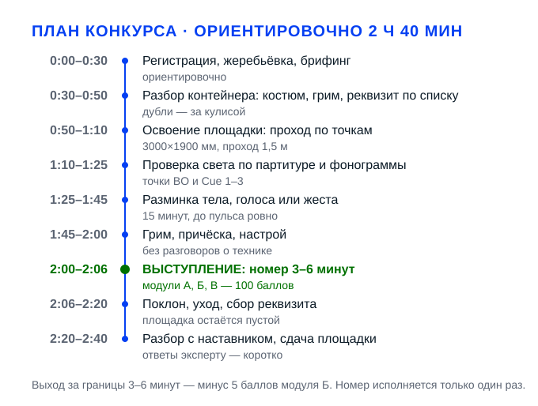
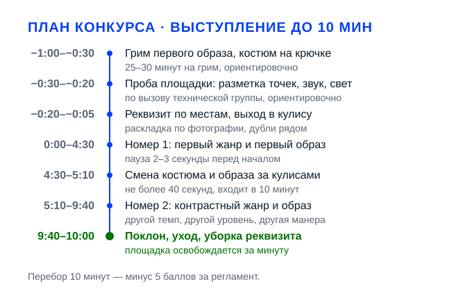
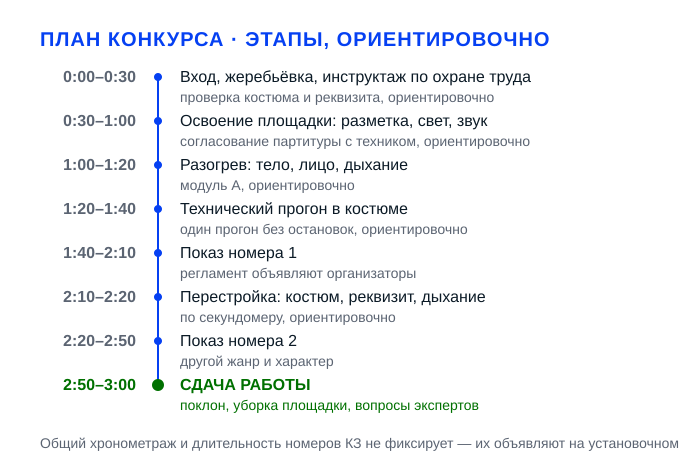

Сценическое мастерство (Р)
Задания ниже — официальные файлы «Абилимпикс» (источник: abilympics-russia.ru), разложенные по категориям. Решения написаны по тексту задания, регламенту и критериям оценки; в них указано, что именно проверяет эксперт.
Школьник
14–16 лет, базовый уровень заданияВыдержка из официального конкурсного задания: страницы, относящиеся к категории «Школьник» (стр. 7–8 источника).
Пошаговое решение
Разбор по официальному конкурсному заданию чемпионата «Абилимпикс» 2026 для категории «Школьники». Один тур, один номер на 3–6 минут в одном из жанров эстрадного искусства: пластические жанры, иллюзионизм, клоунада и буффонада, театр кукол, оригинальный жанр, жестовый театр и жестовое пение. Номер исполняется один раз, поэтому готовится под единственный показ и запасные варианты. Сто баллов распределены по модулям: актёрское мастерство — 35, общая культура выступления — 35, профессиональное мастерство — 30. Внутри оценивают актёрские данные (10), создание образа (10), выразительные средства (10), артистизм (10), сценический образ (10), сложность репертуара (10) и регламент (5). До показа в оргкомитет сдаётся программа выступления, а при световом решении — партитура света. Площадка 3000 на 1900 миллиметров, проход не менее 1,5 метра. Ниже — 46 шагов от чтения задания до сдачи площадки.

Задача 1. Прочитать задание и выбрать жанр, в котором номер будет сильнымМодуль А · 35 баллов, модуль В · 30 баллов
До первой репетиции нужно превратить конкурсное задание в четыре жёсткие рамки: один номер, от трёх до шести минут, один тур, жанр строго из перечня эстрадного сценического искусства. Внутри этих рамок выбирается материал, который вы действительно умеете играть, а не тот, который красиво выглядит в чужих записях. Здесь же выясняется, где именно в номере лежат 100 баллов, потому что номер, поставленный «просто красиво», набирает в лучшем случае половину.
Действие 1.1. Разобрать рамки задания
Шаг 1.1.1
Берём распечатку конкурсного задания и выписываем на отдельный лист пять условий, которые нельзя нарушить: один тур, один творческий номер, длительность от трёх до шести минут, жанр строго из перечня, программа выступления сдаётся в оргкомитет чемпионата заранее. Рядом ставим дату сдачи программы, чтобы она не оказалась «сегодня вечером». Лист вешаем над столом, где идёт подготовка: к нему вы будете возвращаться каждый раз, когда номер начнёт расползаться по времени.
Рамки — не формальность. За соблюдение временного регламента в модуле Б стоят отдельные 5 баллов, а номер, выпавший из жанрового перечня, нечем оценивать по критерию «соответствие жанру» из модуля В. Программа, не сданная вовремя, лишает экспертов возможности сверить заявленное с показанным, и любое расхождение потом толкуется не в вашу пользу, потому что сверять будет не с чем.
На листе пять пунктов, и в каждом стоит конкретика: не «минут пять», а «четыре минуты десять секунд», не «театральный жанр», а «жестовое пение». Проверьте себя простым вопросом: если эксперт попросит назвать жанр и хронометраж, вы ответите сразу, не заглядывая в бумаги и не советуясь с наставником?
Обычная ошибка — прочитать задание один раз и унестись в идею, а через месяц обнаружить, что номер идёт восемь минут и жанр в нём «свой собственный». Переделывать готовый номер под регламент дороже, чем выбрать рамку сразу: минуту снимают за счёт кульминации, и номер теряет как раз то, за что в модуле В дают 10 баллов за сложность репертуара.
Эксперт сверяет жанр и хронометраж по программе выступления ещё до выхода на площадку, а на самом номере держит перед собой секундомер. Несовпадение заявленного жанра с показанным фиксируется в протоколе отдельной строкой.
Шаг 1.1.2
Отдельным столбцом записываем, что меняет ваша нозология в самом номере, а не в оформлении бумаг. При нарушении слуха естественно работает жестовый театр и жестовое пение: музыкальный ритм вы держите телом, а не ухом, поэтому в репетиции добавляется счёт на восемь и работа с вибрацией динамика. При нарушении зрения номер строится на звуке, голосе и точной разметке площадки, а свет используется как акцент, а не как носитель смысла. При нарушении опорно-двигательного аппарата сильнее всего выглядят кукольный номер, клоунада и оригинальный жанр с работой руками.
Задание оценивает органичное существование на сцене и владение сохранными выразительными средствами, то есть теми каналами, которые у вас работают уверенно: в модуле А это 10 баллов за актёрские данные и 10 за выразительные средства. Номер, построенный против собственной природы, выглядит как борьба с телом или с тишиной, и эксперт видит напряжение раньше, чем замысел.
Проверьте по записи: в номере нет ни одного места, где вы «тянете» то, что не работает. Если в пантомиме вы всё время прячете левую руку, а в жестовом пении сбиваетесь на шёпот, значит жанр выбран против себя. Хороший признак — после прогона вы устаёте ровно, без ощущения, что тащили номер на одном участке тела.
Самая дорогая ошибка — взять жанр, который «в тренде» или который показывает знакомый коллектив, и потом весь номер компенсировать усилием. На сцене это читается как зажатость: плечи подняты, дыхание сбито, жест не дотянут до конца. Эксперт снимет баллы за органику, а зритель просто не поверит происходящему.
Эксперт смотрит не на амплитуду движения, а на то, свободно ли тело в тех участках, которые номер использует. Зажатая кисть или поднятое плечо в крупном плане площадки видны сразу, и это первое, что отмечают в графе «актёрские данные».
Шаг 1.1.3
Принимаем как правило: номер будет исполнен только один раз, второго показа не будет. Значит, всё, что может отказать, должно иметь запасной вариант, отрепетированный так же, как основной. Записываем три страховки: номер без фонограммы, номер при общем свете вместо выстроенного и номер с укороченной серединой на случай, если площадка даст меньше пространства. Каждую страховку проигрываем на репетиции целиком, а не проговариваем словами.
Один показ означает, что цена любой накладки равна цене всего выступления, а в модуле В 5 баллов стоят умение владеть собой и контакт с аудиторией. Участник, у которого на сцене отказала музыка и который продолжает номер в тишине, получает эти баллы; участник, который остановился и стал ждать, теряет и их, и впечатление от всей предыдущей работы.
Признак готовности простой: вы можете назвать вслух, что делаете в первые пятнадцать секунд после отказа музыки, света и реквизита. Если ответ формулируется как «ну, посмотрю по ситуации», страховки нет, есть надежда на удачу.
Чаще всего страховку не делают из суеверия: «если отрепетирую отказ, он случится». На практике отказ случается независимо, а отсутствие запасного варианта превращает одну техническую неполадку в остановленный номер. Восстановиться после остановки почти невозможно: зал уже вышел из общего дыхания.
Эксперт оценивает, как участник держит номер при любом сбое, и часто именно эпизод с накладкой становится решающим при равных баллах. Смотрит на дыхание и на то, вернулся ли участник в темпо-ритм после помехи.
Действие 1.2. Выбрать жанр и материал номера
Шаг 1.2.1
Выписываем все шесть разрешённых жанров в столбик: пластические жанры с пантомимой и театром теней, иллюзионизм, клоунада и буффонада, искусство театра кукол, оригинальный жанр, жестовый театр и жестовое пение. Напротив каждого ставим оценку от одного до трёх по двум признакам: сколько у вас реальных часов практики в этом жанре и сколько баллов он потенциально даёт по критерию сложности. В работу берём жанр, где оба числа не ниже двух, и второй как запасной.
Сложность репертуара — самый весомый отдельный критерий во всём задании: 10 баллов из 100, и они даются за наличие цирковых и иллюзионных трюков, сложных приёмов кукловождения, оправданных смен костюма и образа. Жанр, в котором у вас нет школы, сложности не даст, зато заберёт баллы за органику, поэтому выбор идёт по пересечению умения и потенциальной сложности.
В таблице два жанра с оценками не ниже двух по обоим признакам, и по каждому вы можете назвать конкретный элемент, который собираетесь показать: не «буду иллюзионистом», а «три карты, платок и распиливание ленты». Если элемент назвать не получается, жанр выбран по названию, а не по содержанию.
Классическая ловушка — выбрать иллюзионизм потому, что «это эффектно», не имея ни одного отработанного трюка. Номер превращается в набор неуверенных движений, эксперт видит провалы в технике, и 10 баллов за сложность оборачиваются потерей за исполнительские навыки. То же с театром теней: без выверенной геометрии рук он распадается на серые пятна.
Эксперт определяет жанр по первым секундам и дальше смотрит, владеет ли участник техникой этого жанра. В протоколе отмечается соответствие жанру и уровень владения приёмами, а не общая эффектность.
Шаг 1.2.2
Проверяем материал на возраст и на право быть исполненным именно вами. Берём отрывок или сценку, где герой ваш ровесник или где возраст вообще не читается, и убираем всё, что требует взрослого опыта: любовные сцены, бытовую жестокость, взрослую иронию. Текст, если он есть, читаем вслух и вычёркиваем слова, которых вы не сказали бы в жизни: на сцене они звучат фальшиво, и это слышно даже при хорошей дикции.
За конкурсный репертуар в модуле А дают 5 баллов и оценивают двумя словами: правильно подобран и соответствует возрасту. Это небольшая сумма, но она работает как множитель: несоответствие возрасту заставляет эксперта смотреть на всё остальное строже, потому что он видит, что герой не ваш.
Прочитайте текст вслух перед человеком, который вас не репетировал, и спросите одно: верит ли он, что это говорите вы. Второй признак — после прогона не остаётся ощущения, что вы играли «взрослого дядю» или «маленькую девочку»; возраст в номере нейтрален.
Самая частая ошибка — взять сильный взрослый монолог, потому что он «выигрышный». Подросток в нём изображает переживание, которого не было, и зал видит старательную имитацию: голос идёт вниз искусственно, глаза ищут подсказку. Теряются и 5 баллов за репертуар, и часть баллов за перевоплощение.
Эксперт сверяет возраст героя с возрастом участника и смотрит на программу выступления: там должно быть понятно, что за материал и откуда он взят. Вопрос «почему вы выбрали именно это» задают чаще, чем кажется.
Шаг 1.2.3
Формулируем тему и сверхзадачу номера одним предложением каждая, письменно, крупными буквами на листе. Тема отвечает на вопрос «о чём это», сверхзадача — «чего я добиваюсь от зала»: чтобы засмеялись в конкретном месте, чтобы стало тихо, чтобы поверили в чудо. Формулировки держим короткими, без слов «гармония», «философия» и «внутренний мир», и вешаем лист рядом с рамками задания.
Сверхзадача — тот инструмент, которым потом проверяется каждая мизансцена: если жест не работает на неё, жест лишний. Без письменной формулировки номер обрастает красивыми деталями, которые ничего не делают, а в модуле Б за смысловую и эмоциональную составляющую дают 5 баллов, и они как раз про читаемость смысла.
Проверка жёсткая: дайте прочитать формулировку человеку, который номер не видел, и попросите пересказать своими словами. Если он пересказал близко к смыслу, формулировка рабочая. Если начал уточнять «а в каком смысле», значит тема сформулирована общими словами.
Ошибка — держать тему в голове и считать, что она очевидна. Тогда на сцене появляется набор эффектных поз, каждая из которых сама по себе хороша, а вместе они не складываются в историю. Эксперт в графе «эмоциональность представления» отметит, что смысл не читается, и снимет 5 баллов.
Эксперт формулирует для себя тему номера после просмотра, и если его формулировка совпала с вашей, это и есть критерий читаемости. Расхождение обычно означает, что начало номера не задаёт условия задачи.
Действие 1.3. Сверить номер с критериями оценки
Шаг 1.3.1
Чертим таблицу на три столбца по модулям и вписываем все критерии с баллами: в модуле А актёрские данные 10, репертуар 5, создание образа 10, выразительные средства 10; в модуле Б артистизм 10, сценический образ 10, эмоциональность 5, чувство стиля 5, регламент 5; в модуле В постановка 5, оригинальность 5, дополнительные средства 5, сложность 10, владение собой 5. В третьем столбце напротив каждого критерия пишем, в какой именно момент номера он набирается, с указанием секунды.
Сумма по трём модулям даёт ровно 100 баллов, и раскладка показывает, что 35 баллов модуля А и 35 модуля Б набираются существованием на сцене, а не трюками. Таблица превращает подготовку из «порепетируем ещё» в адресную работу: видно, какие критерии у вас не закрыты вообще, а какие закрыты дважды, и это позволяет не тратить репетиции на уже сделанное.
В таблице нет пустых клеток в третьем столбце, и напротив каждого критерия стоит конкретный эпизод, а не «по всему номеру». Если напротив «выразительные средства» написано «везде», значит критерий не отработан: он должен читаться в одном-двух местах, куда смотрит эксперт.
Типичная ошибка — строить номер вокруг одного любимого критерия, чаще всего сложности, и не закрывать культуру выступления. Участник показывает рискованный трюк, но выходит на площадку в мятой футболке и без выстроенного поклона, и теряет 10 баллов за сценический образ и 5 за регламент.
Эксперт заполняет оценочный лист по этим же критериям и после номера сверяет свои пометки с коллегами. Критерии, по которым мнения расходятся больше чем на два балла, обсуждаются отдельно, поэтому важно, чтобы эпизод был очевиден всем.
Шаг 1.3.2
Проверяем номер на наличие того, что даёт максимум в модуле В: трюковой или технически сложный элемент, оправданная смена костюма или образа, работа с предметом или куклой. Если ни одного такого элемента нет, добавляем один, ровно один, и ставим его в верхней трети номера, до четвёртой минуты. Одновременно прогоняем номер с секундомером и записываем длительность каждой части, чтобы видеть, где образуется запас.
10 баллов за сложность — треть модуля В, и они не появляются от старания, только от конкретного приёма. Оправданная смена костюма тоже считается сложностью, причём она дешевле по риску, чем трюк: переодевание за кулисой на глазах зала требует выверенной логики, но не требует физической страховки. Запас по времени нужен потому, что регламент 3–6 минут оценивается отдельными 5 баллами.
В номере есть элемент, который можно назвать одной фразой и показать в записи отдельным фрагментом. Хронометраж по частям сходится с общим, и разница между самой короткой и самой длинной репетицией не больше пятнадцати секунд: если больше, номер плывёт по темпу.
Ошибка — набивать номер трюками, чтобы «взять сложность». Каждый лишний трюк добавляет риск и время, а регламент в шесть минут не резиновый: два трюка вместо одного отнимают минуту у истории, и номер превращается в цирковую программу без смысла, что стоит баллов за постановку и эмоциональность.
Эксперт отмечает сложность по факту выполнения приёма: получился трюк чисто — балл есть, рассыпался — балла нет, даже если задуман он был сложно. Смену костюма засчитывают, если она оправдана по смыслу, а не сделана ради факта переодевания.
Задача 2. Собрать программу выступления, партитуру света и фонограммуМодуль Б · 35 баллов, модуль В · 15 баллов
Программа выступления — единственный документ, который попадает к экспертам до показа, и по нему они понимают, что именно собираются смотреть. Партитура света и фонограмма — то, без чего номер на чужой площадке превращается в другой номер: свет и звук здесь не украшение, а часть образа, за них в модуле В дают 5 баллов за дополнительные выразительные средства. Всё это готовится заранее и сдаётся в срок, потому что на площадке техники работают по вашим бумагам, а не по вашей памяти.
Действие 2.1. Написать и сдать программу выступления
Шаг 2.1.1
Собираем программу на одном-двух листах и начинаем с шапки: название номера, фамилия и имя участника, категория «Школьники», компетенция «Сценическое мастерство», жанр из официального перечня, точный хронометраж до секунды, автор литературного или музыкального материала. Ниже идёт блок содержания: о чём номер в двух-трёх предложениях, что происходит от начала до конца, какие выразительные средства заняты. Завершает лист техническая часть: сколько человек на площадке, какой реквизит вносят, что нужно от света и звука.
Программа показывает профессиональный исполнительский и артистический уровень ещё до выхода, и по ней эксперт сверяет жанр, хронометраж и заявленные средства. Кроме того, это ваш инструмент защиты: если на площадке не окажется того света, который вы просили, наличие письменной заявки переводит вопрос из «участник не разобрался» в «площадка не обеспечила», и это разные последствия для оценки.
Программу читает человек, который номер не видел, и после чтения может пересказать сюжет и назвать жанр. В шапке нет ни одного оборота «примерно» и «около»: только точные минуты, секунды и названия. Техническая часть умещается в один экран и не требует пояснений голосом.
Самая частая ошибка — написать программу как афишу: эпитеты, восклицательные знаки, ни слова о том, что реально происходит на площадке. Эксперт не может соотнести заявленное с показанным и оценивает номер «с нуля», а техник не понимает, что включать, и ставит общий свет.
Эксперт читает программу до показа и держит её перед собой во время номера. Отдельно проверяется, совпадают ли заявленный жанр, хронометраж и набор средств с тем, что происходит на сцене.
Шаг 2.1.2
Переписываем описание номера языком критериев, без художественных эпитетов. Вместо «пронзительная история одиночества» пишем так: герой входит, садится, трижды пытается заговорить с воображаемым собеседником, на третьей попытке голос пропадает, герой уходит. В описании обязательно называем, где происходит смена образа или костюма и где находится трюковой элемент, потому что именно эти места эксперт ищет в номере.
Оценка идёт по 100 баллам, разложенным на пятнадцать критериев, и эксперту нужно видеть, где именно критерий набирается. Описание действиями помогает и вам: оно показывает, есть ли в номере событие, или это последовательность красивых поз. Номер без событий теряет баллы за постановку и за эмоциональность, сколько бы сил в него ни вложили.
В описании каждое предложение начинается с глагола действия, и по нему можно показать номер, не видя его. Если из текста нельзя понять, чем заканчивается номер, значит в номере нет финала, а не в тексте нет слов.
Ошибка — описывать замысел вместо действий: «это номер о том, как важно оставаться человеком». Эксперт не обязан разделять вашу трактовку, он смотрит на сцену, и если событий нет, описание начинает работать против участника: заявлено много, показано мало.
Эксперт сверяет описание с событиями на сцене и в спорных случаях опирается на программу. Расхождение в пользу программы бывает редко: оценивают показ, а документ лишь объясняет замысел.
Шаг 2.1.3
Сдаём программу в оргкомитет в срок, указанный в задании, и делаем это так, чтобы факт сдачи был подтверждён: распечатку отдаём под подпись или отправляем письмом с уведомлением, а себе сохраняем копию с датой. Рядом с копией складываем вторую копию в файл для площадки: одну оставляем у наставника, вторую берём с собой на конкурс, потому что техникам удобнее смотреть в бумагу, чем в телефон.
Программа, сданная вовремя, — условие допуска к показу, и её отсутствие обсуждается до конкурса, а не после. Подтверждение сдачи защищает от ситуации, когда документ потерялся в переписке: восстановить его за час до выхода нельзя, а нервы перед номером стоят дороже, чем пять минут на оформление.
У вас на руках подтверждение с датой и две печатные копии, одна из которых лежит в папке с реквизитом. Проверьте на копии, что видны все страницы и что хронометраж совпадает с последней репетицией, а не с версией месячной давности.
Типичная ошибка — отправить программу «куда-то» и не проверить, дошла ли она, а на конкурсе выяснить, что в списке участников нет вашего жанра. Вторая — сдать программу с хронометражом, который потом вырос: после сокращений номер стал короче, а в документе остались старые минуты, и регламент формально нарушен.
Главный эксперт сверяет список участников с программами до начала тура. Несоответствие хронометража обнаруживается прямо на выступлении, и тогда пометка идёт в протокол.
Действие 2.2. Расписать партитуру света по точкам
Шаг 2.2.1
Строим таблицу из шести столбцов, как в приложении к заданию: номер точки, название точки, описание света, триггер или длительность, характер перехода, техническое описание. Разбиваем номер на пять-семь точек, не больше: вступление, появление героя, первая перемена настроения, кульминация, финал. В столбец триггера пишем не время, а событие в музыке или в действии, например «в музыке появляется скрипка» или «герой разжимает кулак», потому что техник работает по событию, а не по секундам.
Задание прямо требует заранее предоставить партитуру номера с хронометражем, если в выступлении есть световое решение, и в примере это сделано именно таблицей с точками Blackout, Cue 1, Cue 2, Cue 3. Свет в модуле В входит в 5 баллов за дополнительные выразительные средства, но эти баллы дают за работающий свет, а не за количество приборов: пять точек, каждая из которых меняет состояние, читаются сильнее двадцати случайных переливов.
В таблице пять-семь строк, у каждой есть триггер-событие и характер перехода: резко или плавно. Проверьте, что ни одна точка не приходится на слово или движение, которое может сместиться на репетиции: если триггер плавает, свет уедет вместе с ним.
Ошибка — просить «красивый свет на весь номер» и не описывать точки. Техник включает общую заливку, номер теряет объём, а эксперт отмечает, что дополнительные средства не использованы. Вторая ошибка — ставить точку на тихую фразу: в зале её не слышно, техник жмёт кнопку не вовремя.
Эксперт смотрит, работает ли свет на образ: затемнение перед выходом, акцент на кульминации, возврат к общему свету на поклоне. Свет, который просто меняет цвет, баллов не приносит.
Шаг 2.2.2
Согласуем партитуру с техником площадки заранее, на связи или на технической встрече, и проговариваем вслух каждую точку, показывая её в записи номера. Отдельно обсуждаем два вопроса: есть ли на площадке стробирование и сколько приборов можно занять под ваш номер. Сразу договариваемся о страховочном варианте: если приборов меньше, весь номер идёт при общем свете с одним затемнением в начале и в конце.
Площадки разные, и часть эффектов из партитуры может физически не существовать: стробирование есть не везде, а заливка зависит от количества приборов. Согласование заранее превращает это в известное условие, а незнание в момент выхода даёт провал в 5 баллов за дополнительные средства и сбивает участника, который ждал темноты, а получил ровный свет.
У вас есть ответ техника по каждой строке: подтверждено, заменено или невозможно. Страховочный вариант проговорён и записан в той же таблице последней строкой, чтобы в день конкурса не выяснять его на бегу.
Частая ошибка — привезти партитуру в день выступления и отдать её технику за десять минут до выхода. Техник не успевает ввести точки в пульт, и номер идёт в общем свете, а участник, рассчитывавший на темноту, теряет ориентацию на площадке.
Эксперт отмечает слаженность номера со светом: попали ли точки в события. Свет, включённый на полсекунды позже, читается как небрежность постановки и снижает общее впечатление от номера.
Действие 2.3. Подготовить фонограмму и звук
Шаг 2.3.1
Готовим фонограмму одним файлом, без склеек из разных источников: формат WAV или качественный MP3, частота 44,1 кГц, стерео, нормальный уровень без клиппинга. Имя файла делаем читаемым: фамилия, жанр, название, хронометраж, например «Иванов_жестовое-пение_Колыбельная_4-10.wav». Записываем три носителя: флешка, второй носитель и файл, отправленный себе в облако, чтобы не зависеть от одной вещи, которую можно потерять в раздевалке.
Звук — часть сценического образа, и в задании он назван прямо: выполнение предполагает использование света и звука для создания образа. Если фонограмма не откроется, номер останавливается, а в модуле В 5 баллов стоят умение владеть собой: продолжение в тишине возможно только тогда, когда вы репетировали этот вариант.
Файл открывается на чужом компьютере и на телефоне, длительность совпадает с заявленной до секунды, в начале нет щелчка и случайной тишины. Прослушайте первые и последние пять секунд отдельно: именно там чаще всего оказывается обрезанный вдох или чужой голос.
Классическая ошибка — привезти музыку в формате, который площадка не читает, или на телефоне с включённым уведомлением. Ещё одна — склеить трек из двух фрагментов в спешке: на стыке слышен провал, и он приходится ровно на кульминацию.
Эксперт оценивает звуковое решение как часть образа и отдельно фиксирует срывы: тишина вместо музыки в середине номера снижает общее впечатление, даже если участник справился.
Шаг 2.3.2
Размечаем фонограмму метками по точкам партитуры и выставляем уровень так, чтобы под музыку был слышен жест и дыхание: просим техника поставить громкость на середину и проверить с вами на площадке, а не на слух из зала. В местах, где музыка уходит на второй план, оставляем паузу в минус шесть децибел, а не полную тишину: полная тишина в зале читается как отказ аппаратуры.
В модуле А 10 баллов даются за внятную речь, дикцию, четкий жест и эмоциональность, и всё это существует только при разумном балансе. Слишком громкая фонограмма съедает дыхание и шаги, слишком тихая заставляет зал напрягаться и терять внимание к действию.
На прогоне попросите человека сесть в последний ряд и пересказать, что происходило: если он не смог назвать ключевые события, значит звук перекрывает игру. Уровень проверяется на площадке заново: в пустом зале и в зале с людьми громкость воспринимается по-разному.
Ошибка — выставить громкость «как дома в наушниках». В зале с мягкими креслами и людьми музыка садится, а участник начинает переигрывать, чтобы его услышали, и теряет органику. Обратная ошибка — заглушить музыкой собственный голос, если номер построен на слове.
Эксперт слушает баланс и отмечает, читается ли текст или жест через музыку. Отдельно смотрит, совпадает ли характер музыки с жанром и образом и нет ли провалов громкости на переходах между частями.
Задача 3. Поставить номер: мизансцены, темпо-ритм, пластикаМодуль В · 30 баллов, модуль А · 35 баллов
Постановка — это не «придумать, что делать», а разложить номер на точные отрезки: где вы стоите, куда смотрите, на какой счёт меняется состояние, чем заканчивается каждый отрезок. В модуле В за постановку, оригинальность и режиссуру дают 15 баллов из 30, а в модуле А 10 баллов стоят актёрские данные, то есть пластика и органичное существование. Всё это набирается только повторяемой формой: импровизация на сцене допустима, но она должна жить внутри выверенной схемы, иначе номер каждый раз разной длины.
Действие 3.1. Выстроить мизансцены и режиссёрскую партитуру
Шаг 3.1.1
Делим номер на пять-семь отрезков и каждому даём название действием: «входит и ищет», «находит и отшатывается», «пытается дотронуться», «понимает, что поздно». Для каждого отрезка записываем три вещи: где находится герой, куда направлено его внимание и чем отрезок заканчивается. Заканчиваться он должен сменой положения тела или сменой состояния, а не просто «дальше по тексту».
Оригинальность исполнения и режиссура номера в модуле В стоят 5 баллов, и эксперт видит режиссуру по тому, есть ли в номере событие и развитие. Номер из отрезков с внятными концами держит внимание зала, а номер «сплошным потоком» провисает на второй минуте, и это сразу отражается на баллах за артистизм и передачу настроения.
Каждый отрезок можно показать отдельно, и он читается как маленькая сцена с началом и концом. Если при показе одного отрезка непонятно, чего герой хочет и чем он занят, отрезок не поставлен, а только намечен.
Типичная ошибка — ставить номер «по музыке»: движения совпадают с ритмом, но не связаны с задачей героя. Получается танец без истории, и эксперт отмечает отсутствие событийного ряда, теряя баллы и за постановку, и за перевоплощение.
Эксперт смотрит на развитие: меняется ли что-то в герое от начала к финалу. Номер, в котором герой всё время одинаков, оценивается как этюд без задачи.
Шаг 3.1.2
Рисуем план площадки на листе в клетку, в масштабе, и наносим на него рабочее пространство: по требованиям к оснащению место участника — 3000 на 1900 миллиметров, проход между рабочими местами не меньше 1,5 метра. Отмечаем точку выхода, точку первой мизансцены, три-четыре ключевые точки перемещений и точку финала. Рядом подписываем, сколько шагов от выхода до первой точки: на чужой площадке это расстояние придётся пересчитывать.
Площадка на конкурсе не та, где вы репетировали: другие кулисы, другая глубина, другой проход. Схема с точками позволяет перенести номер за одну репетицию, не переставляя логику, и сохранить то, что оценивают в модуле Б как сценическое поведение — 10 баллов за общий сценический образ. Без схемы участник выходит и начинает искать, где встать, и первые секунды номера пропадают.
На плане не больше шести точек, и путь между ними не пересекает сам себя. Проверьте, что ни одна точка не находится в первых полутора метрах от кулисы: там вас не видно из боковых секторов зала, особенно при боковом свете.
Ошибка — ставить номер в расчёте на глубину школьного зала и оказаться на площадке, где до задника два метра. Тогда развороты и падения назад становятся опасными, а часть мизансцен просто не существует, и участник начинает импровизировать на ходу, теряя рисунок.
Эксперт смотрит, работает ли участник с пространством: использует ли глубину, не липнет ли к кулисе. Стояние на одной точке весь номер читается как отсутствие постановки.
Шаг 3.1.3
Отдельно репетируем вход и первые десять секунд: из какой точки кулисы вы выходите, с какой скоростью, что делаете телом до первого смыслового движения. Договариваемся с помощником, который даёт вам сигнал за секунду до выхода, и повторяем этот старт не меньше десяти раз подряд, пока он не станет одинаковым. То же делаем с уходом: последняя точка, пауза, разворот, уход, без суеты и без оглядки.
Первые секунды задают то, как зал и эксперт читают жанр, а последние формируют общее впечатление, которое в модуле В стоит 5 баллов. Выход, сделанный на бегу или с задержкой, сбивает световую точку и музыку, а финал, скомканный ради аплодисментов, обнуляет смысл последней сцены.
Запишите старт на видео три раза и сравните: походка, скорость, положение рук должны совпадать. Если различаются, значит старт не отрепетирован, а каждый раз придумывается заново. То же проверьте на уходе: последняя пауза должна быть одинаковой.
Частая ошибка — считать выход «технической частью» и репетировать только сам номер. На конкурсе участник выходит на незнакомую площадку, тормозит у кулисы, ищет глазами зал, и первая световая точка срабатывает в пустоту, а эксперт видит не героя, а человека, который ориентируется в пространстве.
Эксперт отмечает момент выхода отдельно: есть ли готовность, собранность, точная точка. Именно здесь чаще всего видно, сколько было репетиций и репетировался ли выход вообще.
Действие 3.2. Выстроить темпо-ритм и паузы
Шаг 3.2.1
Расписываем темпо-ритм по отрезкам цифрами: медленно, средне, быстро, и обязательно указываем, где происходит перелом. В номере на 4 минуты нормально работает схема «медленно — быстрее — резкий рывок — тихо», и рывок должен приходиться на момент, когда зал уже начал привыкать к темпу. Проставляем в записи номера счёт: на «раз-и-два» делается конкретное движение, а не «примерно в этом месте».
Правильная расстановка пауз и эмоциональность прямо названы в критериях модуля А на 10 баллов, а в модуле Б за эмоциональность представления дают ещё 5. Однообразный темп усыпляет зал через полторы минуты, и дальше даже сильные эпизоды не воспринимаются: внимание уже потеряно, а вернуть его внутри номера почти невозможно.
На прогоне отметьте, в какие моменты зал делает вдох или смеётся. Если таких точек нет вообще, темп ровный и номер не дышит. Если точки есть, но не там, где вы планировали, значит перелом стоит раньше, чем вы думаете.
Ошибка — держать быстрый темп с первой секунды «чтобы не было скучно». Зал не успевает привыкнуть, эмоция не нарастает, и к финалу участник выдыхается физически, а зритель — эмоционально. Номер заканчивается на подъёме, но никто не успевает его заметить.
Эксперт отмечает, держит ли номер внимание и есть ли в нём дыхание. Резкая смена темпа в правильной точке читается как режиссёрская работа и добавляет к общему впечатлению.
Шаг 3.2.2
Расставляем паузы трёх видов: пауза-вдох перед важным движением на один счёт, пауза-удар после кульминации на два-три счёта и финальная пауза перед уходом не меньше трёх секунд. Каждую паузу держим телом, а не только остановкой: взгляд остаётся в точке, вес тела перенесён, дыхание не сбито. Записываем длительность пауз в партитуру, чтобы на прогоне проверять их секундомером.
Пауза — самый дешёвый и самый недооценённый инструмент: она стоит ноль движений и даёт залу время понять, что произошло. В критериях модуля А правильная расстановка пауз названа прямо, и без них даже технически чистый номер выглядит как упражнение, а не как история.
На записи паузы видно как остановку действия, а не как забывание. Проверьте себя: если во время паузы вам хочется поправить костюм или посмотреть в зал, пауза не наполнена задачей и распадётся на конкурсе.
Типичная ошибка — бояться тишины и заполнять её лишним движением. Номер превращается в непрерывную суету, зал не успевает сопереживать, и кульминация проходит незамеченной. Вторая ошибка — держать паузу «на публику», дольше, чем нужно: зал начинает скучать и шевелиться.
Эксперт смотрит, умеет ли участник держать тишину и не заполнять её суетой. Способность выстоять паузу без лишних движений — один из самых быстрых признаков школы, и её видно с первых секунд номера.
Шаг 3.2.3
Если в номере есть слово, работаем над дыханием и дикцией: каждое предложение начинаем на опоре, добираем воздух в паузе, а не посреди фразы, согласные проговариваем отдельно, особенно в конце слов. Тренируем на скороговорках по десять минут в день и читаем текст, стоя в дальнем углу зала, чтобы слышать себя без микрофона. Если номер без слов, тот же принцип переносим на жест: каждая фаза жеста имеет начало, опору и завершение.
Внятная речь, дикция и четкий жест в модуле А стоят 10 баллов и оцениваются как сохранные выразительные средства. На площадке 3000 на 1900 миллиметров без микрофона слышно только опёртый звук: шёпот и придыхание не долетают до последнего ряда, а невнятный конец фразы съедает смысл.
Попросите человека встать в дальний конец помещения и повторить за вами последние слова каждой фразы. Если он угадывает, а не слышит, дикция не готова. Запишите себя на телефон и послушайте: на записи слышно, где кончается воздух.
Ошибка — репетировать в маленькой комнате, где всё слышно при любом дыхании. На площадке голос садится в первые сорок секунд, концы фраз пропадают, и эксперт, сидящий в третьем ряду, теряет смысл. То же с жестом: недотянутый жест в зале читается как отсутствие движения.
Эксперт оценивает дикцию и четкость жеста по тому, доходит ли смысл до дальних рядов. Отдельно отмечается, не срывается ли голос к финалу и не теряется ли амплитуда жеста на последней трети.
Действие 3.3. Вычистить пластику и технику жанра
Шаг 3.3.1
Разбираем пластический рисунок по частям тела: отдельно руки, отдельно корпус, отдельно ноги, и добиваемся, чтобы каждая часть заканчивала движение внятно, без остаточного болтания. Работаем медленно, в половинном темпе, останавливаясь в крайних точках и проверяя, держится ли поза без напряжения. Затем соединяем части и повторяем в полном темпе, но не больше трёх раз подряд: дальше тело начинает халтурить, а ошибка закрепляется.
Актёрские данные — пластика, мимика, хореография, органичное существование на сцене — в модуле А стоят 10 баллов, и это самая большая отдельная сумма после образа. Чистота рисунка важнее амплитуды: широкий, но небрежный жест читается как отсутствие школы, а небольшой, но точный — как владение телом.
Снимите себя на видео и остановите кадр в крайних точках: локоть не провисает, кисть дотянута, вес тела на опоре. В движении проверьте, не тянется ли за рукой плечо: если тянется, движение идёт от плеча, а не от центра.
Частая ошибка — гнаться за амплитудой и размахом, теряя точку. В зале такой жест выглядит как взмах, а не как смысл, и эксперт снижает оценку за актёрские данные. Вторая ошибка — заучивать движение в быстром темпе: неверная форма закрепляется, и переучивать приходится дольше.
Эксперт смотрит на крупные формы и на мелочи одновременно: положение кисти, стопы, подбородка. Именно по мелочам он отличает выученный номер от выращенного.
Шаг 3.3.2
Если в номере есть трюк, приём кукловождения или иллюзионный пасс, выносим его в отдельную тренировку и повторяем по схеме «медленно двадцать раз, в темпе десять, в контексте номера пять». Проверяем страховку: подстилка, если есть падение, закреплённый реквизит, дистанция до кулисы не меньше метра. Трюк ставим так, чтобы после него было время восстановить дыхание, даже если он идёт в быстрой части.
Сложность репертуара — 10 баллов, самая большая сумма в модуле В, и она начисляется только за чистый приём. Трюк, выполненный с риском падения, опасен: травма на чемпионате останавливает выступление, а неполный трюк даёт ноль баллов и снимает баллы за общее впечатление.
Трюк получается десять раз подряд без сбоя, в том числе уставшим, на чужом реквизите и на другой площадке. Проверьте время восстановления после него: если дыхание не возвращается за две-три секунды, трюк стоит перенести раньше или упростить.
Самая опасная ошибка — оставить трюк «на удачу» и не отработать отказ. На конкурсе он не получится один раз из десяти, и участник либо остановится, либо начнёт повторять, разрушая номер. Второй вариант — усложнять трюк за неделю до выступления: тело не успевает закрепить навык.
Эксперт смотрит на чистоту выполнения и на то, встроен ли трюк в историю. Трюк ради трюка баллов за постановку не приносит, а сорванный трюк фиксируется отдельно.
Действие 3.4. Оправдать смену образа и работу с предметом
Шаг 3.4.1
Если в номере есть смена костюма или образа, выстраиваем её как отдельную сцену: продумываем, чем занят герой в момент переодевания, где стоит помощник, за сколько секунд снимается и надевается каждая вещь. Смену делаем на глазах зала только тогда, когда она сама по себе является действием, иначе уводим её за кулису и заполняем паузу движением. Замеряем время переодевания трижды и берём худший результат, прибавив две секунды запаса.
Оправданные смены костюма и образа прямо названы в критерии сложности репертуара на 10 баллов, и слово «оправданные» здесь ключевое. Смена, которая не мотивирована историей, читается как техническая пауза, а затянувшаяся пауза ломает темпо-ритм и стоит баллов за регламент.
Смена укладывается в отведённые секунды с запасом, и после неё вы не поправляете костюм на ходу. Проверьте по записи: понятно ли залу, почему герой переоделся. Если понятно только вам, смену надо мотивировать действием.
Классическая ошибка — сделать смену «для баллов» в середине номера и потерять на ней двадцать секунд. Темп падает, зал выходит из истории, и после переодевания приходится начинать заново. Ещё одна ошибка — молния, которая заедает: на конкурсе это остановка номера.
Эксперт отмечает и факт смены, и её оправданность. Смена, которая выглядит как трюк с переодеванием, оценивается выше, чем смена за кулисой, но только если она выполнена чисто.
Шаг 3.4.2
Учимся работать с предметом так, чтобы он был продолжением руки: берём реквизит на репетицию каждый раз, а не «потом с предметом», и повторяем переходы с ним отдельно. Определяем для каждого предмета три точки: где он лежит до номера, где оказывается в ключевой момент и куда уходит после. Проверяем, что предмет не мешает жесту: если мешает, меняем размер или вес, а не подстраиваем тело.
В модуле В 5 баллов дают за использование бутафории и театрального реквизита, а в модуле Б 10 баллов стоят костюм, реквизит и сценическое поведение. Предмет, появившийся в руке неожиданно, разрушает образ: зал видит, что актёр держит вещь, а не герой пользуется вещью.
Каждый предмет имеет своё место, и после прогона ничего не остаётся на площадке. Проверьте с закрытыми глазами: вы можете взять нужную вещь из нужной точки, не глядя. Если нет, на сцене вы будете искать её глазами.
Ошибка — репетировать без реквизита и впервые взять его на площадке. Предмет оказывается тяжелее, скользит или цепляется за костюм, и участник тратит внимание на борьбу с ним вместо игры. Вторая ошибка — слишком много предметов: каждый требует своей точки и своего времени.
Эксперт смотрит, живёт ли предмет в номере: поднят ли он вовремя, использован ли по назначению, убран ли в финале. Брошенный на площадке реквизит снижает оценку за сценическое поведение.
Задача 4. Подготовить костюм, грим, реквизит и декорацииМодуль Б · 20 баллов, модуль В · 5 баллов
В задании прямо сказано: выполнение предполагает наличие костюма, использование света и звука для создания образа, а до выступления участник готовит реквизит, сценический костюм и грим. За общий сценический образ в модуле Б дают 10 баллов, за эмоциональность и стиль — ещё 10, а за декорации и бутафорию в модуле В — 5. Костюм здесь не украшение, а часть роли: он меняет походку, осанку и то, как вас читают с последнего ряда.
Действие 4.1. Собрать костюм и обувь
Шаг 4.1.1
Собираем костюм от образа, а не от красоты: сначала выписываем три признака героя, которые должны читаться с расстояния, например возраст, занятие и состояние, и только потом подбираем вещи, которые эти признаки дают. Проверяем силуэт на расстоянии пяти метров: если с пяти метров не видно, кто перед вами, костюм слишком мелкий по деталям. Цвет сверяем со светом: под синей заливкой красный уходит в чёрный, а белый становится голубым.
Общий сценический образ в модуле Б стоит 10 баллов и оценивается вместе с костюмом, реквизитом и сценическим поведением. Костюм, который не читается из зала, работает против номера: эксперт видит аккуратную вещь, но не видит персонажа, и баллы за перевоплощение тоже проседают.
Попросите человека отойти на пять метров и назвать три признака героя, глядя только на костюм. Если он называет не то, что вы задумали, костюм говорит не о том. Второй тест — фотография при том свете, который заявлен в партитуре.
Самая частая ошибка — взять красивый костюм из проката, который не имеет отношения к герою. Зал видит ребёнка в чужом наряде, и любое сильное место номера читается как школьное представление. Вторая ошибка — тёмные мелкие детали: в зале они превращаются в пятно.
Эксперт оценивает костюм по соответствию образу и по читаемости с расстояния. Отдельно смотрит на опрятность: мятая вещь или торчащая нитка видны даже издалека.
Шаг 4.1.2
Подбираем обувь под движения номера: если есть прыжки, повороты или работа на коленях, обувь должна держать стопу и не скользить по планшету сцены. Проверяем подошву на шероховатость и на сухом, и на слегка влажном полу, проходим в ней весь номер целиком. Каблук и жёсткая подошва допустимы только там, где нет быстрых перемещений, иначе риск падения на разметке.
Безопасность на сцене входит в требования к квалификации, а падение на выступлении обнуляет номер целиком, независимо от того, сколько баллов было набрано до него. Кроме того, обувь меняет походку: в непривычной обуви походка становится осторожной, и герой теряет характер.
В этой обуви вы прошли номер трижды без мозолей и без соскальзываний, стопа не затекает к четвёртой минуте. Проверьте на площадке, а не дома: планшет сцены почти всегда тверже и глаже пола в зале, и сцепление там другое.
Типичная ошибка — репетировать в кроссовках, а выступать в сценических туфлях. На повороте стопа едет, участник ловит равновесие руками, и вся пластика распадается. Ещё одна ошибка — новая обувь в день конкурса: неразношенная пара натирает за первые две минуты.
Эксперт отмечает устойчивость и свободу перемещений. Заминки с равновесием и мелкий осторожный шаг читаются как неподготовленность и снимают баллы за актёрские данные.
Шаг 4.1.3
Делаем полный прогон номера в костюме и обуви, с причёской и реквизитом, и смотрим, что мешает: тянет ли ткань в плечах, цепляется ли подол за реквизит, слышно ли шорох при резких движениях. Всё, что мешает, исправляем до конкурса: подшиваем, закалываем, убираем лишние слои. Отдельно проверяем, как костюм ведёт себя на четвёртой минуте, когда вы вспотели и устали.
Костюм, который не проверен в движении, обнаруживает себя на сцене: шов трещит на кульминации, подол путается в ногах, а шорох ткани попадает в микрофонный подхват. Каждый такой случай стоит баллов за сценический образ и сбивает внимание участника с задачи героя.
После прогона на костюме нет заломов в местах, где тянет, и ничего не слышно, если встать рядом и закрыть глаза. Проверьте швы под мышками и по шаговому шву: именно там рвётся первым. Отдельно посмотрите, не цепляется ли подол за реквизит при наклоне.
Ошибка — примерить костюм стоя перед зеркалом и решить, что он удобен. Ткань, которая не мешает в статике, в прыжке или наклоне ограничивает движение, и участник начинает играть осторожнее, теряя амплитуду и энергию.
Эксперт видит, свободен ли участник в костюме: скованность в плечах и мелкий шаг читаются как неудобная одежда. Замеченная небрежность костюма снижает оценку за общий образ.
Действие 4.2. Сделать грим и причёску
Шаг 4.2.1
Определяем задачу грима: он должен усилить три признака героя, которые не читаются костюмом, и не спорить с освещением. Наносим тон ровно, включая шею и уши, затем работаем бровями и глазами, потому что с пяти метров читаются именно они, а не линия губ. Если в партитуре есть стробирование или резкая смена света, отказываемся от перламутра и блёсток: под импульсным светом они дают блики и превращают лицо в пятно.
Мимика названа в критерии актёрских данных на 10 баллов, и грим работает на её читаемость: без прорисованных бровей и глаз лицо на площадке 3000 на 1900 миллиметров выглядит ровным и невыразительным. Ошибка в гриме стоит дороже, чем его отсутствие, потому что блики и грязный тон эксперт замечает сразу.
Сфотографируйте себя при том свете, который заявлен в партитуре, и посмотрите на снимок с расстояния вытянутой руки, уменьшив его. Если лицо читается как лицо персонажа, грим работает. Проверьте линию роста волос и границу тона на шее: переход должен быть незаметным.
Самая частая ошибка — нанести тон только на лицо, оставив шею своего цвета. В зале это выглядит как маска, и эксперт видит непрофессиональный грим. Вторая ошибка — яркие тени для сцены с холодным светом: они дают грязный оттенок.
Эксперт смотрит на грим как на часть образа, а не как на косметику. Отдельно отмечается аккуратность: потёкшая тушь к финалу читается как небрежность.
Шаг 4.2.2
Делаем причёску так, чтобы она выдерживала весь номер: закалываем всё, что может выбиться, фиксируем невидимками крест-накрест и проверяем наклонами головы вниз и в стороны. Если по образу нужны распущенные волосы, продумываем, что они делают во время трюка или падения: пряди не должны закрывать лицо в ключевой момент. Собираем маленький ремонтный набор: невидимки, резинка, салфетки, ватные палочки, тональный карандаш.
Причёска входит в общий сценический образ, за который в модуле Б дают 10 баллов, и она же влияет на мимику: прядь, упавшая на глаз, заставляет участника смаргивать и разрушает крупный план. Ремонтный набор нужен потому, что выход часто идёт после ожидания в закулисье, где жарко и душно.
После трёх наклонов головы и одного быстрого поворота ни одна прядь не выходит из формы. Проверьте на записи момент кульминации: лицо не закрыто волосами. Ремонтный набор собран и лежит у помощника, а не в сумке в раздевалке.
Ошибка — сделать красивую причёску, которая рассчитана на фото, а не на движение. Через минуту пряди выбиваются, участник начинает их поправлять рукой посреди номера, и жест, который должен был быть смысловым, читается как бытовой.
Эксперт замечает, трогает ли участник лицо и волосы во время номера. Такие движения читаются как выход из образа и снижают оценку за перевоплощение, а также за сценическое поведение.
Действие 4.3. Подготовить реквизит, бутафорию и декорации
Шаг 4.3.1
Составляем список реквизита построчно: название, размер, вес, где стоит до номера, кто выносит, куда убирает. На каждый хрупкий или ключевой предмет делаем дубль и держим его за кулисой у помощника. Всё складываем в один контейнер с описью на крышке, чтобы на площадке не искать по сумкам, и подписываем контейнер фамилией. Второй экземпляр списка держим у наставника.
В модуле В 5 баллов дают за использование дополнительных выразительных средств, включая бутафорию и театральный реквизит, а в модуле Б реквизит входит в общий сценический образ. Потерянный предмет останавливает номер: искать его в закулисье во время выступления невозможно, а заменить нечем.
По списку можно собрать контейнер за три минуты, и после сборки не остаётся ни одной вещи без строки. Проверьте дубли: они лежат отдельно и подписаны, иначе в спешке вы возьмёте второй экземпляр вместо первого.
Типичная ошибка — привезти реквизит в двух пакетах без описи и на площадке обнаружить, что ключевой предмет остался в автобусе. Вторая ошибка — положиться на площадку: в перечне оборудования по этой компетенции стоит «не требуется», значит всё своё.
Эксперт смотрит, как участник обращается с реквизитом: подготовлен ли он заранее, всё ли на месте, нет ли лишних поисков. Это часть оценки сценического поведения.
Шаг 4.3.2
Проверяем каждый предмет на безопасность и на площадке, и в репетиции: нет ли острых кромок, тяжёлых элементов на длинной ручке, стекла и открытого огня без согласования. Декорации делаем лёгкими и устойчивыми, с грузом в основании, и проверяем, не падают ли они от сквозняка или от вашего прохождения рядом. Всё, что ставится на планшет, помечаем снизу, чтобы техники вернули предмет на место после уборки.
Требования охраны труда и техники безопасности действуют на площадке так же, как критерии оценки, и предмет, упавший в зал или на участника, останавливает выступление. Кроме того, декорация, которая шатается, отвлекает внимание: зал начинает следить за ней, а не за героем.
Каждый предмет стоит устойчиво при толчке рукой средней силы, не имеет острых кромок и весит так, что вы можете поднять его одной рукой. Проверьте проход от кулисы до точки: ничего не мешает и ничего не приходится переступать.
Ошибка — сделать эффектную декорацию из фанеры в полный рост и поставить её без груза. На сцене её качает от движения воздуха, а при быстром проходе она падает. Вторая ошибка — стеклянный реквизит: осколки на планшете означают остановку номера.
Эксперт и технический специалист осматривают площадку до выхода. Замеченная опасность снимает предмет из номера, а вместе с ним и часть баллов за дополнительные средства.
Задача 5. Провести прогоны, размяться и освоить площадкуМодуль Б · 15 баллов, модуль В · 10 баллов
К конкурсу номер должен быть не «выучен», а прожит столько раз, чтобы тело знало его без головы. Прогоны решают три задачи сразу: держат хронометраж в коридоре от трёх до шести минут, за которым следят 5 баллов модуля Б, закрепляют темпо-ритм и проверяют, где номер рассыпается. Отдельная часть — освоение чужой площадки: на разметку, свет и звук уходит немного времени, и это время надо потратить до выхода, а не в первые секунды номера.
Действие 5.1. Прогнать номер и уложить его в регламент
Шаг 5.1.1
Строим цикл прогонов: три полных прогона подряд с перерывом в десять минут, затем разбор по видео, затем ещё два прогона. Каждый прогон снимаем на телефон с одной точки, лучше с того места, где будет сидеть эксперт, то есть в третьем-четвёртом ряду. Во время прогона ничего не останавливаем и не поправляем, даже если что-то пошло не так: задача прогона — увидеть номер целиком, а не отрепетировать отдельный кусок.
Номер исполняется только один раз, поэтому способность довести его до конца без остановки — отдельный навык, и он тренируется только полными прогонами. В модуле В 5 баллов стоят умение владеть собой и контакт с аудиторией, и именно на третьем прогоне видно, хватает ли дыхания и внимания на всю дистанцию.
На третьем прогоне номер идёт без остановок и без внутренних подсказок, а видео можно смотреть целиком, не перематывая. Если вы ловите себя на мысли «а что дальше», значит в этом месте нет выученной формы, а не нехватки таланта.
Ошибка — репетировать кусками и ни разу не пройти номер целиком до генеральной. На конкурсе тело добирает энергию на середине, дыхание садится, и вторая половина номера идёт на сопротивлении. Ещё одна ошибка — останавливать прогон на каждой мелочи: так вырабатывается привычка останавливаться.
Эксперт видит ровность номера: держится ли энергия от первой до последней секунды. Провал на второй половине читается как недостаток репетиций, а не как замысел.
Шаг 5.1.2
Замеряем хронометраж по отрезкам, а не только целиком: секундомер в руках помощника на каждом прогоне, отметка времени в конце каждого отрезка. Сравниваем с планом и смотрим, где набегает лишнее: чаще всего это паузы между движениями и «доезды» до точки. Режем не смысл, а пустоты: убираем лишний шаг, сокращаем подход к предмету, склеиваем два прохода в один.
Регламент от трёх до шести минут — это 5 баллов в модуле Б, и они теряются целиком, если номер вышел за границу, даже на двадцать секунд. Замер по отрезкам нужен потому, что общий хронометраж ползёт незаметно: каждый прогон длиннее предыдущего на три-пять секунд, и через месяц разница составляет минуту.
Пять прогонов подряд укладываются в разброс не больше пятнадцати секунд, и целевой хронометраж стоит в середине коридора, примерно четыре с половиной минуты. Запас в обе стороны нужен потому, что на чужой площадке темп всегда слегка меняется.
Типичная ошибка — сокращать номер в день конкурса, вырезая целый эпизод. После такого сокращения рвётся логика: зал не понимает, почему герой вдруг изменился. Вторая ошибка — ускорять темп целиком: номер становится скороговоркой, и паузы, на которых держится эмоция, исчезают.
Эксперт фиксирует время по факту, от первого движения до ухода с площадки. Спорные случаи решает главный эксперт, но запас в двадцать секунд снимает вопрос заранее.
Шаг 5.1.3
Проводим два прогона «с помехами»: один без фонограммы, на счёт вслух, второй при ровном общем свете без точек. Третий вариант — прогон на уменьшенной площадке, обозначенной верёвкой на полу, чтобы почувствовать работу в стеснённом пространстве. После каждого прогона записываем, что именно сломалось и чем вы это заменили, чтобы замена стала частью формы.
На чужой площадке отказывает техника, а не ваша выучка, и второй показ не предусмотрен. Прогон без музыки тренирует внутренний счёт, прогон при общем свете — работу без опоры на темноту, прогон на маленькой площадке — способность ужать рисунок. Всё это прямо влияет на 5 баллов за владение собой в модуле В.
Номер проходит без музыки в том же темпе, с теми же паузами, и зритель, который не знает номера, понимает события. Проверьте по видео: не появилось ли в тишине лишних движений, которыми вы заполняли пустоту.
Ошибка — считать, что техника не откажет, и не проверять запасные варианты. На конкурсе фонограмма не запускается с первого нажатия, участник теряется, и вместо номера получается пауза на десять секунд, которая стоит дороже, чем любая техническая ошибка.
Эксперт оценивает именно поведение в сбое: продолжил ли участник номер, сохранил ли темпо-ритм, вернулся ли в образ. Это одна из самых заметных граф в протоколе.
Действие 5.2. Размяться и настроиться перед выходом
Шаг 5.2.1
За сорок минут до выхода делаем разминку на пятнадцать минут: суставная гимнастика от шеи до стоп, по восемь-десять движений на каждый сустав, затем растяжка на те группы, которые работают в номере. Если в номере есть падения или работа на полу, отдельно разогреваем кисти, колени и поясницу. Заканчиваем разминкой лица: несколько гримас, движение бровями, чтобы мышцы лица были готовы к крупным формам.
Непрогретое тело на первой минуте даёт зажатость, и участник начинает экономить амплитуду, чтобы не потянуть связку. В модуле А актёрские данные стоят 10 баллов, и они снимаются за скованность, которая видна как осторожность в движениях. Разминка ещё и снимает часть волнения: тело, которое разогрето, меньше дрожит.
После разминки пульс ровный, дыхание свободное, ни один сустав не отзывается болью. Проверьте стопы и кисти: они должны быть тёплыми. Если какая-то группа ещё «спит», дайте ей отдельные десять движений, а не начинайте номер.
Частая ошибка — размяться «для вида», помахав руками, и выйти на площадку с холодными мышцами. На первом же глубоком наклоне или прыжке появляется боль, и участник играет остаток номера вполсилы, чтобы не травмироваться. Вторая ошибка — растягиваться до предела перед выходом: растянутая мышца теряет упругость.
Эксперт видит готовность тела в первых движениях: свободный ли шаг, раскрыты ли плечи, дышит ли участник. Зажатый старт сразу снижает оценку за актёрские данные.
Шаг 5.2.2
Отдельно готовим то, что работает в жанре: при слове — дыхание и голос, пять минут на опору и артикуляцию, проговаривание первых фраз номера вслух; при жесте — разминка кистей и предплечий, прохлопывание ритма и два-три раза ключевой жест в полную силу. При работе с куклой — разминка запястья и проверка веса куклы на руке. Всё это делаем за кулисой, тихо, чтобы не мешать другим участникам.
Владение сохранными выразительными средствами — 10 баллов модуля А, и именно этот канал чаще всего сдаёт первым: голос садится от волнения, кисть теряет силу, кукла начинает дрожать. Прогретый канал работает на автомате, и внимание освобождается для задачи героя.
Первые три фразы или первые три жеста номера получаются сразу, без разгона. Если голос срывается на первой фразе или кисть дрожит на первом жесте, нужны ещё две-три минуты работы, а не выход «как получится».
Ошибка — репетировать голос только дома и не готовить его на площадке. В закулисье сухо и пыльно, связки пересыхают, и первая фраза идёт с хрипом. То же с руками: неразогретая кисть не держит куклу, и все приёмы кукловождения рассыпаются.
Эксперт слышит качество звука с первой фразы и видит устойчивость жеста с первого движения. Сорванное начало почти невозможно исправить внутри короткого номера.
Шаг 5.2.3
За десять минут до выхода прекращаем повторять текст и движения и делаем настрой: три медленных вдоха с длинным выдохом, затем короткая формулировка задачи на этот показ, одна, например «мне нужно, чтобы в третьем отрезке стало тихо». Ставим телефон на беззвучный, убираем всё, что отвлекает, и держим паузу перед выходом сидя или стоя, без разговоров и без обсуждения техники с наставником.
Волнение перед выходом — нормальная реакция, и она мешает не сама по себе, а попытками с ней бороться через лишние действия. В модуле В 5 баллов стоят умение владеть собой и чувство сцены, а в модуле Б — артистизм и передача настроения; участник, который перед выходом обсуждает, «как правильно», выходит с головой, занятой техникой, и не слышит зала.
К моменту вызова вы можете назвать свою задачу одной фразой и при этом спокойно дышите. Проверьте руки: они не ледяные и не дрожат. Если дрожат, дайте себе ещё двадцать медленных выдохов и не начинайте разговор о номере.
Типичная ошибка — за минуту до выхода начать повторять текст и сбиться, потеряв уверенность. Вторая — выслушать чужой совет от соседа по закулисью и попробовать сделать «как он сказал»: номер на сцене распадается на несовместимые куски.
Эксперт видит состояние участника в момент выхода: собранность, ровное дыхание, готовность. Суетливые движения и оглядывание на кулису читаются как неуверенность.
Действие 5.3. Освоить незнакомую площадку
Шаг 5.3.1
Выйдя на площадку до выступления, первым делом проходим номер по точкам без игры: от выхода до первой мизансцены, дальше по всем точкам, до финальной. Отмечаем расстояние шагами и запоминаем ориентиры на планшете и на заднике, потому что при полном свете видно всё, а при затемнении остаются только метки. Если площадка меньше привычной, ужимаем рисунок, сохраняя последовательность точек, а не выбрасывая эпизоды.
Место участника по требованиям — 3000 на 1900 миллиметров, проход не меньше 1,5 метра, и на чужой площадке эти цифры означают, что часть широких проходов и разворотов просто не поместится. Проход по точкам до выхода сохраняет 10 баллов за сценический образ: участник не ищет место, а сразу начинает играть.
Вы можете пройти весь маршрут с закрытыми глазами до третьей точки и назвать, что находится справа и слева. Проверьте крайние точки: до кулисы остаётся не меньше метра, иначе вас не видно из боковых секторов.
Ошибка — выйти на площадку, посмотреть по сторонам и решить, что «всё примерно так же». На выступлении первый разворот уводит за кулису, участник теряет световое пятно и начинает играть в темноте, а эксперт видит не героя, а поиск места.
Эксперт отмечает уверенность работы с пространством: попадает ли участник в свет, держит ли дистанцию до края, использует ли глубину. Это входит в чувство сцены.
Шаг 5.3.2
Проверяем на месте всё, что относится к технике: просим включить вашу фонограмму с первой секунды и слушаем, как она звучит в зале, просим техника показать точки света по вашей партитуре и отмечаем, попадают ли они в те места, где вы стоите. Уточняем, где стоит помощник с дублем реквизита, куда уходят предметы после номера и как подаётся сигнал на выход.
Партитура света и звука работает только тогда, когда она привязана к реальным точкам на площадке, а в модуле В за дополнительные выразительные средства дают 5 баллов. Проверка на месте снимает главный риск: свет, поставленный по вашей бумаге, но не по вашим точкам, высвечивает пустое место.
Вы видели своими глазами каждую точку партитуры и знаете, что происходит на сцене в этот момент. Фонограмма запущена и остановлена, сигнал на выход отработан, место помощника известно. Если чего-то не хватает, это выяснено сейчас, а не на выступлении.
Частая ошибка — не проверять свет до выхода и рассчитывать, что «техник разберётся по бумаге». Техник не знает, где вы стоите, и включает акцент на середину площадки, когда вы уже ушли вглубь. Вторая ошибка — не уточнить, куда девать реквизит после номера: предметы остаются на планшете и мешают следующему участнику.
Эксперт видит слаженность номера с площадкой: совпадает ли свет с мизансценами, не приходится ли участнику ждать музыку. Техническая небрежность снижает оценку за постановку.
Задача 6. Выступить, удержать номер и завершить показМодули А и Б · 70 баллов
Выступление длится от трёх до шести минут и за это время нужно удержать всё, что отрабатывалось месяцами: образ, темпо-ритм, контакт с залом и внимание к партнёру по площадке. Именно здесь набираются 70 баллов из 100, потому что модуль А и модуль Б оценивают существование на сцене, а не замысел. Финал — поклон, уход и сдача площадки — тоже входит в оценку, потому что общее впечатление складывается и из последних секунд.
Действие 6.1. Выйти и взять внимание зала
Шаг 6.1.1
В момент вызова делаем один полный вдох, выходим на площадку в заданном темпе и первые три-четыре секунды не начинаем действие: находим свою точку, ставим вес, поднимаем взгляд на зал. Только после этого идёт первое движение по партитуре. Если свет включается с задержкой, стоим в темноте так, как будет первая поза, и не поправляемся, когда свет придёт.
Первые секунды определяют, как зал прочитает жанр и уровень, а в модуле В 5 баллов стоят чувство сцены и контакт с аудиторией. Пауза перед началом действия собирает внимание: зал успевает замолчать, и первое движение попадает в тишину, а не в шум пересаживающихся зрителей.
Вы стоите на своей точке, взгляд поднят, дыхание ровное, и первое движение совпадает с музыкой или со счётом. На видео старт выглядит как начало номера, а не как вход в помещение, и между выходом и первым движением нет лишних шагов.
Типичная ошибка — начинать движение прямо из-за кулисы, на ходу. Зал не успевает переключиться, первая фраза или первый жест пропадают, и дальше номер идёт с потерянным вниманием. Вторая ошибка — поправлять костюм и оглядываться в первые секунды.
Эксперт отмечает готовность и точку выхода отдельно от самого номера: собранный старт читается как школа и владение собой, суетливый — как отсутствие репетиций и волнение.
Шаг 6.1.2
Держим контакт с залом через направление внимания, а не через взгляд в глаза: в ключевых точках смотрим в зал поверх голов, выбирая три-четыре точки в разных секторах, чтобы работали все зрители. В паузах не опускаем взгляд в пол, потому что это читается как выход из образа. Энергию держим до последней секунды, не сбавляя на предпоследнем отрезке и не ускоряя финал.
Умение владеть собой и контакт с аудиторией стоят 5 баллов в модуле В, а артистизм и передача настроения — 10 в модуле Б. Зал отвечает только на направленное внимание: номер, сыгранный «в себя», воспринимается как упражнение, даже если технически безупречен.
На записи видно, что взгляд в паузах остаётся на уровне зала, а не уходит вниз или в сторону. Проверьте последнюю минуту: темп и амплитуда не падают по сравнению с первой, а дыхание не сбивается на середине фразы.
Самая частая ошибка — сбавить энергию на последней трети, когда физически тяжело. Зал чувствует это раньше, чем участник: внимание рассыпается, финал проходит без отклика. Вторая ошибка — играть только в первый ряд, забывая про боковые сектора.
Эксперт смотрит, держится ли образ в паузах и не рассыпается ли участник к финалу. Ровность энергии по всему номеру — один из признаков профессионального уровня.
Действие 6.2. Удержать номер при накладке
Шаг 6.2.1
Если фонограмма оборвалась, продолжаем номер в том же темпе, считая про себя восьмые, и не делаем паузы «на осознание». Если отказал реквизит, заменяем действие равным по смыслу: вместо упавшего предмета — жест в ту же точку, вместо смены костюма — поворот, читающийся как перемена. Ни в одном случае не начинаем сначала и не смотрим в сторону техника.
Второго показа не будет, а в модуле В 5 баллов стоят именно умение владеть собой и чувство сцены. Продолжение в тишине сохраняет и остальные баллы: эксперт видит номер целиком, а не его обрывок. Остановка же обнуляет впечатление, даже если всё предыдущее было сильным.
Вы знаете, чем заменяете каждый ключевой предмет и каждый технический элемент, и замена отработана на прогоне с помехами. Проверьте себя: после накладки дыхание восстанавливается за две-три секунды, и вы попадаете в следующую точку вовремя.
Ошибка — остановиться и ждать, пока включат музыку. Зал в этот момент выходит из истории, а вернуть его внутри номера почти невозможно. Вторая ошибка — начать номер заново: это выглядит как признание провала и почти всегда приводит к потере времени и регламента.
Эксперт фиксирует поведение в сбое отдельной пометкой, и при равных баллах именно она решает распределение мест. Спокойное продолжение оценивается выше, чем идеальный номер без накладок у соседа.
Шаг 6.2.2
Договариваемся с помощником о двух сигналах, которые видны из закулисья: «всё в порядке» и «заканчивай раньше». Второй сигнал нужен, если номер пошёл длиннее и есть риск выйти за шесть минут: в этом случае убираем один средний отрезок, а не финал. Сигнал показывается рукой на уровне груди, без криков и без выхода на площадку, чтобы его не увидел зал.
Регламент от трёх до шести минут оценивается 5 баллами, и лучше потерять один отрезок, чем весь номер целиком из-за выхода за границу. Помощник нужен и для реквизита: в модуле Б 10 баллов стоят костюм, реквизит и сценическое поведение, а предмет, поданный вовремя, читается как выстроенная сцена.
Сигналы отработаны на репетиции, помощник знает, где стоять, чтобы его было видно, и вы замечаете сигнал, не выходя из образа. Проверьте на прогоне: виден ли сигнал из вашей крайней точки на площадке.
Частая ошибка — договориться «на словах» и не отрепетировать сигнал. На конкурсе помощник машет из глубины кулисы, участник его не видит, и номер выходит за регламент. Вторая ошибка — кричать из-за кулисы: зал слышит голос и теряет образ.
Эксперт замечает, как организована работа с помощником, и отдельно — уложился ли номер в регламент. Помощь, не видная залу, считается профессиональной.
Действие 6.3. Завершить номер и сдать площадку
Шаг 6.3.1
Держим финальную паузу не меньше трёх секунд, не разжимая образ, затем переводим взгляд на зал и делаем поклон: спокойный, из положения героя, без спешки и без лишних движений. После поклона уходим в заданном направлении, не оглядываясь и не поправляя костюм на ходу. Если по номеру предусмотрен уход в глубину, уходим до конца, а не обрываем шаг у кулисы.
Финальные секунды формируют общее впечатление, за которое в модуле В дают 5 баллов, а артистизм в модуле Б — 10. Разжатый образ и суетливый поклон стирают эффект последней сцены: зал запоминает не кульминацию, а то, как участник убежал, поправляя костюм.
На записи видно паузу, поклон и ровный уход, и между ними нет лишних движений. Проверьте лицо в момент поклона: оно должно быть лицом участника, а не героя, но без гримасы облегчения. Длину паузы сверьте с секундомером: меньше трёх секунд зал не успевает выдохнуть.
Ошибка — начать кланяться, ещё не закончив финальное движение, или выбежать с площадки сразу после последнего жеста. Зал не успевает выдохнуть, аплодисменты приходят в пустоту, и общее впечатление снижается.
Эксперт смотрит финал как отдельный критерий: есть ли точка, есть ли поклон, сохранён ли образ до ухода. Скомканный финал снижает общее впечатление даже при сильной середине.
Шаг 6.3.2
После ухода сразу собираем реквизит по списку и уносим его с площадки, проверяя, что на планшете ничего не осталось. Костюм и обувь складываем в контейнер, дубли возвращаем на место. Затем, если эксперт подойдёт с вопросами, отвечаем коротко и по существу: жанр, материал, что было задумано в ключевой сцене, какие средства использованы и почему именно они.
Сценическое поведение входит в 10 баллов модуля Б, и оно продолжается после номера: брошенный реквизит и разбросанные вещи читаются как небрежность всей работы. Короткий и точный ответ на вопрос эксперта показывает, что участник понимает, что делает, а не повторяет выученное.
Площадка пустая, контейнер собран по списку, ничего не потеряно и не забыто за кулисой. Вы можете за тридцать секунд объяснить, о чём номер и какими средствами сделан, не пересказывая сюжет целиком и не оправдываясь.
Типичная ошибка — уйти сразу после поклона, оставив предметы на площадке: их убирает следующий участник, а в протоколе появляется пометка о сценическом поведении. Вторая ошибка — на вопрос эксперта отвечать длинно и оправдываться, объясняя, что «не получилось».
Эксперт оценивает поведение после номера и может задать один-два вопроса по материалу. Уверенный короткий ответ добавляет к общему впечатлению, оправдания — снимают.
Студент
учащиеся колледжей и техникумовВыдержка из официального конкурсного задания: страницы, относящиеся к категории «Студент» (стр. 8–9 источника).
Пошаговое решение
Конкурсное задание категории «Студенты» выглядит короче, чем оказывается на деле: вы показываете два заранее разработанных и отрепетированных сценических номера, причём разнохарактерных и разножанровых — то есть различных по стилю и по образному содержанию. Выбор широкий: пантомима и театр теней, иллюзионизм, клоунада, театр кукол, оригинальный жанр, жестовый театр и жестовое пение. Общее выступление — до 10 минут, и в эти минуты входит всё: выход, оба номера, пауза на смену образа и поклон. Оценивают 100 баллов по трём модулям: актёрское мастерство — 35, общая культура выступления — 35, профессиональное мастерство — 30. До старта программа выступления сдаётся в организационный комитет, а если в номере есть световое решение или светодиодный экран — прикладывается партитура с хронометражем по каждой точке. Дальше — весь путь: от выбора жанровой пары до последнего шага за кулисами.

Задача 1. Собрать программу из двух контрастных номеровМодуль А · 5 баллов (репертуар) + Модуль В · 5 (постановка)
Программа — это не список названий, а конструкция: два номера, которые не повторяют друг друга ни по жанру, ни по темпераменту, ни по свету, и при этом укладываются в 10 минут вместе с переходом. Здесь закладываются те баллы, которые потом невозможно добрать исполнением: за правильно подобранный репертуар дают 5 баллов, за постановку — креативность, новизну и соответствие жанру — ещё 5, и оба пункта эксперт фиксирует раньше, чем вы выйдете на площадку.
Действие 1.1. Выбрать жанровую пару
Шаг 1.1.1
Выписываем на лист все жанры из конкурсного задания: пластические (пантомима, театр теней), иллюзионизм, клоунада и буффонада, искусство театра кукол, оригинальный жанр, жестовый театр и жестовое пение. Напротив каждого ставим плюс, если у вас есть готовый или почти готовый номер, и минус, если только идея. Дальше работаем не с идеями, а с тем, что уже сделано хотя бы наполовину: на подготовку двух номеров с нуля времени до чемпионата не хватит.
Задание требует два номера именно из этого перечня, и номер, стоящий вне списка жанров, формально не считается выполнением. Плюс за жанр, минус за идею — это не бюрократия: критерий «Постановка номера» на 5 баллов оценивает соответствие жанру, и эксперт на программке сразу видит, заявлена ли пантомима там, где её нет.
На листе осталось не меньше двух плюсов в разных строках. Если плюс только один — значит, второй номер придётся ставить заново, и это надо знать сейчас, а не за неделю до выезда. Если плюсов меньше двух, программа не собирается — это повод пересмотреть план подготовки прямо сейчас.
Самая частая ошибка — назвать жанром то, что жанром не является: «эстрадная миниатюра», «литературно-музыкальная композиция», «сценка». Эксперт не найдёт в таком номере признаков заявленного жанра и снимет баллы за постановку и за сложность репертуара.
Эксперт сверяет программку со списком жанров в задании ещё до выступления и отмечает, совпадает ли заявленное с тем, что происходит на площадке. Отдельно он отмечает жанр в программке и потом сверяет его с тем, что видит на площадке.
Шаг 1.1.2
Проверяем контраст по образному содержанию. Кладём два номера рядом и отвечаем на четыре вопроса: какой у каждого темперамент, в каком ритме он идёт, какая у него эмоциональная точка в финале и как он выглядит — цвет, костюм, свет. Если хотя бы три ответа совпали, пара не контрастная, и один номер нужно менять, даже если он хороший сам по себе. Разницу формулируем одной фразой на каждый номер.
В задании прямо сказано: разнохарактерные, различные по стилю и образному содержанию. Два лирических номера подряд читаются как один длинный, и модуль Б теряет баллы сразу в двух пунктах: «Эмоциональность представления» на 5 и «Чувство стиля» на 5, потому что стиль у пары оказывается один.
Контраст виден на бумаге без репетиции: лирика и гротеск, тишина и барабан, свет и тьма, кукла и живой план. Если для объяснения разницы нужен абзац текста — контраста нет. Достаточно выписать четыре ответа в столбик и сравнить их между собой.
Ошибка — брать контраст только по внешнему признаку: два разных костюма при одинаковой интонации. Второй вариант провала — механический контраст «грустное и весёлое» без разницы в ритме: зритель устаёт от одинаковой пульсации быстрее, чем от одинакового настроения.
Эксперт смотрит пару целиком, как программу концерта, и отдельно отмечает, выигрывает ли второй номер от соседства с первым или просто повторяет его. Если оба номера читаются как один, он снижает обе позиции сразу.
Шаг 1.1.3
Сверяем репертуар с возрастом и с сохранными возможностями. Это значит: текст, который вы берёте, должен быть вам по возрасту и по опыту, а физические требования номера — по силам без риска. Если в номере есть падение, кувырок, длительная задержка дыхания, работа на высокой подвеске — считаем, сколько раз это повторяется на репетиции и что происходит, если тело в этот день не готово.
Критерий «Конкурсный репертуар» на 5 баллов оценивает правильность подбора и соответствие возрасту. Материал «не по возрасту» — самая обидная потеря: техника может быть прекрасной, но эксперт видит натяжку и снижает оценку, а заодно и доверие к остальным пунктам.
Прочитайте текст вслух и отметьте места, где вам приходится «играть взрослого» или «изображать ребёнка». Если таких мест больше двух-трёх на номер — материал чужой. Отдельно проверьте, нет ли в тексте слов, которые вы не можете произнести без запинки: они выдадут натяжку в самый неподходящий момент.
Ошибка — взять сложный материал «чтобы оценили сложность»: за сложность дают 10 баллов, но невытянутый номер забирает больше — по 10 за актёрские данные и перевоплощение. Второй провал — номер, где вся выразительность держится на одном приёме, который вам физически труднодоступен.
Эксперт соотносит материал с возрастом участника и с заявленной нозологией, а не с паспортными данными: главное — органичность, а не формальное соответствие.
Шаг 1.1.4
Оцениваем сложность своей пары по трём признакам из задания: есть ли в номерах трюковая часть (цирковые и иллюзионные приёмы, сложные приёмы кукловождения), есть ли оправданная смена костюма или образа, есть ли работа с предметом. Дальше честно отмечаем, что из этого получается на восемь из десяти прогонов, а что — через раз. В запасной вариант приём переводим заранее, а не в день выступления.
Сложность репертуара — это 10 баллов, самая крупная позиция в модуле В. Но оценивают не заявленную сложность, а выполненную: сорванный трюк читается как брак, а не как смелость, и обнуляет сразу и оригинальность исполнения на 5 баллов. Поэтому приём либо доводится до стабильности, либо заменяется более простым.
Считаем по прогонам: если приём получился восемь раз из десяти — он идёт в номер. Если пять из десяти — идёт в запасной вариант, а в номер ставится облегчённая версия, которая не выглядит облегчённой.
Ошибка — оставить в номере приём, который «обычно получается». На конкурсе волнение меняет сцепление рук и точность броска, и «обычно» превращается в «сегодня нет». Третий провал — приём, который требует разогрева, а разогреваться на площадке негде.
Эксперт отмечает, какие именно сложные приёмы выполнены, а не сколько их заявлено в программке; в оценочном листе стоит графа «сложность выполнена/не выполнена».
Действие 1.2. Уложить пару в 10 минут
Шаг 1.2.1
Меряем каждый номер секундомером целиком, а не по ощущениям: от первого шага за кулисами до последнего шага в кулису, включая выход, вступительную паузу, сам номер и уход. Меряем трижды на разных репетициях и берём худший результат, а не лучший. Одновременно записываем, сколько длится музыкальная фонограмма от первого до последнего такта — она часто длиннее, чем кажется.
Общее выступление — до 10 минут на два номера, и регламент стоит 5 баллов в модуле Б. Разница между «по ощущениям пять минут» и реальными шестью минутами на сцене — обычное дело: в зале темп воспринимается медленнее, а публика добавляет паузы на реакцию.
Три замера дают стабильную цифру, а не случайную. Если разброс между замерами больше тридцати секунд — номер не собран, в нём есть места, где вы каждый раз ищете новый темп. Если разброс больше тридцати секунд, номер ещё не собран и мерить его рано.
Ошибка — мерить только музыку: тогда из хронометража выпадают выход, поклон и пауза в начале, а вместе это легко даёт лишние полторы минуты. Вторая ошибка — считать хронометраж по музыкальным квадратам: темп в записи и на сцене не совпадает. Третья — засекать время с опозданием, уже после первого шага.
Эксперт засекает время от выхода участника на площадку и до ухода; если номера идут впритык, он предупреждает заранее, и это уже минус за культуру выступления.
Шаг 1.2.2
Складываем: первый номер, техническая пауза на смену образа, второй номер, поклон. Из 10 минут вычитаем сумму и оставляем запас не меньше 40 секунд — это резерв на аплодисменты, на задержку с пуском фонограммы и на то, что свет может включиться на две секунды позже. Если запаса нет, сокращаем не финал, а самое длинное место в середине. Сокращение записываем в текст номера, а не держим в голове.
Регламент — это жёсткая граница: 10 минут на всё выступление, и переход между номерами тоже внутри неё. Финал сокращать нельзя, потому что именно он держит оценку за эмоциональность на 5 баллов и общее впечатление; а середина, наоборот, обычно содержит два-три повтора, которые зритель не заметит.
Сумма с запасом — не больше девяти минут двадцати секунд. Проверяем по одной строке на каждый номер плюс строка на паузу: если строк стало четыре, а сумма всё равно сходится, значит где-то потерян выход.
Ошибка — рассчитывать на то, что на конкурсе «сыграем быстрее». На сцене под светом быстрее не получается почти никогда: волнение либо ускоряет до потери смысла, либо замедляет до провалов. Поэтому запас считается по худшему замеру, а не по лучшему.
Эксперт держит перед собой хронометраж из программки и сверяет его с фактическим временем; расхождение больше минуты он отмечает отдельно. Если фактическое время вышло за десять минут, он останавливает выступление.
Шаг 1.2.3
Находим в каждом номере «провальное» место — там, где вы сами на репетиции теряете темп или ждёте реакции зала. Такое место обычно одно на номер, и оно видно по записи: смотрите видео без звука, и провисание становится очевидным по движению. Сокращаем именно его: убираем повтор, ужимаем переход, меняем мизансцену. После сокращения обязательно прогоняем номер целиком: укороченный фрагмент меняет темп всего остального.
Провисание в середине стоит дороже, чем кажется: из-за него зритель и эксперт теряют внимание, а «Артистизм» на 10 баллов ставится по общему впечатлению от номера, а не по сумме удачных фрагментов. Кроме того, сокращение середины — единственный способ уложиться в регламент без потери финала.
Смотрите запись с секундомером в руке и отмечайте, на какой секунде внимание падает. Хороший признак — номер не хочется ускорять при просмотре, а хочется досмотреть. Проверять лучше по записи с таймером на экране: на слух провисание ощущается, но не измеряется.
Ошибка — резать текст и реплики, оставляя длинные паузы: смысл уходит, а время остаётся. Второй вариант — ускорять всю фонограмму на 5 процентов: темп меняется, а провисание переезжает на другое место.
Эксперт замечает провисание как «номер потерял энергию» и снижает оценку за артистизм и эмоциональность, даже если финал сыгран блестяще. Отдельно он отмечает, не пришлось ли ускорять номер к финалу.
Действие 1.3. Оформить программу и партитуру
Шаг 1.3.1
Пишем программу выступления на одну страницу: название номера, жанр строго по перечню задания, автор или источник материала, хронометраж каждого номера, краткое описание образа в одну-две строки, перечень реквизита и костюма, требования по свету и звуку. Печатаем в двух экземплярах — один сдаём в оргкомитет, второй держим при себе и отдаём помощнику за кулисами.
Программу требуют сдать в организационный комитет до выступления, и она демонстрирует исполнительский уровень ещё до первого шага на площадку. По ней эксперты и техническая группа понимают, что готовить; отсутствие программы — организационный минус, который переносится на оценку культуры выступления.
Проверяем по пяти пунктам: жанр назван словами из задания, хронометраж сходится с секундомером, реквизит перечислен весь, свет описан точками, звук указан с форматом носителя. Если хотя бы один пункт вызывает вопрос у человека, который не видел репетицию, — переписываем формулировку.
Ошибка — описать номер красивыми словами вместо технических данных: «философская притча о выборе» технической группе ничего не даёт. Вторая — не указать реквизит, из-за чего на площадке не окажется стола или стула, без которых номер не собирается.
Эксперт читает программу до выступления и сверяет с ней свои ожидания; расхождение между заявленным и показанным он трактует не в пользу участника. Программа — первый документ, по которому он составляет план просмотра.
Шаг 1.3.2
Если в номере есть световое решение или светодиодный экран, составляем партитуру по таблице из задания: номер точки, её название, описание (например «синяя заливка» или «blackout»), триггер — что именно в музыке или в действии запускает переход, характер перехода (резко или плавно) и техническое описание. Точек обычно четыре-шесть на номер, и у каждой должен быть слышимый или видимый триггер.
Партитура требуется заранее, потому что свет и экран готовят до выступления, а не во время. Триггеры в партитуре — единственный способ договориться с осветителем без слов: «когда появляется скрипка» понятно всем, «когда начинается главное» — никому. Точка без триггера в партитуре считается неописанной.
Проверяем партитуру на репетиции с человеком, который не знает номера: он должен по описанию понять, в какой момент что происходит. Если он путается — триггер сформулирован плохо, а не он невнимателен.
Ошибка — ставить триггером «середину номера» или «когда я подниму руку»: осветитель находится в аппаратной и руки может не увидеть. Второй провал — слишком много точек: на каждую нужен человек и время, и часть просто не успевают включить.
Эксперт модуля В отдельно оценивает использование дополнительных выразительных средств на 5 баллов и смотрит, работает ли свет на образ или просто «мигает».
Шаг 1.3.3
Готовим фонограмму: один файл на номер, без пауз и тишины в начале, с точным временем, в формате, который принимает площадка (обычно WAV или качественный MP3), плюс копия на втором носителе и копия у помощника. Названия файлов делаем короткими и понятными: «01_номер_название.wav», «02_номер_название.wav» — без русских букв в начале и без пробелов, чтобы файл открылся на любом ноутбуке.
Сбой звука — самая частая техническая причина испорченного выступления, и он не связан с вашим талантом. Свет и звук входят в 5 баллов за дополнительные выразительные средства, но реальный риск выше: без фонограммы номер в пластическом жанре или в жестовом пении рассыпается целиком.
Проверяем на чужом устройстве: открываем файл на ноутбуке, который не ваш, слушаем первые и последние пять секунд. Убеждаемся, что нет щелчка в начале, нет обрезанного финала и громкость не скачет относительно других треков.
Ошибка — принести трек на телефоне и на флешке с папкой внутри папки: техническая группа теряет на поиске минуты, а вы стоите на площадке. Вторая — вырезать музыку «на слух», оставив в конце полсекунды чужого трека.
Эксперт не оценивает носитель, но фиксирует технические остановки; если номер начинался дважды, это видно и в оценке за общее впечатление. Отдельно он отмечает, пришлось ли повторять пуск фонограммы.
Шаг 1.3.4
Согласуем технические требования заранее: пишем в оргкомитет или говорим технику площадки, что нужно — сколько точек света, нужен ли экран, какой звук, какой микрофон, есть ли дым-машина или стробоскоп. Уточняем, выделено ли время на техническую репетицию и когда именно можно проверить фонограмму на площадке. Если технической репетиции не дают вовсе, просим хотя бы пять минут на проверку звука и одну точку света.
Требования, о которых узнали в день выступления, обычно не выполняются: свет уже собран под другую программу, а у техника расписан каждый час. Раннее согласование — это не формальность, а способ получить те 5 баллов за дополнительные средства и не потерять баллы за регламент на выяснении отношений у пульта.
У вас на руках письменное или перепиской подтверждённое согласование: список точек, время технической репетиции, формат звука. Если ответа нет за три дня — пишем снова и звоним, а не надеемся. Если ответа нет, звоним, а не ждём.
Ошибка — просить «что-нибудь красивое» и рассчитывать, что техник придумает сам. Второй провал — заявлять спецэффекты, которые на площадке запрещены правилами безопасности: открытый огонь, пиротехника, дым без согласования.
Эксперт видит степень подготовленности технической части и отмечает её в графе «Использование дополнительных выразительных средств». Незаявленные заранее эффекты он считает импровизацией участника.
Задача 2. Отрепетировать актёрскую партитуру двух номеровМодуль А · 30 баллов (данные 10, перевоплощение 10, средства 10)
Модуль А — самый весомый: 35 баллов из ста, и три его позиции по 10 баллов дают за то, что видно невооружённым глазом: пластику и органичное существование, умение создавать образ и владение выразительными средствами. Репетиция здесь устроена иначе, чем репетиция «выучить и повторить»: сначала разогревается аппарат, потом для каждого номера отдельно собирается зерно образа, и только потом два номера складываются в пару — с разным темпераментом, разным ритмом и разной манерой.
Действие 2.1. Разогреть психофизический аппарат
Шаг 2.1.1
Начинаем с суставной разминки сверху вниз: шея — четыре медленных полукруга, плечи — по восемь кругов в каждую сторону, локти, кисти, по восемь вращений в запястьях, потому что кисть в номере работает больше, чем кажется. Дальше таз, колени, стопы: по шестнадцать перекатов с пятки на носок и обратно. Заканчиваем наклонами и скручиванием корпуса, по четыре в каждую сторону, без рывков.
Актёрские данные — пластика, мимика, органичное существование на сцене — это 10 баллов, и тело на них отвечает напрямую. Неразогретое тело на первой минуте выдаёт зажим: плечи поднимаются, шаг укорачивается, и эксперт читает это как отсутствие пластической культуры, хотя через десять минут вы бы двигались свободно.
Признак готовности простой: наклон вперёд с прямыми ногами достаёт до середины голени без боли, а шаг на месте не сопровождается хрустом в коленях. Если какое-то движение отзывается болью — не разрабатываем его через боль, а обходим и говорим наставнику.
Ошибка — разминаться «как на физкультуре», резко и до пота: к выходу мышцы уже устали, а координация тонких жестов падает. Вторая — пропустить стопы и кисти, самые нагруженные в кукольном и пластическом номере.
Эксперт не смотрит разминку, но видит её результат: свободу плечевого пояса в первые тридцать секунд номера и ровное дыхание после активной части. Зажатые плечи в начале номера он читает как следствие пропущенного разогрева.
Шаг 2.1.2
Дальше дыхание и голос: стоя, руки на нижние рёбра, вдох на четыре счёта носом, выдох на восемь через сложенные трубочкой губы, шесть-восемь раз. Потом звук: на выдохе тянем «м-м-м» на удобной ноте, затем «а», «о», «у» — по три раза каждую, добиваясь, чтобы звук шёл в резонаторы, а не в горло. Заканчиваем скороговоркой в среднем темпе, проговаривая все согласные, а не только первую.
Владение сохранными выразительными средствами — внятная речь, дикция, чёткий жест, эмоциональность, правильная расстановка пауз — стоит 10 баллов. Голос без опоры на сцене садится за две минуты: сначала пропадает верхний регистр, потом появляется сип, и к финалу вы говорите шёпотом, который в зале не слышно.
Проверяем на слух с расстояния: пусть кто-то встанет в десяти метрах спиной к вам. Если разбирает слова скороговорки — дикция готова; если слышит только звук — работаем дальше. После тренинга горло не должно садниться, а голос должен звучать «ближе», чем до него.
Ошибка — кричать вместо опоры: громкость растёт, разборчивость падает, а к третьей минуте голос садится. Вторая — говорить на вдохе в быстрых местах, из-за чего фраза рвётся и пауза попадает не туда, где стоит смысл.
Эксперт слушает не громкость, а разборчивость и попадание пауз в смысл: «правильная расстановка пауз» — отдельная формулировка в критерии. Если фраза не разобрана, он перестаёт следить за смыслом и ставит балл ниже.
Шаг 2.1.3
Тренируем внимание и сценическую задачу: берём любой предмет — стул, платок, куклу — и полторы минуты оправдываем его присутствие в этюде без слов. Затем меняем задачу: тот же предмет, но теперь цель не «показать», а «получить» что-то от партнёра или от зала. Повторяем трижды, каждый раз с новой задачей и без повторов приспособлений. Этюд делаем стоя, без опоры на стену.
Умение создавать художественный образ — навык перевоплощения, 10 баллов — держится на действии, а не на изображении эмоции. Этюд с задачей тренирует именно это: вы не «играете грусть», вы что-то делаете, и грусть возникает как следствие, а следствие эксперт видит и засчитывает.
После этюда вы можете одной фразой назвать, чего добивались, — «хотел, чтобы он отдал платок», «хотела удержать внимание». Если формулировка не складывается, значит задача не поставлена, и в номере на её месте будет общее «играть настроение».
Ошибка — изображать эмоцию напрямую: сдвинутые брови и поджатые губы вместо действия. Зритель читает это как гримасу, а эксперт — как отсутствие навыка перевоплощения. Второй провал — играть «состояние» без задачи: зритель видит старание, но не видит действия.
Эксперт смотрит на первые секунды появления на площадке: есть ли уже задача, или участник выходит «настроиться» и начинает работать через полминуты. Он же смотрит, не выходит ли участник на площадку «пустым».
Шаг 2.1.4
Последний шаг разогрева — настройка на объём зала. Встаём в центр площадки, находим глазами самую дальнюю точку — последний ряд или противоположную стену — и говорим одну фразу из номера так, чтобы она долетела туда, а не осталась у первых рядов. Повторяем с жестом: жест должен читаться с последнего ряда, а не заканчиваться у локтя. Фразу выбираем самую длинную в номере.
Зал чемпионата больше, чем репетиционный класс: ориентировочно 3000 на 1900 сантиметров площадки и проходы по полтора метра — но главное, что зрители сидят дальше, чем зеркало. Адаптация к объёму — часть актёрских данных, за которые дают 10 баллов, и она не появляется в момент выхода.
Признак готовности: фраза, сказанная в дальнюю точку, не звучит громче, а звучит полнее; жест не становится размашистым, а становится крупнее по амплитуде. Если приходится кричать — вы говорите не в резонаторы, а в горло.
Ошибка — репетировать в маленьком классе лицом к зеркалу: все жесты и мимика откалиброваны на три метра, и на площадке номер выглядит мелко. Второй провал — компенсировать объём скоростью речи. Третий провал — говорить в потолок.
Эксперт сидит в зале, а не на сцене: он оценивает читаемость жеста и мимики именно с того расстояния, на котором находится. Он также отмечает, не приходится ли участнику напрягать голос, чтобы его услышали.
Действие 2.2. Собрать образ первого номера
Шаг 2.2.1
Определяем зерно образа: одно желание, которое движет персонажем весь номер, и одно препятствие, которое ему мешает. Записываем двумя строками: «хочет — не может, потому что». Проверяем на каждой крупной сцене номера: если в каком-то фрагменте желание не работает, фрагмент либо сокращается, либо получает своё маленькое желание внутри большого. Формулировка должна умещаться в одну строку.
Навык перевоплощения — 10 баллов, и он проверяется не по костюму, а по тому, есть ли внутри непрерывное действие. Номер, где персонаж «переживает», распадается на куски; номер, где персонаж чего-то добивается, держится сам и держит зрителя. Именно поэтому желание важнее настроения.
Читаем запись номера и отмечаем места, где вы «выпадаете в себя» — поправляете костюм, смотрите в пол, ждёте музыку. Каждое такое место — точка, где желание оборвалось; их должно остаться не больше одного, и лучше ноль.
Ошибка — придумывать персонажу биографию на три страницы и не переносить её в действие: внутренний текст есть, а на сцене ничего не происходит. Вторая — играть «характер» (горбясь и шепелявя) вместо задачи.
Эксперт в первую минуту ищет, чем занят персонаж; если ответ «ничем, он просто стоит красиво», оценка за перевоплощение падает независимо от костюма. Если персонаж просто «переживает», балл за перевоплощение падает.
Шаг 2.2.2
Строим внешнюю характерность: центр тяжести (вперёд, назад, в пятки), походку (ширина шага, постановка стопы, работа рук), осанку и мимическую маску. Каждый элемент проверяем отдельно, по десять-пятнадцать шагов или по десять повторений мимического упражнения, и только потом соединяем. Характерность должна быть удобной: если она требует постоянного усилия, через три минуты она развалится.
Актёрские данные — пластика, мимика, органичное существование — 10 баллов. Характерность, которая держится на напряжении, читается как зажим: плечи вверх, подбородок вперёд, дыхание поверхностное. Органичное существование — это когда маска становится вашей настолько, что вы можете в ней дышать и говорить.
Проверка простая: пройдите по прямой двадцать шагов в характерности и одновременно проговорите текст. Если дыхание сбивается или шаг теряет ритм — характерность слишком дорогая, её нужно упростить, оставив два признака вместо пяти.
Ошибка — строить характерность на одном ярком признаке (хромота, шепелявость, тик): он быстро надоедает и начинает отвлекать от действия. Вторая — копировать чужую манеру из видео, не проверяя, ложится ли она на ваше тело.
Эксперт смотрит на согласованность: двигается ли рука вместе с корпусом, совпадает ли мимика с тем, что делает тело, или живёт отдельно. Отдельно он отмечает, не мешает ли характерность речи.
Шаг 2.2.3
Разбираем текст по логике: в каждой фразе находим главное слово — то, ради которого фраза сказана, — и ставим на него ударение. Затем расставляем паузы трёх видов: короткую дыхательную внутри фразы, среднюю между смысловыми кусками и длинную перед поворотом события. Дальше читаем вслух с метрономом в голове, держа одинаковый темп, и слушаем, где ударение съезжает на предлог.
Владение выразительными средствами — 10 баллов, и «правильная расстановка пауз» названа в критерии прямо. Пауза — единственный инструмент, который показывает зрителю, что сейчас произошло событие; без пауз номер звучит как чтение вслух, даже при хорошей дикции.
Проверяем на слушателе, который не знает текста: он должен пересказать, где был поворот смысла. Если он не может — значит ударения стоят ровно, а паузы не отмечают события. Ещё один признак: после длинной паузы в зале должно быть тихо.
Ошибка — пауза «на эмоции» в случайном месте: зал воспринимает её как забытый текст. Вторая — проглатывание окончаний в конце фраз, где внимание уже ушло к следующей мысли. Третий провал — ставить паузу после каждого слова: темп рассыпается, и смысл теряется.
Эксперт оценивает дикцию и паузы на слух, часто без текста перед глазами: ему важно, понятно ли, что меняется в момент паузы. Он отмечает, слышно ли, где заканчивается мысль и начинается новая.
Шаг 2.2.4
Ставим оценочные точки: находим в номере три-четыре момента, где персонаж получает новую информацию, и в каждом делаем смену отношения — от недоверия к принятию, от страха к решимости. Внешне это часто одно движение: задержка взгляда, смена опоры, вдох. Прогоняем каждую точку отдельно по пять раз, добиваясь, чтобы смена была видна без слов. Смену фиксируем на видео крупным планом.
Смена отношения — это и есть видимая часть навыка перевоплощения, за который дают 10 баллов. Без оценочных точек номер становится ровным по эмоции, и эксперт отмечает «одно настроение на весь номер»; с ними тот же текст читается как история. Без них номер читается как упражнение.
Смотрим запись и останавливаем кадр до и после каждой точки: выражение лица и положение корпуса должны различаться. Если разницы не видно на стоп-кадре, её не увидит и зал с последнего ряда. Достаточно двух кадров на каждую точку.
Ошибка — делать смену слишком крупно: резкий вскрик или падение на колени там, где хватало взгляда. Второй провал — ставить точки только в речи, забывая, что в пластическом жанре оценка идёт через паузу в движении.
Эксперт ждёт от номера развития: он отмечает, меняется ли состояние персонажа от начала к финалу, и это прямо влияет на оценку за перевоплощение. Он ищет в номере развитие, а не набор красивых поз.
Действие 2.3. Собрать контрастный второй образ
Шаг 2.3.1
Для второго номера выбираем противоположное зерно: если в первом персонаж добивался своего, во втором он сопротивляется или отказывается; если первый текст плотный, второй строится на тишине. Меняем и темперамент: темп речи, реакцию на раздражитель, скорость принятия решения. Записываем это отдельной строкой рядом с зерном первого номера и проверяем, что строки не совпадают ни в одном слове.
Разнохарактерность — требование задания, и она оценивается сразу в двух модулях: эмоциональность представления на 5 баллов и чувство стиля на 5. Если оба образа собраны по одной схеме, эксперт видит одного персонажа в двух костюмах и снижает обе позиции.
Читаем два зерна подряд: если второе можно получить из первого заменой одного слова — контраста нет. Признак хорошей пары: исполнителю приходится физически перестраиваться между номерами, а не только переодеваться.
Ошибка — делать второй образ «злым» или «смешным» вместо другого: громкость и гримаса не дают контраста по природе. Вторая — сохранять одинаковый ритм речи в обоих номерах, из-за чего контраст слышен только на бумаге.
Эксперт сравнивает два номера между собой и отдельно отмечает, различимы ли персонажи по манере, а не только по костюму. Он сравнивает не только настроение, но и манеру движения, темп речи и способ реакции на партнёра.
Шаг 2.3.2
Строим пластический рисунок второго номера отдельно от первого: своя амплитуда, свой уровень (работа стоя, сидя, на полу), свой рисунок рук. Если номер кукольный — отрабатываем приёмы кукловождения: хват, линия спины куклы, походку с пятки, поворот головы с опережением. Если номер иллюзионный — отрабатываем каждый приём по десять повторов, пока не станет одинаковым по времени.
Сложность репертуара — 10 баллов, и она измеряется выполненными приёмами: сложные приёмы кукловождения, цирковые и иллюзионные трюки названы в критерии прямо. Кроме того, разный уровень и амплитуда двух номеров — это и есть тот контраст, который эксперт видит без объяснений.
Считаем повторы: приём считается освоенным, когда восемь из десяти попыток совпадают по времени с точностью до секунды. Записываем время каждого трюка в номере — расхождение больше секунды ломает музыкальную синхронизацию.
Ошибка — ставить во второй номер тот же приём, что в первый, только быстрее: сложность не растёт, а идентичность бросается в глаза. Второй провал — приём, который требует второго человека за кулисами без его согласия.
Эксперт фиксирует, какие приёмы выполнены чисто, и отличает технический брак от художественного решения: упавшая кукла — не «образ», а потеря 10 баллов.
Шаг 2.3.3
Репетируем переход между номерами: из финальной точки первого номера — в кулису, смена костюма или образа, возврат на исходную точку второго. Переход должен занимать не больше сорока секунд, поэтому его репетируют как отдельный этюд: тот же путь, те же движения, те же застёжки, в том же порядке, три прогона подряд на время. Переход репетируем с той же скоростью, с какой он пойдёт на площадке.
Пауза между номерами входит в общие 10 минут, и она же — самое уязвимое место программы: здесь теряется темп и здесь чаще всего случается заминка с реквизитом. Отработанный переход выглядит как часть представления, неотработанный — как технический перерыв, за который снимают баллы за регламент.
Три прогона подряд укладываются в сорок секунд без спешки. Дальше проверяем переход в костюме и обуви номера, а не в репетиционной одежде: застёжки, молнии и шнуровка ведут себя иначе, чем на хлопковой футболке.
Ошибка — репетировать переход «потом, когда костюм будет готов»: костюм появляется за день до выезда, и выясняется, что молния идёт по спине и без помощника не закрывается. Вторая — оставлять смену реквизита на последние секунды.
Эксперт засекает паузу между номерами и отмечает, была ли она заполнена действием или провисала в тишине. Если пауза заполнена суетой, он отмечает это как потерю сценической культуры, а не как техническую задержку; в оценочном листе это идёт в графу «сценическое поведение».
Шаг 2.3.4
Делаем сквозной прогон двух номеров подряд, без остановок, в костюме, с реквизитом, с фонограммой и секундомером. Останавливаться нельзя даже при ошибке: задача — пройти до конца так, как это будет на площадке. После прогона записываем три цифры: длительность первого номера, длительность перехода, длительность второго. Прогон делаем при закрытых дверях, без зрителей и без подсказок.
Сквозной прогон — единственная репетиция, которая показывает реальную картину: он вскрывает и потерю темпа, и нехватку дыхания, и то, что костюм мешает в конкретном движении. Именно на нём проверяется регламент, за который дают 5 баллов, и общее впечатление от программы.
Три цифры складываются в сумму, и она с запасом укладывается в 10 минут. Дополнительный признак готовности: после прогона вы не «умираете» — дыхание восстанавливается за минуту, потому что номер распределён по силам, а не сыгран на одном напряжении.
Ошибка — делать прогон «по частям» и считать, что сумма частей равна целому: на стыках теряется по десять-пятнадцать секунд, а на втором номере — силы. Вторая — прогонять без костюма до самого выступления.
Эксперт видит результат прогонов косвенно: по ровности дыхания на втором номере и по тому, держится ли темп к финалу. Он же смотрит, не «догоняет» ли участник темп во втором номере: это признак того, что сил рассчитано неверно.
Задача 3. Собрать сценическое решение: костюм, реквизит, свет, звукМодуль Б · 30 баллов + Модуль В · 20
Здесь набирается большая часть баллов, которые не зависят от вдохновения: общий сценический образ с костюмом и реквизитом — 10 баллов, артистизм — 10, эмоциональность — 5, чувство стиля — 5, а в модуле В оригинальность исполнения, дополнительные выразительные средства и сложность репертуара дают ещё 20. Всё это готовится до выхода: костюм, который можно сменить за сорок секунд, реквизит, разложенный в порядке появления, и партитура, по которой осветитель работает без подсказок.
Действие 3.1. Собрать костюм, грим и быструю смену образа
Шаг 3.1.1
Собираем костюм под образ, а не «красивый»: сначала силуэт (что видно с последнего ряда — объём, линия плеч, длина), потом цвет, потом деталь. Проверяем на расстоянии десяти метров и при том свете, который будет в номере: холодная заливка съедает тёплые оттенки, красный в синем свете становится грязно-коричневым. Ткань берём матовую, если в номере нет задачи на блеск.
Общий сценический образ — костюм, реквизит, сценическое поведение — 10 баллов, и это самая крупная позиция модуля Б после артистизма. Костюм работает на образ только тогда, когда его видно: мелкий принт и тонкая вышивка с десятого ряда исчезают, а силуэт остаётся.
Проверяем тремя способами: фотография с десяти метров, фотография в свете, похожем на сценический, и взгляд через прищур — прищур убирает детали и оставляет пятно и силуэт. Если в прищуре образ не читается, костюм слишком мелкий по решению.
Ошибка — приносить костюм, в котором неудобно двигаться: жмёт под мышкой, тянет в шаге, цепляется за реквизит. Второй провал — белый и чёрный одновременно в пластическом номере: в контровом свете белый уходит в пятно, чёрный — в провал.
Эксперт смотрит костюм в движении, а не на вешалке: важно, держится ли образ, когда участник бежит, падает, работает руками. Он отмечает и мелочи: торчащую нитку, не выглаженную складку, бирку на видном месте.
Шаг 3.1.2
Проектируем смену костюма под сорок секунд: считаем элементы, которые надо снять и надеть, и оставляем не больше трёх действий. Застёжки переводим вперёд или на бок, молнию меняем на крупные крючки или липучку, обувь — на ту, которая надевается стоя. Всё, что снимается, должно сниматься одним движением и уходить в заранее приготовленную корзину за кулисами.
Смена образа между номерами — часть задания: два номера должны быть разными по образному содержанию, а смена костюма названа в критерии сложности репертуара как оправданная смена костюма и образа, это часть 10 баллов. При этом она входит в 10 минут выступления.
Тренируем смену трижды на время в том помещении, где она будет происходить: узкая кулиса, полумрак и зеркало в другом конце коридора меняют всё. Норма — сорок секунд без помощника и двадцать пять с помощником; если дольше, упрощаем костюм, а не ускоряемся.
Ошибка — смена, для которой нужен второй человек, о котором не договорились заранее. Вторая — костюм, который надо снимать через голову в узкой кулисе: руки в темноте попадают в рукав наизнанку. Поэтому смену проверяют в костюме, а не в репетиционном.
Эксперт засекает паузу и смотрит, оправдана ли смена образом: переодевание ради переодевания он не засчитывает как сложность. Он также смотрит, не остаётся ли первый костюм на площадке.
Шаг 3.1.3
Делаем грим по схеме, нарисованной заранее на бумаге: где тени, где свет, какая линия. Наносим при том освещении, при котором будем работать, и проверяем на фото со вспышкой. На саму работу закладываем двадцать пять — тридцать минут, на коррекцию после первого номера — три минуты: поправить губы и брови, снять блеск, убрать пот. Схему храним на телефоне вместе с фотографией готового лица.
Грим входит в общий сценический образ на 10 баллов, и он же держит читаемость мимики — а мимика названа в актёрских данных, за которые дают 10 баллов. Грим, сделанный «на глаз» в коридоре, при сценическом свете выглядит как пятна, а не как лицо. Грим — часть образа, а не косметика.
Проверяем фотографией с расстояния и в полном свете: брови на одном уровне, тени симметричны, линия не «плывёт» у виска. Отдельно проверяем стойкость: проведите ладонью по лбу — на руке не должно остаться тона.
Ошибка — наносить грим в темноте перед выходом, без зеркала с хорошим светом. Вторая — использовать тональный крем вместо сценического грима: под тёплым светом лицо становится серым, а под холодным — жёлтым.
Эксперт видит лицо с расстояния и в свете: он отмечает, читается ли маска и не спорит ли грим с костюмом. Он смотрит на лицо в движении: не «плывёт» ли линия у виска, не блестит ли лоб под контровым светом, совпадает ли маска с костюмом.
Шаг 3.1.4
Подбираем обувь под номер: для пластического — мягкая, с тонкой подошвой, чтобы стопа чувствовала пол; для кукольного и эстрадного — устойчивая, с нескользящей подошвой. Проверяем на площадке все покрытия, по которым будем ходить: сцена, кулисы, лестница, коридор. Новую обувь разнашиваем минимум за неделю до выезда. Обувь для смены номера ставим рядом с костюмом, чтобы не искать её в темноте.
Техника безопасности при работе на сцене входит в требования к квалификации, и падение на площадке — это не потеря баллов, а снятие с конкурса. Кроме того, обувь меняет походку: в жёсткой обуви пластический номер теряет мягкость шага, и это видно в оценке за пластику.
Проверяем шагом и поворотом: подошва не скользит на гладком полу, каблук не цепляется за стык планшета, шнурки не развязываются. В кулисе, где темно, пройдите маршрут дважды медленно, запоминая, где лежит кабель.
Ошибка — выходить в новой обуви или в обуви на скользящей подошве: на планшете сцены такой пол даёт неожиданное скольжение в повороте. Вторая — обувь не по размеру, из-за которой пальцы поджимаются и шаг становится тяжёлым.
Эксперт смотрит на устойчивость: шаг, поворот, работа на полу — всё это часть пластической выразительности и оценивается вместе с ней. Он отмечает и походку: в неудобной обуви шаг становится тяжёлым.
Действие 3.2. Подготовить реквизит и бутафорию
Шаг 3.2.1
Составляем список реквизита отдельно по каждому номеру: что нужно, сколько, где появляется, кто подаёт. Каждую позицию подписываем маркером или биркой — на конкурсе рядом стоят другие участники с похожим реквизитом, и безымянный платок уходит в чужой номер. Для ключевых предметов делаем дубль: второй платок, вторая верёвка, второй шар. Список распечатываем и держим в костюмерной сумке.
Бутафория и театральный реквизит названы в критерии дополнительных выразительных средств на 5 баллов, а сценическое поведение с реквизитом входит в общий сценический образ на 10. Потерянный предмет посреди номера — это остановка действия, и эксперт видит не артиста, а человека, который ищет вещь.
Проверяем списком: проходим номер по записи и отмечаем каждый предмет в момент появления. В списке не должно остаться позиции без ответа на вопрос «кто подаёт и откуда». Дубли лежат в одном месте, о котором знает и помощник.
Ошибка — собирать реквизит «по памяти» в день выступления: обязательно не хватит одной мелкой вещи, без которой рушится трюк. Вторая — брать реквизит, который нельзя быстро заменить, если он сломается.
Эксперт отмечает, работает ли реквизит на образ: предмет в руках должен жить, а не просто находиться там для вида. Он смотрит, живёт ли предмет в руке: платок, который просто держат, читается как реквизит ради реквизита.
Шаг 3.2.2
Раскладываем реквизит за кулисами в порядке появления: слева — то, что нужно в первом номере, справа — во втором, между ними — зона смены костюма. Каждый предмет на своём месте, отмеченном полоской скотча на полу или на столе. Порядок раскладки фотографируем на телефон и показываем помощнику — тогда после любого сбоя можно восстановить картину за минуту.
Сценическое поведение и организация — часть 10 баллов за общий сценический образ, и эксперт видит беспорядок за кулисами, если он выходит на площадку: задержка с подачей читается как непрофессионализм. Кроме того, в темноте кулисы вы будете искать предмет руками, а не глазами, и порядок здесь важнее, чем кажется.
Проверяем вслепую: закройте глаза и попробуйте взять каждый предмет с его места. Если приходится шарить — место выбрано плохо. Второй признак готовности: помощник может перечислить раскладку, не подглядывая.
Ошибка — складывать всё в одну кучу и разбираться по ходу: в темноте предметы путаются, а мелкая бутафория теряется. Вторая — ставить реквизит на пути выхода, где его снесут в первом же быстром проходе.
Эксперт не заходит за кулисы, но видит результат: выходят ли предметы в нужный момент и не приходится ли ждать подачи. Он замечает и то, как участник обращается с предметом: бережно или как с помехой, которую надо поставить.
Шаг 3.2.3
Проверяем каждый предмет на прочность и безопасность: швы, крепления, вес, острые кромки, устойчивость. Всё, что поднимается над головой, взвешиваем и пробуем на махе — предмет не должен уходить в сторону от инерции. Стекло и металл с острыми краями в номере заменяем на пластик и лёгкий сплав. Отдельно проверяем всё, что крепится к телу: булавки, резинки, зажимы — они не должны оставлять следов и не должны цепляться за костюм при быстром движении.
Техника безопасности при работе на сцене — обязательное требование, и травма на площадке означает не потерю баллов, а остановку выступления. Кроме того, тяжёлый или неудобный предмет меняет пластику: рука начинает компенсировать вес, и движение читается как усилие, а не как образ.
Проверяем на десяти повторах приёма: крепление не разбалтывается, шов не расходится, предмет возвращается в исходную форму. Всё, что требует ремонта, ремонтируем до выезда, а не за кулисами швейной иглой.
Ошибка — выносить на сцену стекло и настоящий огонь без согласования: это прямое нарушение, за которое снимают с конкурса. Вторая — оставлять расшатанное крепление «на один раз»: оно подводит именно на конкурсе.
Эксперт смотрит, безопасен ли реквизит и оправдано ли его использование в номере; предмет «для красоты» он отмечает как лишний. Он отмечает и предметы, которые мешают движению: их видно по скованности руки.
Шаг 3.2.4
Репетируем уборку реквизита между номерами и после выступления: что уходит сразу, что остаётся, кто забирает. Всё, что снято с площадки, уходит в корзину или на стол в кулисе, а не остаётся на планшете. После финала площадка должна освобождаться за минуту, чтобы следующий участник не ждал. Корзину для реквизита ставим в кулисе заранее и подписываем, чтобы её не унесли вместе с чужими вещами; после выступления она уезжает домой в том же составе, в котором приехала.
Порядок на площадке — часть сценической культуры, которая входит в 10 баллов за общий сценический образ. Кроме того, предмет, забытый на сцене, становится помехой для следующего выступающего, и это замечает не только эксперт, но и организаторы. Это часть профессиональной привычки.
Проверяем по фотографии площадки после ухода: на планшете не осталось ничего, кулиса свободна, корзина с реквизитом собрана. Если на фото есть предмет — значит уборка не доделана. Фотографию делаем сразу после ухода, пока площадку не начали переставлять.
Ошибка — оставлять реквизит «до конца конкурса, потом заберу»: его уберут без вас, и найти его будет негде. Вторая — уносить реквизит в спешке и ронять по дороге, ломая то, что делали месяц. Третий провал — уносить реквизит в чужие руки.
Эксперт отмечает аккуратность ухода: чистая площадка после номера читается как профессиональная привычка. Он смотрит и на то, как участник передаёт предмет помощнику: спокойно и по договорённости или суетливо, с оглядкой на зал.
Действие 3.3. Свести свет и звук в партитуру
Шаг 3.3.1
Расписываем свет по точкам: исходное состояние (обычно blackout), первое включение, основная заливка, акцентная точка на кульминации, финальное затемнение. На каждый номер — четыре-шесть точек, у каждой своё назначение: пятно на исполнителе, цветная заливка фона, контровой свет для силуэта, стробоскоп для сбивки. Пятно ставим так, чтобы оно накрывало все перемещения, а не только исходную точку.
Использование дополнительных выразительных средств — световое решение, декорации, спецэффекты — это 5 баллов, и они даются за работу света на образ. Свет, который просто освещает, баллов не добавляет; свет, который делит пространство или меняет состояние в нужную секунду, добавляет и ещё усиливает оценку за эмоциональность.
Проверяем на месте: пройдите номер по точкам и посмотрите, не выпадаете ли вы из пятна на повороте и не слепит ли свет в глаза на подъёме. Если приходится щуриться — точка поставлена неверно, и это исправляют до выступления, а не во время.
Ошибка — просить «побольше света»: ровная заливка убивает объём и делает номер плоским. Вторая — стробоскоп без предупреждения: у части зрителей и экспертов он вызывает дискомфорт, а правила требуют согласования.
Эксперт отмечает, есть ли световое решение как решение, а не как «включили и оставили». Он отмечает и точность: включение на секунду раньше события читается как техническая небрежность, а включение вовремя — как режиссура; отдельно смотрит, не слепит ли свет исполнителя в ключевой точке.
Шаг 3.3.2
Договариваемся с осветителем на языке триггеров: для каждой точки — короткая фраза, по которой её включают («когда начинается скрипка», «на удар гонга», «когда я сажусь на пол»). Просим один технический прогон на площадке, где вы играете номер, а свет идёт по партитуре. После прогона фиксируем правки прямо в таблице, а не в разговоре. Правки вносим в тот же файл, который сдавали.
Партитура с хронометражем сдаётся заранее — это требование задания, а не пожелание. Осветитель не знает вашего номера наизусть и не сможет ловить моменты «по чувству»: работает только то, что описано триггером, и это прямо влияет на 5 баллов за дополнительные средства.
Признак готовности: осветитель может пересказать порядок точек своими словами и назвать, чем запускается каждая. Если он спрашивает «а когда именно?» — триггер надо переписать короче и конкретнее. Проверяем это до прогона.
Ошибка — объяснять свет словами «ну там, в середине, сделайте потемнее»: результат непредсказуем. Вторая — менять партитуру в день выступления, когда свет уже собран и записан в пульт. Третий провал — просить свет «по ходу», уже во время выступления.
Эксперт смотрит на совпадение света с событием: включение на секунду раньше или позже читается как техническая небрежность. Он также отмечает, работает ли свет на образ или просто освещает площадку.
Шаг 3.3.3
Проверяем звук с площадки, а не из аппаратной: встаём на исходную точку и слушаем свою фонограмму так, как её будет слышать зал. Отмечаем уровень: музыка не должна перекрывать голос и не должна «пропадать» в паузах. Отдельно проверяем первый и последний такт — начало без щелчка, финал без обрыва, затухание слышно. Отдельно просим сделать тише на первых секундах, если начало номера строится на паузе.
Звук — второе из дополнительных выразительных средств, и он же держит эмоциональность представления на 5 баллов: неправильный уровень убивает и то, и другое. Кроме того, именно звук чаще всего становится причиной остановки номера, а остановка стоит дороже любых баллов.
Проверяем тремя способами: слушаем с площадки, слушаем из зала в последнем ряду и смотрим на индикатор уровня у пульта. Все три картины должны совпадать — если из зала тише, просим прибавить именно на этот трек, а не на весь пульт.
Ошибка — проверять звук на телефоне в наушниках: в зале баланс другой, и голос уходит под музыку. Вторая — оставлять запас громкости «на всякий случай», из-за чего фонограмма перекрывает текст. Третий провал — не проверить финал.
Эксперт оценивает разборчивость и баланс: если текст не слышен, страдает и оценка за владение выразительными средствами. Он отмечает и совпадение громкости с моментом: тихое начало и громкая кульминация работают только при точной настройке.
Шаг 3.3.4
Сводим всё вместе на технической репетиции: прогон с фонограммой, светом и реквизитом, в костюме, с секундомером. Отмечаем три вещи — совпадает ли свет с событиями, не теряется ли звук в переходах, укладывается ли всё в 10 минут. Все замечания записываем сразу в один список и раздаём помощнику и технику. Прогон делаем в том порядке, в котором пойдут номера, и с той паузой, которая будет между ними: только так видно, хватает ли сорока секунд на смену.
Техническая репетиция — единственный момент, когда можно увидеть номер целиком в условиях площадки, и именно на ней проверяются 5 баллов за регламент и 5 за дополнительные выразительные средства. После неё менять что-то крупное уже поздно, поэтому список замечаний должен быть коротким и по делу.
После прогона у вас есть точный хронометраж и список из трёх-пяти правок, каждая из которых выполнима силами техника. Если правок больше десяти — программа не готова, и лучше упростить, чем надеяться на чудо в день выступления.
Ошибка — отказываться от технической репетиции «мы и так знаем»: на ней вскрывается несовпадение фонограммы с версией, которая стоит у техника. Вторая — приносить правки после прогона в виде устных просьб, которые забываются через минуту.
Эксперт и техническая группа фиксируют, насколько участник владеет своей технической частью: точность заявки читается как профессиональная зрелость. Он отмечает, пришлось ли что-то переделывать после прогона.
Задача 4. Выступить, уложиться в регламент и сдать площадкуМодуль Б · 5 баллов (регламент) + Модуль В · 5 (владение собой)
День выступления проверяет то, что не проверяется на репетиции: умение освоить чужую площадку за двадцать минут, удержать внимание зала с первой секунды, пережить техническую заминку и не выйти из образа. За регламент дают 5 баллов, за умение владеть собой — тоже 5, и оба пункта снимаются мгновенно, если вы начнёте суетиться у кулисы.
Действие 4.1. Освоить площадку до выхода
Шаг 4.1.1
Выходим на площадку в отведённое время и размечаем точки: исходную, ключевые мизансцены, точку финала. Метки ставим малярным скотчем или находим ориентиры по планшету — стык досок, шов покрытия, тень от кулисы. Замеряем шагами глубину от кулисы до авансцены, чтобы знать, сколько шагов до края в темноте. Разметку делаем до того, как на площадке появятся другие участники: чужие метки сбивают ориентацию, и свои приходится ставить заново.
Органичное существование на сцене — часть 10 баллов за актёрские данные, и оно начинается с того, что участник знает, где он стоит. Номер, сыгранный на чужой разметке, съезжает к кулисе или к краю, и композиция, выстроенная в классе, рассыпается. Поэтому разметка идёт первой.
Проверяем просто: пройдите номер по точкам без музыки, останавливаясь в каждой и глядя в зал. Если метки читаются и не приходится искать их глазами — разметка сделана верно. Убедитесь, что исходная точка видна из кулисы, из которой вы выходите.
Ошибка — размечать только центр и играть остальное «по памяти»: на чужой площадке масштаб другой, и все переходы смещаются на полтора-два метра. Вторая — ставить метки на видном месте, где их увидит зал.
Эксперт замечает, свободно ли участник двигается в пространстве: потеря точки видна по тому, как он ищет место для следующего движения. Он также отмечает, свободно ли участник разворачивается на площадке.
Шаг 4.1.2
Проверяем фонограмму на площадке целиком: просим техника поставить трек, слушаем с исходной точки первые и последние десять секунд, проверяем, что играет именно та версия. Сразу после этого просим поставить второй трек — переход между номерами должен быть отработан и технически: без поиска файла и без паузы на загрузку. Просим техника не менять порядок треков после проверки и запомнить, какой из них первый.
Звук входит в 5 баллов за дополнительные выразительные средства, но реальная ставка выше: неверная версия фонограммы или пауза на переключение ломает и эмоциональность на 5 баллов, и общее впечатление. Проверка занимает две минуты и снимает самый частый риск дня.
Оба трека стоят в плейлисте подряд, названия совпадают с программкой, время совпадает с вашим хронометражем. Если трек звучит быстрее или медленнее привычного — это другая версия, и её надо заменить сейчас.
Ошибка — проверять только первый трек: второй оказывается в другой тональности или с обрезанным вступлением. Вторая — приносить музыку в день выступления на новом носителе, который не читается на площадке.
Эксперт фиксирует любую задержку старта: повторный пуск фонограммы он отмечает как техническую ошибку участника. Он же смотрит, не начинается ли номер с технической заминки: повторный пуск он относит к организационной части оценки и снижает балл за культуру выступления.
Шаг 4.1.3
Проходим маршрут выхода и ухода в темноте: из кулисы на исходную точку, из финальной точки в кулису, из кулисы в зону смены костюма. Отмечаем препятствия — кабели, ящики, штативы, ступени. Смотрим, откуда падает свет в глаза при выходе, и запоминаем, где нужно опустить взгляд, чтобы не щуриться в первые секунды. Если маршрут проходит мимо чужих декораций, отмечаем их как препятствие и обходим на репетиции, а не в момент выхода.
Умение владеть собой — чувство сцены и контакт с аудиторией — 5 баллов, и оно начинается с уверенного выхода. Спотыкание в темноте или ослеплённое лицо в первые секунды сбрасывают тот образ, который вы строили месяц, и восстановить его потом трудно. Поэтому маршрут проверяют заранее.
Маршрут пройден дважды без света, и вы можете назвать препятствия по памяти. Отдельно проверьте, где именно свет бьёт в глаза: в этом месте взгляд уводится в сторону или вниз, но не закрывается рукой.
Ошибка — идти по маршруту один раз и «примерно запомнить»: в день выступления свет другой, а кулиса заставлена чужим реквизитом. Вторая — выходить, глядя под ноги, из-за чего первые секунды номера уходят на то, чтобы поднять голову.
Эксперт видит выход целиком: с первой секунды он оценивает, есть ли уже образ или участник только «добирается» до него. Он отмечает, выходит ли участник уверенно: спотыкание в темноте он читает как неподготовленность к площадке.
Действие 4.2. Сыграть два номера
Шаг 4.2.1
Выходим на исходную точку, не начиная действие, — берём паузу в две-три секунды, чтобы зал замолчал, и только потом входим в первую задачу. Первые пятнадцать секунд строим на одном ясном действии: не на движении «для красоты», а на конкретном поступке персонажа. Дыхание держим нижнее, плечи опущены, вес распределён на обе стопы. Плечи проверяем движением: подняли и опустили на выдохе.
Артистизм — хореография, актёрская игра, передача настроения — 10 баллов, и первая минута решает, поверит ли эксперт остальному. Пауза перед началом собирает внимание зала; без неё первые фразы уходят в шум и в движение людей в зале. Поэтому пауза перед началом — не пустая формальность.
Проверяем по записи: в начале номера должно быть слышно тишину зала. Если первые движения идут под разговоры и шорох, значит пауза не выдержана или её не было. Второй признак — после номера вы помните, с чего начали, а не только финал.
Ошибка — стартовать сразу на выходе, «чтобы не терять время»: зал ещё не собрал внимание, и первые пятнадцать секунд пропадают. Вторая — начинать с крупного движения, которое требует разогретого тела: зажим в плечах остаётся на весь номер.
Эксперт смотрит на первые секунды особенно внимательно: именно по ним он выставляет первую оценку за артистизм и потом только корректирует её. Он же отмечает, собран ли участник в момент выхода.
Шаг 4.2.2
Держим контакт с залом через партнёрство, а не через взгляд в глаза каждому: выбираем три-четыре точки в разных частях зала и работаем на них, переводим внимание вместе с действием. Если в зале шум, движение в проходе или сработала сигнализация — не останавливаемся и не ускоряемся: продолжаем в том же темпе, усиливая действие, а не громкость. Сбой не комментируем.
Умение владеть собой — чувство сцены и контакт с аудиторией — 5 баллов в модуле В, и проверяется оно именно в непредвиденных ситуациях. Остановка или сбой темпа стоит дороже: теряется и эмоциональность на 5 баллов, и целостность номера. Поэтому реакция на помеху — часть профессии.
Признак того, что контакт есть: зал реагирует на паузы, а не только на громкие места. Если реакция идёт только на музыку, значит вы работаете «в себя», и это видно по неподвижной верхней части корпуса.
Ошибка — начинать играть «на зал» и подстраиваться под реакцию: темп уезжает, и номер перестаёт быть вашим. Вторая — останавливаться при техническом сбое и объяснять что-то зрителям. Третий провал — терять контакт после ошибки и доигрывать «на автомате».
Эксперт отмечает, удерживается ли внимание и как участник реагирует на помехи: спокойное продолжение он засчитывает как владение собой. Он отмечает и то, восстанавливается ли участник после сбоя.
Шаг 4.2.3
Уходим с финальной точки в кулису, не «выключаясь»: последний шаг тоже часть образа. В кулисе — смена по отработанной схеме: снять верхний слой, надеть второй, поправить грим, взять реквизит второго номера. Двигаемся по порядку, который репетировали, и не разговариваем: разговор сбивает дыхание и уводит из состояния. Костюм второго номера висит на одном и том же крючке в одном и том же порядке, реквизит лежит слева.
Смена образа входит в 10 минут общего выступления и в критерий сложности репертуара как оправданная смена костюма и образа. Кроме того, «выход из образа» до кулисы виден эксперту и читается как потеря стиля, за который дают 5 баллов. Поэтому смена репетируется как отдельный фрагмент.
Смена уложилась в сорок секунд, дыхание восстановилось, руки свободны, реквизит в порядке появления. Проверьте себя одним вопросом: помню ли я, с какого движения начинается второй номер. Если ответа нет — вы ещё в первом.
Ошибка — садиться в кулисе и «переводить дух»: тело остывает, и второй номер начинается с зажатых мышц. Вторая — менять порядок действий в спешке и обнаружить, что костюм надет не до конца. Поэтому смену проверяют на время, а не «примерно».
Эксперт засекает паузу и смотрит на вход во второй номер: если он начинается с «разгона», первые секунды теряются так же, как в первом. Он отмечает, в каком состоянии участник входит во второй номер.
Шаг 4.2.4
Второй номер ведём от другого зерна и в другом ритме — это главное доказательство разнохарактерности. Финал строим на одной точке: последнее действие, пауза, уход. Не добавляем поклон внутри образа: поклон — отдельная часть, после него маска снимается, и это нормально. Если во втором номере есть трюк, он ставится не в самом начале, а после первой паузы: зал должен сначала увидеть персонажа, а потом — приём.
Разнохарактерность и разножанровость — прямое требование задания, и по паре номеров эксперт оценивает чувство стиля на 5 баллов. Финал с ясной точкой держит общее впечатление, а размазанный финал с «дополнительным» движением снимает баллы за режиссуру номера в модуле В.
После финальной точки в зале должна быть пауза перед аплодисментами — значит точка поставлена. Проверяем по записи: последнее движение, стоп, и только потом реакция. Если аплодисменты начинаются раньше вашего ухода, финал «уплыл».
Ошибка — заканчивать номер на движении, которое не завершает мысль: зритель не понимает, что всё закончилось. Вторая — играть второй номер в том же темпе, что первый, из-за чего контраст пропадает к середине.
Эксперт сравнивает два номера по манере и фиксирует, различимы ли они без программки. Он также смотрит на темп: второй номер должен идти в своём ритме, а не в ритме первого, иначе контраст, заявленный в программке, исчезает к середине выступления.
Действие 4.3. Завершить выступление и сдать площадку
Шаг 4.3.1
После второго номера — короткая пауза, вдох, и поклон: спокойный, из открытой позы, с задержкой на два счёта. Поклон делаем в зал, а не в пол и не в сторону экспертов отдельно. Затем уходим тем же маршрутом, который репетировали, не оглядываясь и не поправляя костюм на ходу. Поклон репетируем отдельно и не менее пяти раз: он кажется мелочью, но именно на нём чаще всего видно, что участник «вышел из образа» и торопится в кулису.
Сценическое поведение входит в 10 баллов за общий сценический образ, и поклон — его последняя видимая часть. Суетливый уход или поклон «из-под палки» перечёркивает впечатление от номера, а спокойный уход читается как профессиональная привычка. Поклон — тоже часть номера.
Поклон длится две-три секунды, спина прямая, руки не заняты реквизитом. Проверьте по записи: в кадре не должно быть суеты и поиска, куда идти. Уход заканчивается в кулисе, а не на её границе. Достаточно одного просмотра записи.
Ошибка — кланяться, уже выйдя из образа и улыбаясь «по-своему»: это разрушает только что созданный образ. Вторая — задерживаться на площадке, собирая реквизит на глазах у зала. Третий провал — уходить спиной вперёд, глядя в зал.
Эксперт смотрит финал целиком: последние десять секунд он оценивает так же внимательно, как первые. Он смотрит и на паузу перед поклоном: если её нет, финал читается как обрыв, а не как точка; отдельно отмечает, уходит ли участник в образе.
Шаг 4.3.2
В кулисе собираем реквизит и костюм по списку: всё, что принесли, уходит в сумку или корзину, костюм складываем, обувь меняем. Проверяем площадку на предмет оставленных вещей и сдаём зону, если её нужно освободить. Если что-то сломалось во время номера — говорим наставнику сразу. Отдельно проверяем костюм: пятна и потёртости после номера нужно либо отчистить сразу, либо отметить, чтобы не выяснять это перед следующим выступлением за десять минут.
Порядок после выступления — часть сценической культуры, которая входит в общий сценический образ на 10 баллов, и он же влияет на впечатление организаторов. Кроме того, потерянный реквизит ищут в спешке, и это отнимает время у следующего участника. Это же касается и костюма.
Список реквизита закрыт полностью, на площадке ничего не осталось, костюм убран. Проверьте корзину и карманы костюма: мелкие предметы чаще всего остаются именно там. Если в списке осталась хоть одна непроверенная позиция, обход повторяем: чаще всего теряется именно мелочь.
Ошибка — оставить реквизит «до награждения»: его уберут при подготовке следующего выступления. Вторая — уйти, не сказав о поломке, из-за чего её обнаружат при следующем использовании. Третий провал — оставлять костюм в общей костюмерной без подписи.
Эксперт и организаторы отмечают аккуратность: чистая кулиса после участника — часть общей оценки культуры выступления. Он отмечает и то, как выглядит участник после номера: собранность в кулисе тоже часть культуры выступления.
Шаг 4.3.3
После выступления садимся и разбираем запись по трём вопросам: где потерялся темп, где не сработала точка света или звука, что в зале прочиталось не так, как задумано. Записываем три вывода, каждый — в одно предложение и с указанием конкретного места в номере. Это материал для следующего выступления, а не самоедство. Разбор делаем в тот же день: через неделю память оставляет только общее впечатление, а конкретные места стираются.
Разбор — профессиональная привычка, которая отличает исполнителя от участника, и она же помогает в будущем: компетенция предполагает работу в коллективе и анализ собственной работы. На конкурсе этот шаг не оценивают напрямую, но он определяет, вырастет ли следующий номер.
Три вывода сформулированы конкретно: «на второй минуте ушёл темп после паузы», «свет включился на полсекунды раньше удара», «финал не читался, потому что ушёл слишком быстро». Если вывод звучит как «надо лучше», он бесполезен.
Ошибка — разбирать выступление по эмоциям («всё было ужасно») вместо фактов: так не находится ни одна причина. Вторая — не смотреть запись вообще, полагаясь на память, которая в день выступления искажает и время, и впечатление.
Эксперт не присутствует на разборе, но по следующему выступлению видно, сделаны ли выводы: повторяющиеся ошибки он отмечает отдельно. Он сравнивает выступления одного участника на разных этапах и видит, повторяются ли одни и те же ошибки.
Специалист
работающие профессионалыВыдержка из официального конкурсного задания: страницы, относящиеся к категории «Специалист» (стр. 8–13 источника).
Пошаговое решение
Конкурсное задание категории «Специалисты» звучит коротко: показать два заранее разработанных и отрепетированных разнохарактерных и разножанровых номера на выбор из перечня — пластические жанры, иллюзионизм, клоунада и буффонада, театр кукол, оригинальный жанр, жестовый театр, музыкальный театр. За формулировкой стоит оценка из ста баллов по трём модулям: актёрское мастерство — 35, общая культура выступления — 35, профессиональное мастерство — 30. Дороже всего стоят актёрские данные, перевоплощение и сохранные средства — по десять баллов, артистизм и сценический образ — тоже по десять, и сложность репертуара — десять, где отдельно указаны смены костюма и образа. Отсюда логика: пара контрастна по жанру и темпераменту, номер разложен на события и точки, свет оформлен партитурой по образцу из задания, костюм проверен в движении, а вход и финал — до секунды. Ниже — сорок шесть шагов.

Задача 1. Собрать пару номеров так, чтобы контраст было слышноМодули А и В · репертуар 5 + постановка 5 + оригинальность 5
Задание категории «Специалисты» сформулировано коротко: показать два заранее разработанных и отрепетированных разнохарактерных и разножанровых номера на выбор из перечня — пластические жанры, иллюзионизм, клоунада и буффонада, театр кукол, оригинальный жанр, жестовый театр и музыкальный театр. Слова «разнохарактерные» и «разножанровые» здесь не украшение, а условие: пара оценивается как пара, и если оба номера одинаковы по темпераменту, зритель и эксперт видят не два номера, а один, сыгранный дважды. Поэтому работа начинается не с репетиции, а с выбора: какие две строки перечня дадут максимальный контраст при ваших сохранных возможностях, и как этот контраст будет читаться с последнего ряда. Дальше номер раскладывается на события и точки, проверяется секундомером и превращается в техническую заявку, по которой осветитель и звукорежиссёр смогут работать без ваших подсказок из-за кулис.
Действие 1.1. Выбрать два жанра и зафиксировать контраст
Шаг 1.1.1
Берём конкурсное задание и перечитываем перечень жанров для категории «Специалисты»: пластические жанры (пантомима, театр теней), иллюзионизм, клоунада и буффонада, театр кукол, оригинальный жанр, жестовый театр и жестовое пение, музыкальный театр — семь строк, и два номера нужно взять из разных строк. Выписываем две колонки: слева жанр, справа ответ на три вопроса — сколько раз номер игрался на живом зрителе, что отработано до автоматизма, чем он держит внимание зала. Работаем по правой колонке: на конкурсе побеждает не тот жанр, который нравится, а тот, который выдерживаете целиком.
За конкурсный репертуар в модуле А дают 5 баллов, и оценивают не вкус, а точность: соответствует ли номер возрасту, категории «Специалисты» и вашим возможностям. Семь жанров даны, чтобы участник не тянул чужое: иллюзионизм требует трюковой базы, музыкальный театр — вокальной, жестовый — культуры жеста. Если базы под номером нет, эксперты видят это в первые двадцать секунд, и баллы теряются сразу в двух модулях.
Проверьте себя по трём признакам. Первый: вы можете назвать не меньше трёх показов номера на зрителе, кроме репетиций. Второй: в номере нет элемента, который вы делаете «на удаче». Третий: после полного прогона вы не задыхаетесь и не теряете лицо к финалу. Если хотя бы один признак не выполняется, жанр пока не ваш: перечень большой.
Самая частая — взять два жанра, которые нравятся, но требуют разной подготовки, и в середине пути обнаружить нехватку времени и сил. Вторая — выбрать номер «на вырост»: в категории «Специалисты» судят по профессиональному уровню, и разрыв между замыслом и исполнением читается как небрежность. Третья — тащить номер прошлого сезона без переработки.
Эксперт на первом же просмотре задаёт вопрос: почему выбран этот жанр и что в нём делает именно участник. Ответ «мне нравится» баллов не добавляет; ответ «я работаю в этом жанре третий год и вот что изменилось» — добавляет.
Шаг 1.1.2
Раскладываем выбранную пару по трём осям контраста и записываем результат в таблицу. Первая ось — температура: комическое против драматического. Вторая — темпо-ритм: дробный, почти цирковой номер против медленного, где счёт идёт на крупных долях. Третья — средство: тело против предмета или голоса, то есть пантомима против куклы, иллюзии, музыкального фрагмента или жеста. Хорошая пара различается минимум по двум осям, идеальная — по всем трём. Записываем напротив каждого номера по слову на каждую ось; если два слова совпали, меняем номер, а не объясняем совпадение залу.
Разнохарактерность и разножанровость — условие задания, и оно связано с 5 баллами за чувство стиля и 5 баллами за постановку. Второй номер должен показывать другую грань исполнителя: если оба номера — одна интонация, эксперт видит не диапазон, а повтор. Контраст по трём осям решает и практическую задачу: между номерами нужно успеть переодеться, и разница в темпе даёт физическую паузу, которой не будет, если оба номера быстрые.
Покажите таблицу человеку, который не видел репетиций, и попросите по трём словам описать, чем номера отличаются. Если он называет те же различия, контраст есть; если путается и говорит «ну, оба про чувства», контраст пока в вашей голове. Второй тест — переставьте номера местами: если порядок не меняет впечатления, пара не выстроена.
Ошибка — считать контрастом разницу костюмов: два лирических номера в разных платьях остаются одним номером. Вторая — брать «комическое и трагическое» без смены средства: и там, и там одна пантомима одинаковым шагом. Третья — строить контраст на громкости: тише и громче это динамика, а не жанр, и баллов за разножанровость она не даёт.
Эксперты сравнивают номера между собой, а не только каждый сам с собой, и в оценочном листе это видно по расхождению оценок за артистизм и за стиль: одинаковые оценки за оба номера часто означают, что пары не было.
Шаг 1.1.3
Сверяем репертуар с категорией и возрастом: в «Специалистах» номер может быть взрослым по теме, но не должен быть ученическим по подаче и инфантильным по материалу. Читаем текст и вычёркиваем всё, что объясняет зрителю то, что он и так видит: реплики «мне грустно», подписи на табличках, пояснительные жесты. В пластическом номере оставляем только действие, в кукольном — поведение куклы, в музыкальном — то, что нельзя спеть словами. После чистки пересказываем сюжет одним предложением: если не получается, в номере нет события, а есть набор красивых кусков.
За репертуар и умение создавать образ вместе дают 15 баллов из 100 — самая крупная связка модуля А. Соответствие возрасту оценивают по материалу: специалисту неловко играть детскую считалку, а подростковая тема выглядит как отсутствие своей. Чистка от объяснений работает и на 10 баллов за сохранные выразительные средства: там ценят жест и паузу, а не подсказки словами.
Прогоните номер без звука, только с музыкой или в тишине. Если история читается — материал готов; если без слов непонятно, что происходит, вы вычеркнули не объяснения, а действие, и возвращать надо не текст, а поступок персонажа. Второй признак: после прогона вы называете, чего хочет персонаж в каждой трети номера.
Ошибка — оставить «страховочные» слова на случай, если зал не поймёт: они разрушают жанр и снимают баллы за стиль. Вторая — скопировать интонацию известного исполнителя: копия проигрывает оригиналу, а оригинальность стоит 5 баллов. Третья — подогнать материал под свой предел, оставив его без сложности, а она стоит 10 баллов.
Эксперт смотрит, где в номере заканчивается участник и начинается персонаж, и фиксирует, есть ли вообще это переключение. Номер без перевоплощения читается как концертный выход, а не как театр.
Шаг 1.1.4
Отдельно проверяем региональный вариативный модуль: в конкурсном задании прямо сказано, что тематика одного из номеров может быть определена организаторами, и в качестве примера приведена патриотическая направленность. Значит, на площадке возможен вариант, когда один номер должен лечь в заданную тему, и второй остаётся свободным. Готовим две вещи: список тем, в которые материал вписывается без насилия над жанром, и способ перевести номер в тему малой кровью — сменой музыки, света, реквизита или финального акцента. Уточняем у главного эксперта до старта, объявлена ли тема в этом году.
Вариативный модуль — это не дополнительный балл, а условие допуска к оценке: если тема объявлена, а номер ей не отвечает, часть критериев модуля В теряется, потому что постановка перестаёт соответствовать заданию. Кроме того, готовность к смене темы показывает профессиональное мышление, которое как раз и отличает категорию «Специалисты»: умение не только сыграть, но и перестроить номер под обстоятельства.
Проверьте: у вас есть письменный ответ от организаторов, объявлена ли тема, и заготовка на один-два варианта. Если тема не объявлена, заготовка всё равно остаётся в папке — она пригодится, если на площадке изменят порядок номеров или попросят сыграть фрагмент.
Ошибка — узнать про тему на площадке за час до выступления и начать переделывать номер на ходу: в спешке ломается структура, и вы теряете больше, чем даёт попадание в тему. Вторая — вписать тему формально, приклеив к номеру флаг или табличку: это видно и читается как неуважение к теме.
Эксперт держит в голове формулировку вариативного модуля и отмечает, работает ли номер в объявленной теме или только касается её словами. Если тема не объявлена, он всё равно смотрит, есть ли в номере своя тема, а не заимствованная.
Действие 1.2. Разложить номер на события и точки
Шаг 1.2.1
Берём лист и разбиваем каждый номер на три-пять событий — не на куски музыки, а на смысловые повороты: чего персонаж хотел в начале, что произошло, что он сделал, чем это закончилось. Напротив каждого события пишем одну строку действия в первом лице и настоящем времени: «я ищу её в толпе», «я делаю вид, что не заметил», «я сдаюсь». Дальше расставляем на этом же листе точки, где событие меняется: именно в них пойдут световые переходы и именно там эксперт видит, что номер движется, а не стоит на месте.
Событийный ряд — то, за что в модуле А дают 10 баллов за умение создавать художественный образ: перевоплощение проверяется не по костюму, а по смене задачи персонажа. Номер, разложенный на события, репетируется быстрее и не рассыпается при сбое: если что-то пошло не так, вы знаете, в каком событии находитесь, и продолжаете из него, а не начинаете сначала. Кроме того, на событиях строится световая партитура, которую требует задание.
Проверьте по признаку «можно сыграть без слов»: каждое событие должно описываться глаголом действия, а не состоянием. «Мне страшно» — не событие, «я прячусь за занавес и выглядываю» — событие. Если событий получилось больше семи, номер перегружен и в нём нет главного; если меньше трёх, это этюд, а не номер.
Ошибка — раскладывать номер по музыкальным фразам: тогда номер держится на музыке, и при сбое звука рассыпается. Вторая — писать события через эмоции, из-за чего на сцене копится «переживание» без действия, и зал начинает скучать к середине. Третья — оставить события только в голове, не записав: на прогоне вы будете каждый раз играть новый номер.
Эксперт на просмотре следит, меняется ли задача персонажа по ходу номера. Если одна и та же задача держится все три минуты, балл за перевоплощение снижается, даже если техника безупречна.
Шаг 1.2.2
Составляем партитуру точек по образцу, который приведён в конкурсном задании: пять колонок — номер точки, название, описание, триггер или длительность, переход и техническое описание. Заполняем так, как это делает театр: «Вступление — blackout — в музыке появляется скрипка — плавно — BO», «Медленная часть — синяя заливка — появляются ударные, танцор начинает метаться — резко — Cue 1». Названия точек пишем словами, понятными осветителю, а не «как в прошлом году»: у площадки может быть другой пульт и другой человек за ним.
Партитура требуется по заданию отдельным пунктом: если есть световое решение или светодиодный экран, её с хронометражем предоставляют заранее, и она входит в 5 баллов за дополнительные средства. Без партитуры свет ставится «на глаз», переходы попадают не в те доли, и номер теряет ритм. С партитурой осветитель работает по вашим точкам, а вы на сцене занимаетесь игрой, а не криками из-за кулис.
Проверка: прочитайте партитуру вслух человеку, который не видел номер, и спросите, сможет ли он нажать кнопку в нужный момент. Если он переспрашивает «а когда именно», триггер описан плохо. В каждой строке должен быть слышимый или видимый признак: слово в тексте песни, удар, шаг, поднятая рука, а не «середина номера».
Ошибка — писать в триггере «примерно через минуту»: живой звук и живой свет идут по событию, а не по секундомеру, и минута разъедется. Вторая — отдавать партитуру в день показа: техник не успевает вписать её в пульт. Третья — оставлять техническое описание пустым, считая, что «там разберутся»: на чужой площадке заливка почти гарантирована.
Эксперт и техническая служба смотрят на партитуру как на документ: если по ней можно работать без вас, дополнительные средства засчитываются полностью.
Шаг 1.2.3
Проходим по номеру с вопросом «зачем» к каждому движению и каждому предмету. Если ответ «так красиво» — движение под сомнением: либо у него появляется задача персонажа, либо оно уходит. Проверяем и обратное: нет ли в номере дыр, где вы просто ждёте музыку. Такие места вычисляются на прогоне: секундомер в руках и пометка на каждом участке, где вы ничего не делаете. Дыры закрываются не новыми движениями, а паузой с внутренней задачей — ожиданием, прислушиванием, сбором перед броском.
Оправданность действия — сердцевина 5 баллов за постановку номера (креативность, новизна, соответствие жанру) и 5 баллов за режиссуру номера. На конкурсе с взрослой категорией эксперты хорошо видят «набор трюков»: когда номер состоит из эффектных кусков, не связанных задачей, он распадается на номера внутри номера. Пауза с задачей, наоборот, добавляет баллов за владение собой и чувство сцены: умение держать тишину — признак школы.
Проверка: сыграйте номер, останавливаясь на каждой паузе, и мысленно назовите задачу. Если на какой-то паузе задача формулируется как «жду, пока прозвучит музыка», пауза пустая. Второй тест — уберите любой реквизит и посмотрите, изменилось ли что-то в истории. Если нет, реквизит лишний и его присутствие только добавляет риска.
Ошибка — заполнять паузы «красивым» пробегом по сцене, чтобы не было тишины: зал в этот момент читает суету. Вторая — оставлять трюк без подготовки и последствия: он выглядит фокусом ради фокуса и не даёт баллов за сложность, потому что сложность оценивают в связке с оправданностью.
Эксперт мысленно ведёт счёт «зачем» по ходу номера и почти всегда просит после показа объяснить один-два эпизода. Если объяснение появляется только сейчас, значит, на сцене его не было.
Шаг 1.2.4
Сверяем номер с признаками жанра, который заявлен. Для пантомимы это точность иллюзорного предмета: ладонь ложится на плоскость под одним и тем же углом, вес предмета чувствуется в коленях. Для театра теней — читаемый силуэт и дистанция до экрана. Для кукол — кукла смотрит туда, куда смотрит её голова, а не туда, куда смотрит кукловод. Для иллюзионизма — чистота пасса: зритель смотрит не туда, где секрет. Для клоунады — реприза с точным темпом и «неудачным» повтором. Для жестового — жест, лицо и корпус работают в одном смысле. Для музыкального театра — дыхание и фраза не ломаются движением.
Соответствие жанру — прямая строка в критериях: 5 баллов за постановку включают соответствие жанру, а 10 баллов за сложность репертуара предполагают, что сложность жанровая, а не общеакробатическая. Жанр опознаётся по трём-четырём признакам, и если в номере их нет, эксперт записывает его в «оригинальный жанр» условно, а баллы за постановку снижает: заявка не совпала с исполнением.
Проверьте: покажите первые тридцать секунд номера человеку, который не знает заявки, и спросите, что это за жанр. Если он называет правильно — признаки на месте. Второй способ: выпишите три признака жанра на бумагу и отметьте, в какие секунды номера каждый из них проявляется. Совпадений должно быть не меньше трёх.
Ошибка — смешивать жанры внутри одного номера: пантомима с фокусами и куклой читается как учебный показ. Вторая — подменять жанр костюмом: чаплинский костюм без пантомимической техники делает номер пародией. Третья — строить жанр на одном приёме, повторённом трижды: зал понимает шутку с первого раза, а на третьем повторении теряет интерес.
Эксперт смотрит жанровую чистоту и в оценочном листе отмечает соответствие заявке отдельно от общего впечатления. Отдельно он проверяет, не подменён ли жанр костюмом или реквизитом: заявка должна читаться по действию.
Действие 1.3. Проверить хронометраж и сдать техническую заявку
Шаг 1.3.1
Прогоняем каждый номер с секундомером три раза подряд и записываем время каждого прогона, а не среднее. Отмечаем на листе моменты, которые «плывут»: обычно это вход после паузы и финал, где исполнитель начинает тянуть, чтобы добрать эмоцию. Дальше сверяем с регламентом, который объявляют на установочном собрании: точную длительность каждого номера и общее время выступления фиксируют организаторы, и именно это число, а не ваш идеальный прогон, определяет, что нужно сокращать.
Соблюдение временного регламента — отдельные 5 баллов модуля Б, и это самый обидный балл, потому что теряется он не из-за качества, а из-за арифметики. Кроме того, разброс между прогонами показывает устойчивость номера: если разница больше пятнадцати-двадцати секунд, номер держится на настроении, а не на структуре, и на конкурсе с волнением он уплывёт ещё сильнее.
Разница между тремя прогонами должна укладываться в десять-пятнадцать секунд. Если больше — ищите, какой участок гуляет: чаще всего это сцена с реквизитом, где вы ждёте реакцию зала. Проверьте запас: номер должен укладываться в регламент с запасом в двадцать-тридцать секунд, потому что на площадке другой пол, другой занавес и другое время выхода.
Ошибка — репетировать без секундомера и надеяться на «чувство времени»: на сцене с адреналином оно врёт в сторону удлинения. Вторая — сокращать номер за счёт финала: финал помнят, и скомканный уход снимает баллы за артистизм и общее впечатление. Третья — подрезать музыку в последний день, не прогнав новый вариант полностью.
Эксперт фиксирует время по факту, от выхода до ухода, и округление в вашу пользу не работает: выход за регламент — это снятые баллы, даже если зал аплодировал.
Шаг 1.3.2
Оформляем световую партитуру как документ: таблица на одном листе, пять колонок из образца конкурсного задания, строки по точкам, в конце — общий хронометраж и пометка, что запускается вручную или по времени. Отдельно готовим второй лист — звуковую заявку: название трека, длительность, момент старта, громкость на входе и на финале, наличие тишины в начале и в конце. Файлы подписываем так, чтобы их нельзя было перепутать: «номер-1_финал_3-40.mp3», а не «трек новый 2».
Партитура с хронометражем — требование задания для случаев, когда в номере есть световое решение или экран, и без неё дополнительные выразительные средства не засчитываются в 5 баллов. Заодно это защита от частой потери на выездных площадках: звук включают не тот файл или не с той секунды, и номер, построенный на музыкальных акцентах, разваливается в первые десять секунд. Документ снимает эту зависимость: техник видит точку и работает по ней.
Проверка: отдайте партитуру и звуковую заявку человеку, который будет за пультом, и попросите повторить вслух порядок действий. Если он называет точки в том же порядке и с теми же триггерами — документ готов. Второй признак: в заявке нет слов «примерно», «как получится», «на ваше усмотрение».
Ошибка — приносить партитуру на флешке в день показа: распечатанный лист читают, файл на флешке открывают в спешке и не находят. Вторая — указывать громкость словами «погромче»: у каждой площадки свой зал и своя акустика. Третья — не проверять, какой именно файл стоит первым в плейлисте.
Техническая служба и эксперт по дополнительным средствам смотрят на партитуру как на рабочий документ: аккуратный лист с точками читается как профессиональный уровень.
Шаг 1.3.3
Согласуем заявку с техником площадки заранее — на прогоне, а не перед выходом. Проходим по точкам вместе, стоя у пульта: вы называете триггер, техник показывает, как это будет выглядеть в зале. Сразу уточняем три вещи: есть ли стробоскоп и разрешён ли он, работает ли дым-машина и не сработает ли от неё пожарная сигнализация, какой цвет заливки доступен на этом пульте. Договариваемся о страховочном варианте: если свет не успевает, номер должен оставаться понятным при общей заливке.
Согласование — это те самые 5 баллов за дополнительные выразительные средства и одновременно защита от дисквалификации по безопасности: стробоскоп и открытый огонь на площадке требуют отдельного разрешения, а дым под пожарным извещателем останавливает выступление целиком. Кроме того, договорённость с техником освобождает вас от импровизации в момент выхода: вы точно знаете, что свет будет, и не тратите внимание на ожидание.
Проверка: после прогона вы можете назвать имя человека за пультом и повторить с ним порядок точек без бумаги. Отдельно проверьте страховку: попросите включить общую заливку и сыграйте фрагмент — номер должен читаться и так. Если без спецсвета он рассыпается, зависимость слишком велика.
Ошибка — договариваться «через наставника», не встретившись с техником лично: детали теряются при передаче. Вторая — просить спецэффекты, не спросив разрешения: стробоскоп может быть запрещён по условиям площадки или противопоказан кому-то в зале. Третья — не проверять страховочный вариант и надеяться, что всё сработает.
Эксперт по дополнительным средствам отмечает не количество эффектов, а их оправданность и техническую выполнимость: свет, который не работает, хуже, чем его отсутствие.
Задача 2. Настроить аппарат: тело, лицо, голос, вниманиеМодуль А · 35 баллов
Модуль А целиком про то, чем вы работаете на площадке: актёрские данные (пластика, мимика, хореография, органичное существование) — 10 баллов, исполнительские навыки и перевоплощение — 10, владение сохранными выразительными средствами: внятная речь, дикция, чёткий жест, эмоциональность, расстановка пауз — ещё 10. Заметно, что восемьдесят процентов этих баллов нельзя «сыграть» в момент выхода: аппарат либо разогрет и настроен к началу, либо нет. Поэтому подготовка идёт в двух слоях. Первый — физический: суставы, дыхание, лицо, глаза, разогретые до состояния, в котором тело слушается без приказа. Второй — репетиционный: номер прогоняется по событиям и точкам, а не «с начала до конца», потому что именно на стыках событий теряются и ритм, и образ. Отдельная тонкость категории «Специалисты»: сохранные средства оценивают по тому, как вы обходитесь с тем, что у вас есть, а не по тому, чего у вас нет — компенсирующий приём, встроенный в номер, читается как школа, а не как ограничение.
Действие 2.1. Разогреть тело и настроить лицо
Шаг 2.1.1
Разогрев начинаем сверху вниз и не спеша: шея — четыре наклона и два поворота в каждую сторону, плечи — восемь кругов вперёд и восемь назад, локти и кисти — по десять вращений, потому что кисть в пантомиме, кукловождении и иллюзионизме несёт основную нагрузку. Дальше тазобедренные суставы, колени и голеностопы: по восемь кругов, стопы перекатом с пятки на носок. Заканчиваем глубоким приседанием на четыре счёта и подъёмом на четыре, три-четыре раза — этого хватает, чтобы связки отозвались, а мышцы не забились.
Актёрские данные — 10 баллов, и первое, что в них видно, — зажатость или свобода. Неразагретое тело на сцене ведёт себя мельче, чем на репетиции: шаг становится короче, жест не дотягивается до конца фразы, а в пластическом жанре это читается как потеря формы. Разогрев нужен ещё и потому, что номер играется после долгого ожидания в кулуарах, где тело остывает за пятнадцать минут.
Проверьте три вещи. Первая: наклон вперёд с прямыми коленями достаёт до середины голени без боли в пояснице. Вторая: кисть свободно делает десять вращений без хруста и задержки. Третья: после приседания вы встаёте без головокружения. Если где-то тянет — не тяните через боль, а добавьте два-три мягких повтора этого сустава.
Ошибка — разминаться «по памяти», пропуская кисти и стопы: именно они получают травму на сцене, особенно в кукольном и иллюзионном жанрах. Вторая — разогреваться за час до выхода и остыть в ожидании: разогрев делается за двадцать-тридцать минут и повторяется короткой версией за пять минут до выхода.
Эксперт видит разницу между разогретым и неразогретым телом в первых же двух фразах номера, и эта разница попадает в графу «органичное существование на сцене».
Шаг 2.1.2
Настраиваем лицо отдельно от тела: восемь подъёмов бровей, восемь зажмуриваний с задержкой на два счёта, круговые движения глазами по четыре в каждую сторону, затем «маска удивления» и «маска недоверия» по десять секунд каждая — с обязательным расслаблением между ними. Отдельно прорабатываем нижнюю челюсть: открыть рот на два пальца, подержать, закрыть без стука зубов, шесть раз. Заканчиваем полным расслаблением лица: подушечками пальцев пройти от центра лба к вискам и от крыльев носа к ушам.
Мимика — часть тех же 10 баллов за актёрские данные, и в жанрах, где нет текста (пантомима, кукольный, жестовый театр), лицо работает как второй голос. При этом мышцы лица забиваются быстрее, чем кажется: если утром вы репетировали улыбку два часа, к вечеру она превращается в гримасу, и зал читает напряжение вместо эмоции. Настройка нужна для амплитуды, а расслабление — чтобы амплитуда осталась управляемой.
Признак готовности: вы можете перейти от нейтрального лица к сильному выражению за один счёт и вернуться обратно тоже за один счёт, без «залипания». Проверьте в зеркале или на камеру телефона: между двумя масками должно быть видно полное расслабление, иначе лицо «несёт» предыдущую эмоцию в следующую сцену.
Ошибка — держать улыбку всё время репетиции: к выходу лицо устаёт и на сцене появляется «дежурное» выражение. Вторая — работать только верхней частью лица, забывая челюсть: зажатая челюсть делает голос плоским, а безголосый жанр — мелким по мимике.
Эксперт смотрит на лицо в моменты пауз: именно там видно, живёт ли персонаж или держит маску. Если в паузах лицо замирает в одном выражении, он отмечает это как потерю мимической подвижности.
Шаг 2.1.3
Ставим дыхание и голос, даже если номер без слов: дышим четыре счёта вдох, четыре задержка, шесть выдох, четыре задержка — шесть циклов. Дальше звук: на выдохе тянем «м-м-м» на удобной ноте, потом «а-а-а» и «и-и-и», по десять секунд каждую, следя, чтобы не поднимались плечи. Затем артикуляция: пять скороговорок в медленном темпе с утрированной работой губ и языка. Для жестового театра вместо звука делаем дыхательный и артикуляционный блок без голоса — он всё равно нужен, потому что дыхание держит корпус и темп жеста.
Внятная речь, дикция и правильная расстановка пауз стоят 10 баллов, и это те баллы, которые снимаются первыми, когда участник волнуется: голос садится на связки, фраза укорачивается, пауза исчезает. Даже в номере без текста дыхание определяет, дотянете ли вы длинную фразу движения до конца или оборвёте её на середине. Для музыкального театра это вообще база: фраза, спетая на зажатом дыхании, не звучит.
Проверка: одну скороговорку произносите на одном выдохе три раза подряд без добора воздуха. Второй тест — говорите в полный голос, стоя спиной к стене: лопатки и затылок касаются стены, плечи не поднимаются. Если голос «садится» на третьей фразе, дыхания не хватает и надо удлинять выдох.
Ошибка — кричать на разогреве «чтобы голос проснулся»: связки после этого звучат сипло весь день. Вторая — шептать перед выходом, экономя голос: шёпот напрягает связки сильнее обычной речи. Третья — разогреваться шёпотом «чтобы не сорвать голос»: связки не включаются, и первая фраза звучит глухо.
Эксперт отмечает дикцию и расстановку пауз как отдельную строку, и в номерах с текстом именно она чаще всего решает разницу в один-два балла. Он слушает не громкость, а окончания фраз: именно там слышно, держит ли участник дыхание до конца.
Шаг 2.1.4
Настраиваем сценическое внимание: ставим перед собой предмет (стул, куклу, реквизит) и в течение минуты удерживаем его в фокусе, замечая три признака — цвет, вес, температуру поверхности. Затем переводим фокус на дальнюю точку зала, держа её тридцать секунд, и возвращаем обратно. Повторяем трижды. Заканчиваем «кругом внимания»: медленно обводим взглядом пространство по периметру, не поворачивая головы резко, — так на сцене вы будете видеть партнёра и край площадки, не теряя лица.
Умение владеть собой и чувство сцены — 5 баллов модуля В, и они держатся на внимании, а не на кураже. Участник, который не умеет держать дальнюю точку, играет «в пол», и его номер не долетает до последнего ряда. Участник, который не видит площадку по краям, на чужой сцене сбивает декорацию или уходит за кулису раньше времени.
Проверка: партнёр или наставник ходит по залу, а вы, не поворачивая головы, называете, где он находится. Второй признак: после минуты удержания дальней точки глаза не слезятся и не хочется моргать часто — значит, вы смотрите в точку, а не «сквозь» неё.
Ошибка — смотреть в глаза зрителям в первом ряду: взгляд прилипает, и вы теряете рисунок номера. Вторая — играть с закрытыми или полуприкрытыми глазами «для внутреннего переживания»: зал в этот момент видит человека, который что-то вспоминает, а не персонажа.
Эксперт отмечает, куда направлен взгляд в ключевых точках: это самый быстрый способ понять, есть ли контакт с залом. Если взгляд в ключевой точке уходит в пол или в кулису, он отмечает потерю контакта, даже когда номер сыгран технично.
Действие 2.2. Отработать сохранные выразительные средства
Шаг 2.2.1
Разбираем жест на три части и проверяем каждую: начало (кисть выходит из нейтрального положения), ведение (движение идёт по кратчайшей траектории, локоть не висит) и точка (жест фиксируется на два счёта и только потом уходит). Берём из номера пять ключевых жестов и прогоняем их по этой схеме перед зеркалом, отмечая, где кисть «размазывается». Отдельно проверяем амплитуду: жест, который на репетиции кажется крупным, с последнего ряда читается вдвое мельче, поэтому всё, что адресовано залу, увеличиваем примерно на треть.
Чёткий жест — прямая строка в 10 баллах за сохранные выразительные средства, и в пластических жанрах он заменяет слово целиком. Размазанный жест зал не читает: зритель видит движение, но не понимает смысл, и внимание уходит. Увеличение амплитуды нужно потому, что сцена и зал разнесены на восемь-пятнадцать метров, и мелкая моторика кисти в этом масштабе исчезает.
Проверка: попросите человека сесть в последнем ряду и назвать смысл каждого из пяти жестов. Если он угадывает не все, жест надо либо укрупнить, либо довести до точки. Второй тест — снимите себя на видео с расстояния десяти метров: на записи видно ровно то, что видит зал.
Ошибка — делать жест «от локтя», не доводя до кисти: он выглядит вялым. Вторая — ставить точку слишком рано, обрывая жест на середине: зритель не успевает прочитать форму. Третья — жестикулировать двумя руками одновременно без необходимости: зал теряет главное.
Эксперт смотрит на жесты в связке с текстом или музыкой: если жест запаздывает на долю, он читается как ошибка. Он смотрит на кисть в момент точки: если пальцы дорисовывают движение после остановки, жест считается незакрытым.
Шаг 2.2.2
Ставим паузы по партитуре: в каждом номере отмечаем три-пять мест, где действие останавливается, и для каждой паузы формулируем задачу — чего персонаж ждёт, к чему прислушивается, что решает. Длину паузы задаём счётом: короткая — один-два счёта, рабочая — три-четыре, финальная — до пяти. На репетиции проговариваем про себя задачу вслух на первой доле паузы, чтобы тело не «провисало»: пауза держится не усилием воли, а задачей.
Правильная расстановка пауз — та же строка на 10 баллов, и она отличает театральный номер от концертного. Без паузы номер превращается в сплошной поток, зал не успевает включиться, а шутка в клоунаде без паузы перед репризой вообще не срабатывает. Пауза с задачей добавляет баллов и за эмоциональность представления — 5 баллов модуля Б: смысловая составляющая читается именно в остановках.
Проверка: на прогоне считайте паузы вслух — их должно быть ровно столько, сколько в партитуре, и той длины, что записана. Второй признак: после паузы зритель смотрит туда, куда нужно вам, а не в сторону. Если в зале начинается шорох, пауза пустая или слишком длинная.
Ошибка — бояться тишины и заполнять её лишним движением: темп разгоняется, номер теряет дыхание. Вторая — держать паузу «на характере», с напряжённым лицом: зал читает не переживание, а ожидание подсказки.
Эксперт отмечает паузы как признак школы и почти всегда смотрит именно на финальную паузу перед уходом. Если участник заполняет паузу лишним движением, он записывает это как потерю темпа, а не как находку.
Шаг 2.2.3
Выстраиваем эмоциональную партитуру номера по трём уровням: исходное состояние, точка перелома, финальное состояние. На листе напротив каждого события пишем уровень от одного до пяти, где один — почти нейтрально, пять — предел. Дальше проверяем, что уровни не стоят на месте: номер, в котором весь путь идёт на четвёрке, зал перестаёт слышать к середине. Если перепад между началом и финалом меньше двух уровней, добавляем не громкости, а задачи — персонаж должен что-то потерять или получить.
Эмоциональность представления — 5 баллов модуля Б, а артистизм и передача настроения — 10 баллов. Оценивают не силу эмоции, а её изменение: зал включается там, где меняется состояние, и выключается там, где оно однообразно. Кроме того, ровная четвёрка весь номер — это ещё и физически тяжело: к финалу вы выдыхаетесь и номер проседает.
Проверка: сыграйте номер и после каждого события назовите уровень вслух. Если два соседних события идут на одном уровне, между ними нет перелома, и зритель в этом месте скучает. Второй тест — посмотрите запись без звука: по телу и лицу должно быть видно, где произошёл поворот.
Ошибка — играть «на нерве» с первой секунды: дальше наращивать некуда, и финал звучит тише начала. Вторая — изображать эмоцию внешне, без задачи: получается гримаса, и эксперты это отмечают как «наигрыш».
Эксперт фиксирует именно переломы и смотрит, совпадает ли эмоциональный поворот с событием номера. Он отмечает, где происходит перелом, и сверяет его с событием: совпадение читается как режиссура, расхождение — как случайность.
Шаг 2.2.4
Собираем компенсирующий приём и встраиваем его в номер заранее, а не по ходу. Если у вас ограничение по слуху — строите номер на визуальном ритме, счёте партнёра и зрительном контакте, а музыку используете как фон, к которому не привязаны критичные точки. Если ограничение по зрению — опираетесь на звук, фактуру реквизита и выученную разметку площадки, а не на рисунок света. Если ограничение по движению — переводите сложность из амплитуды в точность: медленное, но безупречно выстроенное движение читается сильнее, чем быстрое и смазанное.
Сохранные выразительные средства оценивают именно так: что участник делает с тем, что у него есть. На площадке для участников с нарушением слуха предусмотрены звукоусиливающая аппаратура, индукционная система и сурдопереводчик, для участников с нарушением зрения — крупный шрифт, лупа и тактильные ориентиры. Знание этого заранее снимает половину волнения: вы точно знаете, на что можете опереться в зале.
Проверка: прогоните номер в усложнённых условиях — с выключенным звуком, с одной заливкой вместо света, с закрытыми глазами на знакомом участке. Если номер остаётся понятным, приём встроен. Если рассыпается, значит, вы зависите от одного канала, и это надо исправлять до конкурса.
Ошибка — прятать ограничение и строить номер так, будто его нет: на сцене это выглядит как борьба с собой. Вторая — превращать ограничение в тему номера: зал на конкурсе пришёл смотреть искусство, а не диагноз, и такой номер теряет баллы за чувство стиля.
Эксперт оценивает органичность: приём должен выглядеть как художественное решение, а не как техническая необходимость. Ему важно, чтобы приём был виден как решение, а не как компромисс: тогда он идёт в зачёт по сохранным средствам.
Действие 2.3. Собрать образ и отработать перевоплощение
Шаг 2.3.1
Пишем на одного листа «биографию» персонажа каждого номера по шести пунктам: сколько ему лет, чем занимается, чего хочет прямо сейчас, чего боится, что у него в карманах и как он двигается, когда его никто не видит. Последний пункт — главный: из него берётся физический ключ роли. Дальше выбираем этот ключ сознательно: центр тяжести выше или ниже обычного, шаг шире или мельче, взгляд раньше или позже корпуса. Ключ должен быть один-два признака, не больше, иначе персонаж превращается в набор манер.
Умение создавать художественный образ и навык перевоплощения — 10 баллов, самая крупная единичная строка модуля А. Перевоплощение проверяется по тому, изменилось ли тело и внимание, а не по костюму: два номера в разных костюмах, сыгранные одинаковым телом, дают низкую оценку именно по этой строке. Физический ключ ещё и экономит силы: держать одну-две особенности проще, чем изображать «характер» целиком.
Проверка: сыграйте тридцать секунд номера и попросите зрителя описать персонажа тремя словами, не зная сюжета. Если среди слов есть возраст, состояние и манера — образ собран. Второй тест: снимите себя в нейтральной позе и в ключе — разница должна быть видна на стоп-кадре.
Ошибка — играть «вообще человека», без возраста и профессии: образ получается пустым. Вторая — набирать по пять манер на персонажа: тело начинает суетиться, и зал читает нервозность вместо характера. Третья — брать ключ, который вам физически неудобен: через десять минут он разрушит дыхание.
Эксперт смотрит, отличается ли манера первого номера от манеры второго, и это для него главный признак перевоплощения в паре. Он сравнивает два номера по центру тяжести и по взгляду: если оба совпадают, перевоплощения он не засчитывает.
Шаг 2.3.2
Отрабатываем вход в образ и выход из него как отдельные упражнения: вход — три глубоких вдоха, сброс плеч, смена центра тяжести, взгляд в точку; выход — обратный порядок, с обязательным расслаблением лица и кистей. Прогоняем вход и выход по десять раз, пока они не станут занимать три-четыре секунды. Для второго номера делаем то же самое, но с другой точкой входа: если в первом номере вы входите через вес, во втором — через дыхание или через предмет.
Смена образа между номерами — это 10 баллов за сложность репертуара, где отдельно указаны оправданные смены костюма и образа, и 10 баллов за перевоплощение. Практический смысл в другом: между номерами проходит всего несколько минут, и если вход в образ занимает у вас минуту внутренней работы, вы выйдете на сцену недособранным. Отработанный вход делает переключение механическим и оставляет внимание на зал.
Проверка: засеките время от команды «начали» до состояния, в котором вы готовы играть первую фразу. Больше пяти секунд — вход не отработан. Второй признак: после выхода из образа пульс и дыхание возвращаются в норму за полминуты, а не за пять минут.
Ошибка — «додерживать» первый образ во втором номере: манера предыдущего персонажа протекает в новый, и контраст пары исчезает. Вторая — входить в образ ещё за кулисой, до выхода: на площадке вы появляетесь уже уставшим от роли.
Эксперт видит момент выхода и первые три секунды: по ним понятно, вошёл участник в образ или вышел на сцену собой. Он смотрит, где заканчивается участник и начинается персонаж, и отмечает, происходит ли это до первого движения.
Шаг 2.3.3
Работаем с партнёром или предметом как со вторым действующим лицом. Если в номере есть кукла, реквизит или экран — у каждого должна быть своя задача и своя реакция: кукла «смотрит» на предмет раньше, чем кукловод, тень «отстаёт» от руки на долю счёта, реквизит «сопротивляется», когда его тянут. Прогоняем номер, проговаривая вслух задачу партнёра на каждой фразе: «он не даётся», «она делает вид, что не слышит». Если партнёра нет, назначаем им зрителя: точку в зале, к которой адресовано действие.
Партнёрство — то, что отличает театральный номер от концертного и попадает сразу в три строки: артистизм (10), эмоциональность (5) и владение собой (5). Кукла или тень без задачи выглядит как предмет, которым манипулируют, а не как персонаж, и эксперты в кукольном жанре смотрят именно на это. Кроме того, партнёр даёт вам опору: реакция партнёра рождает следующее действие, и номер перестаёт зависеть от настроения.
Проверка: уберите партнёра из репетиции (посадите вместо него стул) и сыграйте фрагмент — если ваши реакции остались, партнёрство было настоящим; если всё рассыпалось, вы играли «в себя». Второй тест: в записи должно быть видно, что партнёр действует первым хотя бы в половине фраз.
Ошибка — смотреть на куклу или реквизит непрерывно, контролируя технику: зал видит кукловода, а не куклу. Вторая — играть партнёра «фоном», без своей задачи: номер становится монологом с предметом в руках.
Эксперт в кукольном и иллюзионном жанрах смотрит, куда направлено внимание участника: на предмет или на зал. Если внимание участника всё время на предмете, он отмечает номер как манипуляцию, а не как театр.
Шаг 2.3.4
Прогоняем каждый номер целиком трижды подряд с разными условиями: первый раз — «на технику», с остановками на стыках событий; второй — «насквозь», без остановок, как на показе; третий — «на зал», с полной отдачей и финальным поклоном. Между прогонами не отдыхаем дольше двух минут: на конкурсе такой паузы не будет. После третьего прогона записываем два числа — время и субъективную усталость по десятибалльной шкале, чтобы понять, хватает ли дыхания на второй номер.
Выносливость входит в 5 баллов за владение собой и в 5 баллов за соблюдение регламента: уставший участник начинает торопиться, и время уходит. Три разных режима прогона нужны потому, что техника, поток и отдача тренируются отдельно: если всегда играть «на отдаче», техника не отшлифуется, а если всегда «на технику», на сцене не будет энергии.
Проверка: время третьего прогона не должно отличаться от второго больше чем на десять секунд, а усталость после третьего — не выше семи из десяти. Если выше, номер надо экономить: убрать лишние движения и добавить паузы.
Ошибка — репетировать только «на отдаче» и сорвать голос или спину за два дня до конкурса. Вторая — делать один прогон в день и считать, что номер готов: на сцене он всё равно поведёт себя иначе. Третья — прогонять только первый номер, считая второй «давно готовым»: именно второй и рассыпается.
Эксперт не видит репетиций, но видит их результат: ровное дыхание к финалу второго номера и точное время — прямое следствие прогонов. Он сверяет заявленное время с фактическим и по разнице видит, репетировал участник с секундомером или на глаз.
Задача 3. Собрать сценический образ: костюм, реквизит, светМодуль Б · 35 баллов
Модуль Б оценивает общую культуру выступления, и здесь почти всё решается до выхода: артистизм — 10 баллов, общий сценический образ (костюм, реквизит, сценическое поведение) — 10, эмоциональность представления — 5, чувство стиля театрального номера — 5 и соблюдение временного регламента — 5. Обратите внимание на пропорцию: половина этих баллов зависит не от того, как вы играете, а от того, что на вас надето, что стоит на площадке и как вы этой площадкой распорядились. Костюм, который цепляется за реквизит, снимает баллы дважды — за образ и за сценическое поведение. Реквизит, поставленный не по вашей руке, превращает номер в борьбу с предметом. Свет, поставленный без партитуры, режет номер на куски. Поэтому этот блок идёт как отдельная задача: сначала костюм и его смена, потом реквизит и безопасность, потом свет и, наконец, освоение чужой площадки, на которой всё это должно работать без ваших подсказок.
Действие 3.1. Подготовить костюм и продумать смену образа
Шаг 3.1.1
Берём костюм каждого номера и проверяем его по семи признакам: садится по фигуре без заломов, не тянет в плечах при поднятых руках, юбка или брюки не мешают шагу в половину сценического, обувь разношена и не скользит, все застёжки работают, ничего не звенит и не блестит лишним, цвет читается с последнего ряда. Проверяем не на вешалке, а в движении: приседаем, поднимаем руки, наклоняемся, поворачиваемся — костюм должен вести себя так же, как на репетиции в тренировочной одежде. Каждый костюм подписываем и укладываем в отдельный пакет с номером.
Общий сценический образ — 10 баллов, и костюм в нём первое, что видит эксперт, ещё до первого движения. При этом оценивают не красоту, а соответствие: костюм должен работать на жанр и на персонажа. Платье, в котором нельзя сделать нужный шаг, — это уже не образ, а ограничение, и оно снимает баллы и за образ, и за пластику в модуле А. Сценические костюмы участник привозит с собой, поэтому за посадку и состояние отвечает он сам.
Проверка простая и жёсткая: полный прогон номера в костюме и обуви, а не в тренировочном. После прогона осмотрите три места — подмышки, ворот и шаговый шов: если там мокро или натёрто, костюм не готов. Второй тест — пройдите по лестнице и по гладкому полу: обувь не должна скользить и не должна стучать.
Ошибка — привезти костюм и надеть его первый раз на площадке: посадка оказывается другой, чем вы помнили, и половина движений становится мельче. Вторая — взять новую обувь: неразношенная обувь к середине номера превращает походку в осторожную. Третья — костюм, который цепляется за декорацию или занавес.
Эксперт осматривает костюм в первые секунды выхода и отмечает аккуратность: подшитый низ, выглаженная ткань и рабочая фурнитура читаются как профессиональная культура.
Шаг 3.1.2
Продумываем смену образа между номерами по секундам. Считаем: сколько времени занимает переодевание, где оно происходит, кто помогает, что снимается первым и что надевается последним. Самый быстрый способ — смена «слоями»: верхний элемент снимается целиком, нижний остаётся, и новый костюм надевается поверх. Всё, что можно застегнуть заранее, застёгиваем заранее: молнии, крючки, шнуровку. Обувь меняем в последнюю очередь и сидя, а не стоя на одной ноге за кулисой.
Оправданные смены костюма и образа прямо входят в 10 баллов за сложность репертуара, а соблюдение регламента — в 5 баллов модуля Б. Практическая сторона важнее: между номерами у вас считанные минуты, и если переодевание занимает больше, вы выйдете на второй номер запыхавшимся, с пятнами на лице и сбитым дыханием. Плюс смена образа — это ещё и визуальный контраст пары, который оценивают по совокупности.
Проверка: проведите учебную смену с секундомером три раза подряд. Время должно быть стабильным, а после третьего раза вы не должны искать детали по сумке. Второй признак: после смены костюм сидит так же, как в начале, — ничего не перекручено, воротник на месте, обувь застёгнута.
Ошибка — рассчитывать на помощь, которой не будет: на площадке рядом может не оказаться никого, кроме волонтёра. Вторая — менять всё сразу и терять по одной детали: забытая перчатка или второй носок видны залу моментально. Третья — переодеваться в темноте за кулисой без фонаря и путать стороны.
Эксперт видит результат смены, а не процесс, и оценивает, выглядит ли второй образ собранным с первой секунды. Если второй образ собран не с первой секунды, он снижает оценку за сценическое поведение.
Шаг 3.1.3
Готовим костюм к площадке с учётом чужих условий: берём с собой нитки в цвет, английские булавки, запасные колготки или носки, клей для ткани, влажные салфетки и маленькие ножницы. Отдельно продумываем, что делать с костюмом после номера: куда его повесить, чтобы не помять, и чем проветрить, если он вспотел. Всё это укладываем в один прозрачный пакет с подписью «ремонт» — в спешке вы найдёте его быстрее, чем россыпь по карманам.
Костюм и реквизит — часть 10 баллов за общий сценический образ, и любая расстёгнутая молния или оторванная пуговица читается как небрежность именно в момент выхода. Ремонтный набор нужен не из суеверия: на выездных площадках костюмы рвутся о декорации, а до выхода остаются минуты, и единственный способ спасти образ — починить на месте. Проветривание нужно, чтобы второй номер не игрался в сырой ткани.
Проверка: перед выходом пройдите по костюму сверху вниз руками — все швы, застёжки, подол. Проверьте, что ремонтный набор лежит там, где вы сможете его найти без света. И проверьте, что у костюма есть место, где он будет висеть, а не лежать на полу.
Ошибка — не брать ремонтный набор, считая, что костюм новый: новые костюмы рвутся чаще, потому что ткань ещё не села. Вторая — сушить костюм на батарее или феном: ткань садится, и посадка меняется за час.
Эксперт обращает внимание на мелочи: подшитый подол, ровные застёжки, отсутствие торчащих ниток. Именно по ним судят о культуре работы. Отдельно он смотрит обувь: стоптанная или не по размеру выдаёт неподготовленность быстрее, чем ткань.
Шаг 3.1.4
Проверяем костюм на «читаемость» с последнего ряда и на контраст с фоном. Смотрим на себя в зале: с расстояния пятнадцати метров должно быть видно силуэт и цвет, а не мелкий рисунок ткани. Если фон площадки светлый, тёмный костюм читается лучше; если тёмный задник — нужен светлый или контражур. Отдельно проверяем блеск: атлас и пайетки под заливкой превращаются в пятно, а матовые ткани держат форму.
Чувство стиля театрального номера — 5 баллов, и оно начинается с того, что номер виден. Костюм, который сливается с задником, съедает и пластику, и мимику: зал видит движение, но не видит формы. Это особенно важно в пластических жанрах, где рисунок тела и есть содержание, и в театре теней, где силуэт — единственное средство.
Проверка: сфотографируйте себя в костюме на фоне, близком к цвету задника площадки, с расстояния, и уменьшите снимок до размера экрана телефона. Если силуэт читается — костюм работает. Второй тест: посмотрите на запись номера в костюме и без — в костюме движение должно читаться лучше, а не хуже.
Ошибка — выбирать костюм по красоте вблизи: в зале мелкий принт исчезает, а тяжёлая ткань скрадывает движение. Вторая — играть в костюме, который шумит: шорох слышно в первых рядах, и он перебивает музыку в тихих местах.
Эксперт оценивает костюм вместе с номером, а не отдельно: важно, помогает ли он рассказывать историю. Если костюм сливается с задником, он отмечает потерю силуэта и снижает оценку за сценический образ.
Действие 3.2. Подготовить реквизит и снять риски
Шаг 3.2.1
Составляем опись реквизита на каждый номер: название, количество, где стоит до выхода, где стоит на площадке, кто подаёт, когда убирается. Каждый предмет проверяем руками: нет ли сколов, острых кромок, шатающихся соединений. Всё, что в номере берётся одной рукой, проверяем в перчатке и без, всё, что ставится на пол, проверяем на устойчивость толчком. Мелкие предметы дублируем: второй шарик, вторая карта, второй платок лежат за кулисой в известном вам месте.
Использование дополнительных выразительных средств — 5 баллов модуля В, и там же оценивают бутафорию и театральный реквизит. Но настоящая цена описи — безопасность: по условиям задания участник привозит декорации сам, и именно они чаще всего становятся причиной травмы или остановки номера. Дубль нужен потому, что упавший предмет в иллюзионном или клоунском жанре не всегда можно поднять без потери темпа.
Проверка: прогоните номер, держа опись в голове, и после прогона отметьте каждый предмет — он должен оказаться там, где записано. Второй тест: попросите постороннего человека собрать реквизит по вашей описи. Если он справляется без вопросов, опись рабочая.
Ошибка — привозить реквизит в последний момент и обнаруживать, что он не проходит в дверь или не помещается на площадку размером три метра на метр девяносто. Вторая — использовать предметы с острыми кромками и битым краем: они травмируют руки в быстром темпе.
Эксперт по дополнительным средствам смотрит на реквизит в действии: важно, чтобы предмет работал, а не просто присутствовал. Он проверяет, работает ли предмет в темпе номера: медленный реквизит читается как учебный показ.
Шаг 3.2.2
Размечаем площадку под свой номер с учётом её размера: по условиям задания рабочее место — около трёх метров на метр девяносто, а проход между рабочими местами не меньше полутора метров. Значит, декорация и реквизит должны уместиться в этот прямоугольник и не выходить в проход. Отмечаем на полу малярным скотчем четыре точки: центр, две крайние точки рисунка и точку выхода. Прогоняем номер по этим точкам, проверяя, что вы не выходите за границы и не задеваете соседнюю площадку.
Сценическое поведение входит в 10 баллов за общий сценический образ, и умение держать границы площадки — его основа. На чемпионате площадки стоят рядом, и выход за свою зону читается как невладение пространством, а в худшем случае ломает выступление соседа. Разметка ещё и экономит силы: тело запоминает точки, и на чужой сцене вы находите их быстрее.
Проверка: сыграйте номер с завязанными глазами на знакомой разметке — вы должны остаться внутри прямоугольника. Второй тест: попросите человека пройти по проходу во время прогона: вы не должны его задеть и не должны сбиться.
Ошибка — ставить декорацию на границе прохода: её заденут, и она упадёт в самый неподходящий момент. Вторая — строить рисунок на всю глубину сцены, забывая, что за спиной может быть задник или экран. Третья — размечать площадку «на глаз», без скотча: на чужой сцене точки съезжают на полшага.
Эксперт отмечает, насколько свободно участник распоряжается площадкой: движение по диагонали, работа с глубиной и передним планом читаются как школа. Он отмечает и то, как участник возвращается в центр после диагонали: возврат в свою точку читается как владение площадкой.
Шаг 3.2.3
Проверяем безопасность каждого элемента: нет ли открытого огня, легко воспламеняющихся тканей, мелких деталей, которые могут попасть в дыхательные пути, и предметов, которые бьются. Если в номере есть дым, стробоскоп, вода или порошок — согласовываем с технической службой заранее и уточняем, не сработает ли от этого пожарная сигнализация. Всё, что подбрасывается или бросается в зал, отменяем: на конкурсе это запрещено правилами площадки.
Требования охраны труда на площадке проверяют до старта, и нарушение снимает участника с выступления целиком, независимо от качества номера. Кроме того, безопасность — часть профессионального мастерства: эксперт отмечает, как участник обращается с предметами, и небрежность в этом снижает оценку за общее впечатление.
Проверка: пройдите по номеру с вопросом «что здесь может упасть, загореться или попасть в глаз». Всё найденное либо убирается, либо закрепляется. Отдельно проверьте, что у вас есть чем убрать рассыпанное за десять секунд — совок и салфетки должны быть за кулисой.
Ошибка — использовать пиротехнику и открытый огонь без письменного согласования: это немедленная остановка номера. Вторая — бросать в зал предметы «для эффекта»: это травмоопасно и запрещено. Третья — оставлять мелкие детали на полу: их не видно в свете, и на них наступают.
Эксперт по охране труда проходит площадку до начала и смотрит на реквизит глазами инспектора, а не зрителя. Он смотрит, как участник берёт предмет: уверенно и по центру тяжести или на весу, «на удаче».
Шаг 3.2.4
Готовим «немой» вариант номера — тот, который выдерживает потерю одного средства. Если не включилась музыка, вы продолжаете в том же темпе, отсчитывая про себя; если погас свет, вы доигрываете фрагмент в общей заливке; если сломался реквизит, у вас есть замена или приём, который закрывает паузу. Для каждого из трёх сбоев записываем по одному действию и репетируем их отдельно, по два-три раза. Это самая скучная часть подготовки и самая дорогая по последствиям.
Умение владеть собой и чувство сцены — 5 баллов модуля В, и проверяются они именно в сбое: эксперт смотрит, продолжает ли участник играть или останавливается и начинает объясняться. Кроме того, сбой всегда съедает время, а соблюдение регламента стоит 5 баллов. Отработанный запасной вариант — единственное, что удерживает номер от развала.
Проверка: попросите наставника во время прогона выключить музыку на середине. Если вы продолжаете в том же ритме и возвращаетесь в музыку на ближайшем акценте — приём работает. Повторите с выключенным светом и с убранным предметом.
Ошибка — останавливаться и ждать, пока техника исправят: пауза в зале растёт, и вернуть внимание почти невозможно. Вторая — начинать номер заново с начала: время уходит, а зал уже видел первую половину.
Эксперт ценит способность продолжать: ровно сыгранный фрагмент после сбоя часто оценивают выше, чем безупречный номер без помех. Он отмечает, продолжает ли участник играть после сбоя: это для него важнее, чем сам сбой.
Действие 3.3. Поставить свет и освоить площадку
Шаг 3.3.1
Проверяем световую партитуру на площадке вживую: проходим по точкам с техником, стоя на сцене, а не в зале. Смотрим три вещи — попадает ли заливка на лицо, не режет ли контровой свет глаза, видно ли силуэт на фоне задника. Отдельно проверяем затемнения: в точках blackout вы должны точно знать, где стоите, поэтому заранее намечаете две-три «слепые» точки и запоминаете положение тела в них. Если в номере есть экран, проверяем, не перекрывает ли вас проекция.
Световое решение — часть 5 баллов за дополнительные выразительные средства, и оно оценивается по тому, насколько оно помогает номеру. Свет, который бьёт в глаза, заставляет участника щуриться, и это видно как потеря мимики — а мимика входит в 10 баллов модуля А. Проверка затемнений нужна потому, что в темноте тело теряет ориентацию, и выход из точки blackout часто бывает смазанным.
Проверка: попросите техника включить каждую точку и постойте в ней десять секунд, глядя в зал. Если приходится щуриться или отводить взгляд, точку надо сдвинуть или приглушить. Второй тест — пройдите номер в полном свете и в затемнении: рисунок должен совпадать.
Ошибка — ставить свет «по картинке» из головы, не вставая на сцену: на площадке углы другие. Вторая — делать номер, который существует только в определённом свете: при замене пульта он рассыпается. Третья — ставить свет в последнюю минуту: техник не успевает вписать точки, и переходы идут вручную.
Эксперт оценивает свет вместе с номером и отмечает, работает ли он на смысл или просто украшает. Он смотрит, видно ли лицо в ключевых точках: если свет съедает мимику, балл за образ снижается.
Шаг 3.3.2
Осваиваем чужую площадку по протоколу: проходим её по периметру, проверяем пол на скольжение и на неровности, находим кулисы, за которыми можно переодеться, отмечаем, где стоит реквизитный стол и где вход в зал. Отдельно проверяем акустику: скажите фразу в полный голос и послушайте, есть ли эхо. Если эхо есть, паузы придётся удлинять на долю, иначе финальная фраза утонет. Всё это делаем на прогоне, а не за пять минут до выхода.
Сценическое поведение и чувство сцены в сумме дают 15 баллов в модуле Б и модуле В, и они проявляются в том, как участник двигается по незнакомому пространству. Пол, на котором скользят стопы, ломает и поворот, и прыжок, а незнакомая акустика меняет темп речи. Протокол осмотра занимает десять минут и сохраняет баллы, которые невозможно вернуть потом.
Проверка: пройдите по площадке в той обуви, в которой будете играть, и сделайте три поворота на месте. Если обувь скользит — либо меняете обувь, либо просите постелить коврик. Второй признак: вы можете назвать точку выхода, точку первого акцента и место, где стоит реквизит, не глядя на план.
Ошибка — выходить на незнакомую сцену без осмотра: первый же шаг в темноте за кулисой заканчивается падением. Вторая — игнорировать эхо и говорить в том же темпе, что в репетиционном зале: зал перестаёт разбирать слова.
Эксперт смотрит, как участник осваивает пространство: уверенно ли входит, находит ли центр, держит ли диагональ. Он отмечает, находит ли участник центр площадки с первого шага: это признак того, что сцена освоена, а не просто осмотрена.
Шаг 3.3.3
Проводим полный технический прогон в костюме, со светом, звуком и реквизитом — один раз, без остановок, в том порядке, в котором будете играть. Сразу после прогона вносим правки в партитуру: точки, которые не попали, переносим на другие триггеры; переходы, которые оказались слишком резкими, смягчаем. Правки фиксируем на бумаге и отдаём технику, а не объясняем на словах. После этого прогона номер считается замороженным: до выхода меняются только аварийные вещи.
Соблюдение регламента — 5 баллов, и технический прогон — единственная возможность узнать реальное время в реальных условиях: на площадке выход и уход добавляют к номеру десять-пятнадцать секунд. Заморозка после прогона нужна, чтобы не менять рисунок в последний день: любое изменение перед выходом почти всегда приводит к сбою.
Проверка: после прогона сверьте время с регламентом и запишите расхождение. Проверьте, что все точки сработали с первого раза: если хоть одна не попала, триггер надо менять, а не просить техника «быть внимательнее». И проверьте, что реквизит вернулся на исходные позиции.
Ошибка — переносить технический прогон на день показа: тогда правки вносятся в спешке и половина не доходит до пульта. Вторая — менять номер после прогона «по впечатлению»: зал на прогоне пустой, и реакция обманчива.
Техническая служба и эксперт отмечают готовность участника к работе с площадкой: аккуратная заявка, точные триггеры, отсутствие суеты — это и есть профессионализм категории «Специалисты».
Задача 4. Показать пару номеров и удержать залМодули А–В · до 30 баллов на показе
Показ — это отдельная работа, а не «просто сыграть то, что отрепетировано». Здесь суммируются почти все строки оценочного листа: артистизм и передача настроения — 10 баллов, оригинальность исполнения и общее впечатление — 5, умение владеть собой и контакт с аудиторией — 5, соблюдение временного регламента — 5, и к ним добавляются те баллы модуля А, которые невозможно набрать в репетиционном зале: органичное существование на сцене, реакция на зал, поведение в непредвиденной ситуации. Ключевое отличие категории «Специалисты» в том, что зритель и эксперт ждут не старания, а уверенности: спокойный выход, точная первая секунда, ясный финал. Поэтому показ выстраивается как отдельная партитура — выход, первый номер, переход, второй номер, поклон, уборка, — и в каждой части есть своё действие, которое нельзя импровизировать. Ошибки на показе стоят дороже, чем на репетиции, потому что исправить их уже нельзя: можно только продолжить так, чтобы зал не заметил.
Действие 4.1. Выйти и сыграть первый номер
Шаг 4.1.1
Готовим выход за три минуты до команды: проверяем костюм сверху вниз, реквизит по описи, дыхание — четыре цикла по схеме вдох-задержка-выдох, лицо — две маски и расслабление. За минуту до выхода встаём в точку за кулисой и входим в образ отработанным приёмом: сброс плеч, смена центра тяжести, взгляд в дальнюю точку зала. Выходим на сцену ровным шагом, без поклона и без суеты, доходим до исходной точки и останавливаемся: пауза в одну-две секунды перед первым движением нужна, чтобы зал успел переключить внимание с предыдущего участника на вас.
Органичное существование на сцене — 10 баллов модуля А, и первые три секунды выхода дают эксперту больше информации, чем весь номер: видно, собран участник или вышел «как получится». Пауза перед началом — приём, который в театре называют точкой внимания: она собирает зал и одновременно даёт вам время услышать музыку и попасть в первый акцент.
Проверка: вы стоите на исходной точке, дыхание ровное, взгляд направлен туда, куда нужно по номеру, и вы слышите музыку, а не свой пульс. Если в голове крутится «только бы не забыть», значит, вход не отработан: повторите его десять раз за кулисой.
Ошибка — выбегать на сцену с ходу, начиная движение ещё в кулисе: номер стартует раньше музыки и теряет первый акцент. Вторая — выходить с поклоном или с улыбкой «зрителю»: это концертная манера, а не театр, и она снимает баллы за чувство стиля.
Эксперт фиксирует выход и первую секунду отдельно: по ним он понимает, готов ли участник к показу и есть ли у него сценическая культура. Он смотрит на паузу перед первым движением: если её нет, выход читается как концертный, а не как театральный.
Шаг 4.1.2
Играем первый номер, держа внимание на трёх вещах одновременно: задача персонажа в текущем событии, партнёр или предмет, дальняя точка зала. Каждый акцент доводим до конца — жест закрывается в точку, фраза заканчивается, пауза выдерживается полностью, даже если кажется, что она длинная. Не ускоряемся на знакомых местах: соблазн «проскочить» отработанный кусок возникает именно там, и он ломает ритм. Если зал засмеялся или замер — не торопимся и не подстраиваемся, продолжаем в своём темпе.
Артистизм и передача настроения — 10 баллов модуля Б, и они держатся на доведённых до конца акцентах: незакрытый жест и оборванная пауза читаются как неуверенность. Ровный темп важен и по другой причине: на конкурсе номер идёт в общем потоке выступлений, и зал, только что смотревший другого участника, включается медленнее — ваша задача не подстроиться под него, а держать свою партитуру.
Проверка: после номера вы можете назвать, в каком событии находились в каждой трети, и вспомнить, что делал зал. Если помните только «как всё прошло», внимание было направлено внутрь себя, и контакт с аудиторией не состоялся.
Ошибка — ускоряться под волнением: номер уходит вперёд музыки, и финал играется в пустоту. Вторая — реагировать на каждый смех и работать «на реакцию»: номер теряет структуру и превращается в концертный номер.
Эксперт смотрит, держит ли участник рисунок при живой реакции зала: именно в этот момент видно, кто управляет номером. Он отмечает, ускоряется ли участник после первой реакции зала: ускорение читается как потеря управления номером.
Шаг 4.1.3
Держим контакт с залом через дыхание и направление взгляда, а не через обращение к зрителю. В ключевых точках номера переводим взгляд на дальние ряды и держим его на два-три счёта: так номер долетает до конца зала. В местах, где персонаж остаётся один, даём себе право на паузу и не заполняем её движением. Если в зале шум или кто-то вошёл — не оборачиваемся и не сбиваемся: пауза в полторы секунды и продолжение с ближайшего акцента возвращают внимание лучше, чем попытка переждать.
Умение владеть собой, чувство сцены и контакт с аудиторией — 5 баллов модуля В, и это те баллы, которые теряются первыми при волнении. Эмоциональность представления — ещё 5 баллов модуля Б: смысловая и эмоциональная составляющая читается только тогда, когда зритель смотрит в одну точку с вами. Кроме того, работа с дальними рядами физически меняет масштаб: жест и мимика становятся крупнее сами, без искусственного увеличения.
Проверка: попросите человека в последнем ряду после показа сказать, куда вы смотрели в финале. Если он отвечает «в зал, на нас» — контакт был. Второй признак: в зале на паузах тихо, а не начинается движение.
Ошибка — играть «в первый ряд»: номер читается мелко, и задние ряды выпадают. Вторая — заполнять паузу лишним движением, чтобы не было тишины: зал теряет смысл и начинает следить за техникой. Третья — подстраиваться под реакцию зала и менять темп: номер теряет партитуру.
Эксперт сидит в зале и оценивает, доходит ли до него номер: контакт с аудиторией он фиксирует по взгляду и по тишине в зале. Он оценивает и то, как участник держит паузу при шуме в зале: спокойствие в этот момент идёт в зачёт.
Шаг 4.1.4
Финал первого номера выстраиваем отдельно: последнее действие доводим до точки, держим финальную паузу три-четыре счёта, не гасим её суетой, и только потом уходим — тем же ровным шагом, что и входили. Уходим в образе или сбрасываем его уже за кулисой, но не на сцене. Если по номеру нужен поклон, делаем его коротко: шаг назад, наклон корпуса на два счёта, выпрямились, ушли. Никаких повторных выходов «на бис»: на конкурсе это съедает регламент.
Финальная пауза — то, что зал помнит, и она напрямую влияет на 5 баллов за оригинальность исполнения и общее впечатление. Смазанный уход стирает впечатление от всего номера: зритель видит, как участник «выключился» и побежал переодеваться. Дисциплина ухода нужна и практически: между номерами у вас ограниченное время, и каждая лишняя секунда на сцене отнимается от переодевания.
Проверка: на прогоне засеките финальную паузу и убедитесь, что она не сокращается под волнением. Второй признак: после ухода в зале сохраняется тишина ещё секунду — это значит, что финал сработал. Третий признак — вы помните, что делал зал в этот момент.
Ошибка — обрывать номер на последнем движении и уходить сразу: финал не читается. Вторая — стоять после финала слишком долго, ожидая аплодисментов: пауза превращается в неловкость и снимает баллы за чувство стиля.
Эксперт отмечает финал и уход как отдельный признак культуры выступления: по ним видно, понимает ли участник, что номер — это форма, а не набор движений.
Действие 4.2. Перестроиться и сыграть второй номер
Шаг 4.2.1
Перестройку делаем по отработанному сценарию: уходим за кулису, кладём первый реквизит в отведённое место, меняем костюм по слоям, проверяем второй реквизит по описи, восстанавливаем дыхание четырьмя циклами. Площадку при этом переставляем только в том случае, если это заложено в заявке и согласовано с техником: самостоятельная перестановка декорации между номерами занимает время и создаёт риск. Если перестановка нужна, она делается по разметке, за двадцать-тридцать секунд, и заканчивается до вашего выхода.
Соблюдение регламента — 5 баллов модуля Б, и перестройка — самое узкое место пары номеров: именно здесь чаще всего уходит время. Оправданная смена костюма и образа входит в 10 баллов за сложность репертуара, но только если она выглядит как приём, а не как борьба с молнией за кулисой. Согласованная перестановка нужна ещё и по безопасности: декорация, передвинутая в спешке, падает в самый неподходящий момент.
Проверка: учебная перестройка с секундомером должна укладываться в отведённое время с запасом в тридцать секунд. Второй признак: после перестройки вы можете назвать, где лежит каждый предмет второго номера, не заглядывая в сумку.
Ошибка — оставлять реквизит первого номера на площадке: он мешает и читается как небрежность. Вторая — начинать перестановку после того, как объявили ваш выход: зал смотрит на спины и теряет интерес к номеру.
Эксперт видит только результат перестройки, и по нему судит об организации: чистая площадка и собранный костюм к началу второго номера — признак школы.
Шаг 4.2.2
Входим во второй номер так, чтобы контраст был слышен с первой секунды: другая манера движения, другой темп, другой взгляд. Если первый номер был медленным и тягучим, второй начинаем с активного действия в первую же долю; если первый был быстрым — второй начинаем с паузы и точного, экономного жеста. Смену состояния делаем на входе, а не в середине: зал уже настроен на предыдущий образ, и ему нужно понять, что правила изменились.
Разнохарактерность и разножанровость — условие задания, а контраст на входе — то, как его видят эксперты. Если второй номер начинается в той же манере, что и первый, оценки за постановку и за стиль снижаются, даже если оба номера хороши по отдельности. Быстрый и ясный вход в новое состояние работает и на артистизм — 10 баллов: он показывает диапазон исполнителя.
Проверка: сыграйте первые двадцать секунд каждого номера подряд и попросите зрителя описать разницу одним словом. Если слова совпадают, вход во второй номер не переключает. Второй тест: снимите стоп-кадр из первой секунды обоих номеров — позы должны быть разными по центру тяжести.
Ошибка — начинать второй номер с той же позы, что и первый: зал читает повтор. Вторая — объяснять контраст словами или табличкой: в театральном номере это признак недоверия к зрителю. Третья — начинать второй номер с музыки того же характера: зал слышит продолжение, а не новый номер.
Эксперт сравнивает два номера по манере и отмечает, виден ли во втором другая грань участника. Он смотрит первые секунды второго номера отдельно от первого: по ним видно, переключился участник или продолжил предыдущий.
Шаг 4.2.3
Во втором номере сознательно меняем средство выразительности: если в первом вы работали телом, во втором ведите историю через предмет, голос или жест; если в первом был текст, во втором держите тишину. Следим за тем, чтобы новое средство было отработано не хуже первого: слабое место видно сразу, потому что зал сравнивает. В местах, где средство меняется внутри номера, делаем переход через паузу, а не через суету.
Чувство стиля театрального номера — 5 баллов, и оно проверяется именно на смене средств: номер, в котором средство выбрано точно и держится до конца, читается как постановка, а не как набор приёмов. Оригинальность исполнения — 5 баллов модуля В: смена средства внутри пары и есть та оригинальность, которую эксперт может подтвердить, а не просто почувствовать.
Проверка: выпишите на лист, каким средством рассказан каждый номер, и убедитесь, что они разные. Второй признак: в каждом номере есть момент, где средство работает в полную силу — один ясный акцент, который запоминается.
Ошибка — тащить во второй номер приёмы из первого «для узнаваемости»: пара превращается в вариацию. Вторая — брать новое средство без подготовки, например петь в номере, где вы не отработали дыхание: это слышно с первой фразы.
Эксперт оценивает точность средства: работает ли оно на историю или существует само по себе. Он отмечает, держится ли выбранное средство до финала: смена средства в середине читается как неуверенность.
Шаг 4.2.4
Финал пары выстраиваем как общую точку: второй номер заканчивается так, чтобы было понятно, что история закрыта. Финальную паузу держим на счёт, затем поклон — один, короткий, общий для обоих номеров, если так принято на площадке. После поклона уходим и только за кулисой сбрасываем состояние. Если по регламенту предусмотрены вопросы экспертов, остаёмся на площадке, но не начинаем говорить раньше, чем зададут вопрос.
Общее впечатление и оригинальность исполнения — 5 баллов модуля В, и они складываются из последних десяти секунд выступления. Поклон — часть сценической культуры: он должен быть спокойным и коротким, без суеты и без заискивания. Кроме того, порядок действий после показа важен для регламента: время выступления заканчивается не на последнем движении, а на уходе с площадки.
Проверка: после поклона вы уходите ровным шагом, не оглядываясь, и в зале не остаётся ощущения незаконченности. Второй признак: вы можете назвать, чем закончился второй номер, одним предложением — если не можете, финал не поставлен.
Ошибка — заканчивать второй номер так же, как первый: пара теряет форму. Вторая — выходить на поклон с лицом «наконец-то»: усталость на поклоне снимает баллы за артистизм. Третья — уходить сразу после последнего движения: поклон в этом случае выглядит как формальность.
Эксперт смотрит финал и поклон как завершение работы: по ним видно, умеет ли участник заканчивать. Он смотрит, есть ли у пары общая точка: два финала подряд читаются как два номера, а не как программа.
Действие 4.3. Удержать зал при сбое, сдать работу и ответить экспертам
Шаг 4.3.1
Готовим поведение в сбое заранее и по трём сценариям. Если отказала музыка — продолжаем в том же темпе, отсчитывая про себя, и возвращаемся в музыку на ближайшем акценте. Если погас свет — доигрываем фрагмент в общей заливке, не меняя рисунка. Если подвёл реквизит — используем дубль или приём, который закрывает паузу: продолжаем действие с воображаемым предметом, как в пантомиме. Во всех трёх случаях лицо остаётся в образе: зал не должен видеть участника, который ищет неисправность.
Умение владеть собой — 5 баллов модуля В, и сбой — единственный момент, когда эта строка проверяется по-настоящему. Кроме того, остановка номера съедает время и ставит под удар 5 баллов за регламент. Опыт конкурсов показывает одно и то же: участник, который продолжил играть после сбоя, получает оценку выше, чем участник с безупречным номером, который остановился и начал объясняться.
Проверка: на репетиции устройте себе каждый из трёх сбоев и посмотрите, остаётся ли номер понятным. Второй признак: после сбоя вы возвращаетесь в партитуру, а не начинаете сначала. Третий: дыхание после сбоя восстанавливается за три-четыре цикла.
Ошибка — останавливаться и жестом показывать технику, что что-то не работает: зал выходит из истории. Вторая — начинать номер заново: время уходит, и вторая попытка почти всегда хуже первой. Третья — обсуждать сбой с техником прямо на сцене: зал видит разговор вместо номера.
Эксперт отмечает именно поведение в незапланированной ситуации: это самый надёжный признак профессиональной подготовки. Он фиксирует, возвращается ли участник в партитуру после сбоя или начинает сначала: разница видна сразу.
Шаг 4.3.2
После показа убираем площадку в том порядке, который заложен в описи: сначала крупный реквизит и декорация, потом мелкий, потом костюм. Всё складываем на заранее отведённое место, а не в проход: проход между рабочими местами должен оставаться свободным. Если на площадке остались следы — конфетти, вода, порошок, — убираем сразу: следующему участнику достанется скользкий пол, и это уже вопрос безопасности.
Сценическое поведение и общий сценический образ — 10 баллов модуля Б, и уборка входит в них как часть культуры работы. Кроме того, чистая площадка — условие безопасности: по правилам площадки участник отвечает за то, что оставил после себя. На чемпионате за этим следят, и замечание фиксируется в протоколе.
Проверка: площадка пустая, проход свободен, пол сухой, ваш реквизит собран в одном месте. Пройдите по площадке глазами следующего участника: если бы вы выходили сейчас, вам ничего не мешало бы? Третий признак — на полу нет мелких деталей, которые не видны в свете.
Ошибка — оставлять мелкий реквизит «потом соберу»: его теряют, а найти на чужой площадке почти невозможно. Вторая — складывать декорацию в проходе: её задевают и она падает. Третья — оставлять костюм на площадке: его уносят в общий реквизит, и найти потом трудно.
Эксперт может пройти по площадке после выступления, и порядок после ухода оценивают наравне с порядком до выхода. Он отмечает и состояние пола: мокрый или скользкий пол после номера идёт в протокол как нарушение.
Шаг 4.3.3
Готовим короткий ответ на вопросы экспертов: зачем выбран этот жанр, как построен номер, что в нём главное, как решались технические задачи — свет, реквизит, смена образа. Отвечаем по существу, в двух-трёх предложениях, без пересказа сюжета и без оправданий. Если вопрос про слабый элемент — называем его сами и говорим, что планировали сделать иначе: это читается как понимание своего номера, а не как оправдание.
Постановка номера и оригинальность исполнения — 10 баллов модуля В, и на разборе эксперты проверяют, понимает ли участник, что он сделал. Ответ «так получилось» или «нам так сказали» снижает впечатление и переносится в графу общего впечатления. В категории «Специалисты» умение объяснить своё решение — часть профессионального уровня.
Проверка: проговорите ответы вслух заранее и засеките время — каждый ответ не дольше тридцати секунд. Если ответ начинается с «ну, вообще-то», он не готов: переформулируйте в одно предложение с глаголом.
Ошибка — оправдываться и объяснять, что помешало: эксперт оценивает работу, а не обстоятельства. Вторая — пускаться в длинный рассказ о замысле: время разбора ограничено, и вас остановят. Третья — отвечать вопросом на вопрос: эксперт ждёт вашего решения, а не уточнений.
Эксперт задаёт один-два вопроса именно по тем местам, где оценка колебалась: ответ часто решает спорный балл. Он отмечает точность формулировок: ответ по существу подтверждает, что номер построен осознанно.
Шаг 4.3.4
Завершаем работу по времени: сдаём площадку и реквизит в состоянии, в котором их приняли, забираем костюм, проверяем, что ничего не осталось в раздевалке. Уточняем у главного эксперта, всё ли принято и нет ли замечаний по безопасности или регламенту. Если замечания есть — выслушиваем и не спорим на месте: порядок обжалования объявляют отдельно. После сдачи можно попросить короткую обратную связь: что эксперт отметил как сильное и что стоит доработать.
Соблюдение временного регламента — 5 баллов, и оно распространяется не только на выступление, но и на всю работу на площадке. Кроме того, сдача без замечаний защищает от неприятных последствий: потерянный или испорченный реквизит фиксируется в протоколе, а обратная связь от эксперта — самый ценный материал для следующего конкурса.
Проверка: у вас на руках нет незакрытых вопросов, костюм и реквизит собраны, площадка сдана. Если эксперт назвал слабое место — запишите его дословно, пока не забыли: на следующий день формулировка стирается.
Ошибка — уходить сразу после показа, не уточнив, всё ли принято: замечания всплывают позже и выглядят как недоработка. Вторая — спорить с экспертом на площадке: это не меняет оценку, но портит впечатление.
Эксперт отмечает завершение работы: аккуратность сдачи и готовность слушать разбор — часть общего впечатления о специалисте. Он отмечает и то, как участник принимает замечание: спокойно и по делу или с обидой.